Describe the robot.
Draw what it does.
Then drive it.
RoverSoftware is a modular Python stack for a ground robot and the touch base station that commands a fleet of them. The build is declared from the dashboard rather than compiled in, the behaviour is a state machine you draw, and all of it runs against a simulator before you connect a single wire.

The driving view. Terrain is the lit object and every panel is pulled back
around it — the rover you are calling is filled teal, anything merely planned is
amber, and the stop button never moves. Every screenshot in this book is the
real app, running against --sim.
Install it → · one apt install on a rover
Start with no hardware → · three simulated rovers in one command
Add your motors → · the Hardware tab, field by field
Program a routine → · a state machine that runs on the robot
- Runs without hardware — three simulated rovers,
--sim - Radio link — XBee, newline-delimited JSON
- Drive command — one type, fleet-wide
- Programming — no Python required
- Works offline — tiles, speech and the language model all run locally
Who this is for
If you are driving a rover at an event, read the bring-up steps in order and stop after step 4. If you are building one, steps 5 through 7 are the whole job. If you are maintaining the code, the reference section is where the contracts live.
Nothing here needs a robot until step 9. Start the simulator and click along:
./start-basestation.sh
This handbook is one half of the site. The other half — what RoverSoftware is, and how to install the Debian packages — is at next-competition.github.io.
The shape of the system
Two programs. The robot runs on a Raspberry Pi with a SunFounder Fusion HAT and owns everything that moves. The base station runs on your laptop or a second Pi, owns the radio, the gamepad and the map, and serves the touch dashboard. They talk in newline-delimited JSON over one shared XBee channel, addressed by robot id — so a whole fleet lives on one radio.
XBee (JSON over serial)
base station <───────────────────────────────────────► robot (Pi)
(Pi / Mac) │
PS4 controller ▼
map + telemetry ┌──────────────┐
voice → local LLM │ XBeeLink │ reader thread → queue
MCP → any AI │ │
└──────┬───────┘
▼
┌──────────────┐
│ControlManager│ mode arbitration + e-stop
└──────┬───────┘
teleop / object_align / waypoint
│ DriveCommand(left,right)
▼
┌──────────────┐
│ TankDrive │ mixing + slew limit
└──────┬───────┘
ESCMotor ch0 ESCMotor ch1
(servo PWM) (servo PWM)
The load-bearing idea is ControlManager. Teleop, object alignment, waypoint
navigation and the routine engine are all just controllers, and every one of
them emits the same DriveCommand(left, right). The drive layer never learns
that a new mode exists, which is why a steered chassis reuses the autonomy
unchanged and why the state-machine editor can delegate a step to object align
instead of re-implementing it.
The two halves of the base station
The Python program is the bridge: it owns the radio, the gamepad and the
tile cache, and speaks an internal /ws + /tiles API. The Deno app serves the
UI and reverse-proxies those two paths, so one build runs three ways — a native
desktop window, a LAN server for an iPad, and the Pi's Chromium kiosk.
That split is why the packages come in pairs, and why the base-station .deb
installs two systemd services rather than one.
Before you go further
Everything in this book works against the simulator. Read it with
./start-basestation.shrunning in a terminal and click along — nothing here needs a rover until step 10.
Install from apt
Every tagged release publishes signed Debian packages to an APT repository
hosted alongside this book. Add it once and a rover picks up every future
release through the ordinary apt upgrade it already runs.
Add the repository
Run this on each robot and each base station. It is the same three lines
everywhere — the packages are Architecture: all, so one build serves a Pi
Zero, a Pi 5 and an amd64 laptop alike.
# 1. Trust the signing key.
sudo install -d -m 0755 /etc/apt/keyrings
curl -fsSL https://next-competition.github.io/RoverSoftware/apt/roversoftware-archive-keyring.asc \
| sudo tee /etc/apt/keyrings/roversoftware.asc > /dev/null
# 2. Point apt at the repository.
echo "deb [signed-by=/etc/apt/keyrings/roversoftware.asc] https://next-competition.github.io/RoverSoftware/apt stable main" \
| sudo tee /etc/apt/sources.list.d/roversoftware.list > /dev/null
# 3. Fetch the index.
sudo apt-get update
Install
On a robot:
sudo apt-get install roversoftware-robot
On a base station (a laptop, or a Pi with a screen for the kiosk):
sudo apt-get install roversoftware-basestation
Both packages start their systemd services on install, so a rover that comes up after this is already listening on the radio. Set its identity before you power it down:
sudo nano /etc/roversoftware/robot.env # RS_ROBOT_ID, RS_XBEE_PORT, RS_MODE
sudo systemctl restart roversoftware-robot
Upgrade
Nothing special — the packages ride the machine's normal update cycle.
sudo apt-get update && sudo apt-get upgrade
Your edits to /etc/roversoftware/robot.env and
/etc/roversoftware/basestation.env survive: both are declared as dpkg
conffiles, so an upgrade that changes the shipped defaults asks you what to
do rather than overwriting your radio port.
Pin a version
Useful the week before an event, when you want every rover on exactly the build you tested.
apt-cache madison roversoftware-robot # what is available
sudo apt-get install roversoftware-robot=0.2.0 # take that one
sudo apt-mark hold roversoftware-robot # and stop it moving
sudo apt-mark unhold roversoftware-robot when the event is over.
Two things apt will not do for you
The Fusion HAT library and the Deno runtime are not in any Debian archive, so neither package can depend on them. Both degrade rather than fail:
| Missing | What happens | Fix |
|---|---|---|
SunFounder fusion_hat | The motor layer falls back to a mock — the service starts, telemetry flows, nothing moves | just bootstrap, or SunFounder's install script |
rpi-lgpio (encoders only) | Motors and telemetry are fine; every encoder fails to start with Failed to add edge detection, because the stock RPi.GPIO cannot arm interrupts on a current kernel | just encoder-gpio |
deno | The Python bridge still runs on its internal port; the touch UI does not | just bs_host=... bootstrap-deno |
If you would rather not add a repository
Every release also attaches the raw .deb files. Download and install one
directly:
VERSION=0.2.0
curl -fLO https://github.com/NEXT-Competition/RoverSoftware/releases/download/v${VERSION}/roversoftware-robot_${VERSION}_all.deb
sudo apt-get install ./roversoftware-robot_${VERSION}_all.deb
Using apt-get install ./file.deb rather than dpkg -i matters: apt resolves
the dependencies, dpkg leaves you to find them yourself.
Verify what you installed
apt-cache policy roversoftware-robot # installed version and where it came from
systemctl status roversoftware-robot # is it running
journalctl -u roversoftware-robot -f # what is it saying
Building the repository yourself
The APT tree is generated by packaging/apt-repo.sh and published by the
release workflow. You can run it locally against any set of .deb files —
useful for an offline field repo on a USB stick or a laptop on the pit LAN:
VERSION=0.2.0 ./packaging/build-deb.sh all
GPG_KEY_ID=<your-key> ./packaging/apt-repo.sh dist/*.deb
python3 -m http.server -d dist/apt 8080
Then point a rover at http://<laptop-ip>:8080 instead of the GitHub Pages URL.
See Cutting a release for how the hosted one is
produced.
What each package puts where
Two packages, both Architecture: all because the code is pure Python. Knowing
what lands where is what lets you debug a rover you did not personally set up.
roversoftware-robot
Everything that moves. Install it on the Pi bolted to the vehicle.
| Path | What it is |
|---|---|
/opt/roversoftware/ | The application: robot/, tools/, run_robot.py |
/etc/roversoftware/robot.env | conffile — this rover's id, serial port, start mode |
/lib/systemd/system/roversoftware-robot.service | The unit, enabled and started on install |
/var/lib/roversoftware/network.rpk | The IMX500 detection network, if one was bundled |
/var/lib/roversoftware/labels.txt | Its class names |
Depends on python3 (>= 3.7) and python3-serial. The SunFounder fusion_hat
library is deliberately not a dependency — it is not in any archive, and the
motor layer mocks it when absent so the service still starts and reports.
systemctl status roversoftware-robot
journalctl -u roversoftware-robot -f
sudo systemctl restart roversoftware-robot
The vision network is not a conffile, on purpose: dpkg replaces it on
upgrade, because the repository copy is the model of record. A locally-installed
experiment in /var/lib is therefore overwritten by the next upgrade.
roversoftware-basestation
The dashboard. Install it on a laptop, or on a Pi with a screen to get the kiosk.
| Path | What it is |
|---|---|
/opt/roversoftware-basestation/ | basestation/, robot/, run_basestation.py, kiosk.sh |
/opt/roversoftware-basestation/ui/ | The built touch UI and its Deno server |
/etc/roversoftware/basestation.env | conffile — radio port, ports, sim flag |
/lib/systemd/system/roversoftware-basestation.service | The Python bridge |
/lib/systemd/system/roversoftware-ui.service | The Deno front door |
/etc/xdg/autostart/roversoftware-kiosk.desktop | Launches Chromium full-screen on login |
Two services, not one. The bridge listens on RS_WEB_PORT (default 8001)
and owns the radio, the gamepad and the tile cache. The Deno UI listens on
RS_UI_PORT (default 8000) — the port the kiosk and any tablet connect to — and
proxies /ws and /tiles back to the bridge.
systemctl status roversoftware-basestation roversoftware-ui
sudo nano /etc/roversoftware/basestation.env
sudo systemctl restart roversoftware-basestation roversoftware-ui
Useful settings in basestation.env:
| Variable | Effect |
|---|---|
RS_XBEE_PORT / RS_XBEE_BAUD | Match your radios |
RS_SIM=1 | Fake robots — test the kiosk with no radio attached |
RS_NO_CONTROLLER=1 | A pure touch base station, no gamepad reader |
RS_WEB_PORT / RS_UI_PORT | Move either service off its default port |
Requires Debian Bookworm or newer, for the packaged FastAPI and uvicorn.
Removing them
sudo apt-get remove roversoftware-robot # keeps /etc/roversoftware
sudo apt-get purge roversoftware-robot # takes the config too
remove stops and disables the services and deletes /opt, leaving your
config. purge is what you want when you are handing the Pi to someone else.
The other ways to install
The .deb is the right answer for a machine that stays built. Two others exist:
just deploy— builds the package from your working tree and installs it over SSH. This is the development loop, not a distribution channel.just syncis faster still: it rsyncs changed code straight into/optand restarts, with no packaging round-trip. See step 10.- From a clone —
pip install -r requirements.txtand runpython run_robot.pydirectly. Right for a laptop you are developing on, wrong for a rover that has to come up on its own after a power cut.
1 · Run the whole thing with no hardware
Simulated rovers, real validators, real state-machine engine.
Clone the repo and install the Python dependencies. The fusion_hat library
from SunFounder is only needed on the robot — the motor layer mocks it when it
is missing, so the base station installs cleanly on macOS, Linux or a Pi.
# base station dependencies (FastAPI, uvicorn, pyserial, pygame)
pip install -r requirements.txt
# one command: bridge + touch UI + browser, one Ctrl+C stops both
./start-basestation.sh # simulator: three fake rovers
./start-basestation.sh --dev # same, with Vite hot reload
Open http://127.0.0.1:8000. Three rovers report in, drive around, obey
commands and follow routes you click on the map. They answer Hardware and
Routines edits with the real validators and run the real engine, which is
the point: a settings page you can only test on a rover is a settings page that
ships broken.
The fake rovers also have a real defect: each one's right side is 6% weaker than
its left, and the reported wheel speed lags the true one exactly as an encoder's
does. So a simulated rover told to drive straight visibly curves on the map, and
switching Settings → Robot → Wheel speed matching → Mode to match
straightens it while you watch — the closed loop, the shipped gains and the
tuning graph, all before anyone wires an encoder. See
Tune it in the field.
It never invents robots
Running with neither
--portnor--simexits with a hint rather than starting empty. Anything you see is either real telemetry or an explicitly requested simulator.
Running the halves separately
The Python program is the bridge: it owns the radio, the gamepad and the tile
cache, and speaks an internal /ws + /tiles API. The Deno app serves the UI
and proxies those two paths, so one build runs as a desktop window, a LAN server
for an iPad, and the Pi's Chromium kiosk.
# 1) the bridge, on its internal port
python run_basestation.py --sim --web-port 8001
# 2a) development, with hot reload → http://localhost:5173
cd basestation-ui && npm install && npm run dev
# 2b) production front door → binds 0.0.0.0:8000
npm run build
RS_UPSTREAM=127.0.0.1:8001 deno task serve
# 2c) a native desktop window (Deno ≥ 2.9)
deno task desktop
Useful flags on the bridge
| Flag | What it does |
|---|---|
--robots N | How many rovers the simulator spawns |
--origin lat,lon | Where they spawn |
--no-controller | A pure touch base station, no gamepad reader |
--tiles <url> | Point the map at a local tile server for offline field use |
--tiles-upstream <url> | Swap the imagery provider (e.g. a MapTiler key) |
--tiles-mbtiles <path> | Serve a cache built with tools/fetch_tiles.py |
--host / --web-port | Move the bridge |
If you would rather install than clone, see Install from apt — a base station package exists and starts on boot.
2 · Read the driving view
Six things on one screen, arranged by how often you look at them.
The rail runs top to bottom in order of urgency. The board leads, because those are the numbers you read from across a bench; the fleet list below it is how you change which rover they are about.
The board
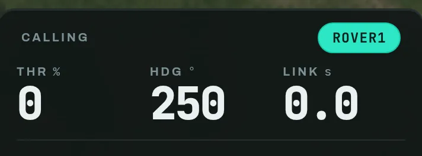
Throttle, heading, and the age of the last packet. LINK climbing is the first
sign of a radio problem.
The fleet

Mode, battery, link and live track speeds per rover. Tap one to select it — the teal fill is the only thing that ever means "the rover you are calling". Note rover3, latched.
The camera

JPEG-over-UDP from the robot, served as browser-native MJPEG. Green is the
object object_align is tracking; amber is everything else it can see.
FPV needs WiFi, not the radio — 57600 baud cannot carry a camera. Start the
robot with --fpv --fpv-host <base-ip>.
The telemetry rows
Under the fleet: mode, position, heading, GPS fix health, wheel speed, battery, what the detector sees, and the link. Each carries a colour that means the same thing everywhere — grey is "nothing to say", green is fine, red wants you.
The wheels row appears only on a build with
encoders fitted, and it is the
one number the rest of this screen cannot give you: left/right on the fleet
row are what the rover was told, and this is what the wheels actually did. It
leads with the gap between the two sides rather than the two speeds, because the
gap is what you are watching for — a rover that curves shows it here before the
map catches up. See
Wheel speed matching.
Modes

One is always active. Switching is instant and reversible; the drive layer does not change.
Under the grid, Routines lists the state machines this rover is carrying, by the name you gave each one — see Routines. Tapping one selects and runs it, which is the fifth mode; the running one shows the step it is in, and a Stop below returns the rover to teleop. Nothing is listed until you have built one, because "run a routine" is not something an operator wants — running a particular routine is.
The pad

Up is throttle, sideways is steer. It releases to zero and rate-limits to the radio's budget.
The stop
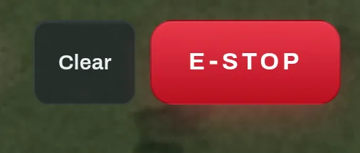
Above every other layer, on every screen — including the one where you are editing drive limits. Clear only appears once something is latched.
Two renditions
The sun/moon button in the top bar is a field control, not a preference. Dark is right in a pit; the 7″ panel outdoors needs daylight, because sunlight on glass beats any dark UI. The choice is remembered per device, so the kiosk that boots outdoors and the laptop indoors never fight.
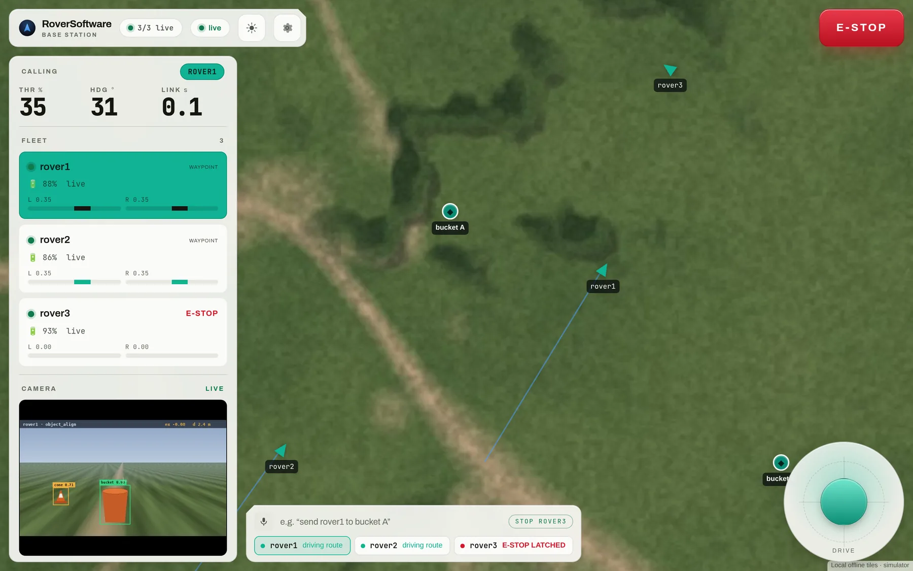
Same identity, same geometry, same grammar — only the light changes, and the accent darkens so the contrast ratio against its own ink holds.
3 · Drive a rover
A gamepad on the base station, or the touch joystick in the browser.
- Tap a rover in the fleet list. Everything that follows applies to it.
- Make sure it is in Teleop. The mode grid is under Control in the rail.
- Drive it: hold the on-screen pad, or use a gamepad — R2 forward, L2 reverse, right stick to steer.
Plug the gamepad into the base station, not into the tablet. It is read there by the bridge process itself and its commands go straight out over the radio. A pad connected to whatever machine is showing the dashboard does nothing: the browser has no part in the physical-controller path, so a laggy socket, a reconnect or a backgrounded tab cannot come between a trigger pull and a rover moving.
Both inputs produce a throttle and steer in -1 … +1 and both are rate-limited
to the bridge's drive_hz, which is one shared airtime budget. That is why a
physical pad and a tablet joystick feel identical, and why two operators cannot
flood the radio between them.
Failsafe
Teleop stops the robot if drive commands stop arriving (
command_timeout). Walking out of radio range parks the rover rather than leaving it at its last throttle. E-stop overrides every mode until it is explicitly cleared.
If the gamepad's buttons are wrong
They will be. Axis and button indices describe a driver, not a controller — the same pad enumerates differently on macOS and Linux, over USB and over Bluetooth. Settings → Controller remaps it by pressing the control you want, with a live view of every axis and button and the throttle/steer the current mapping produces.
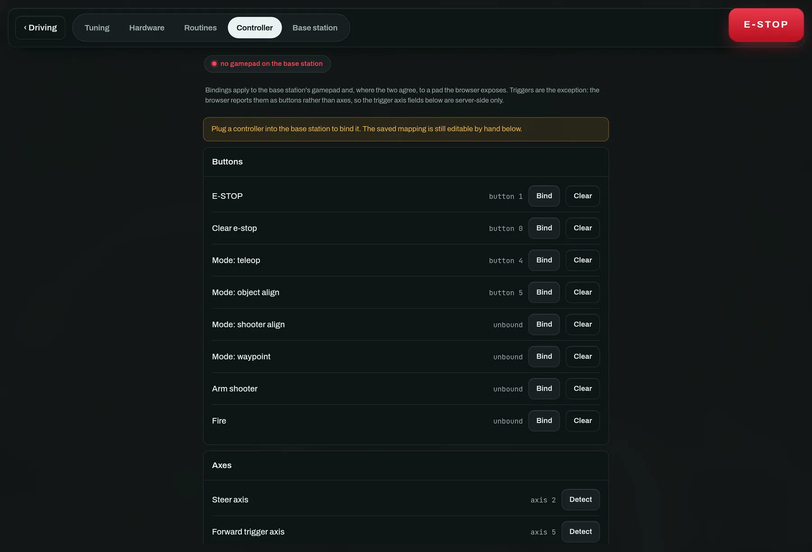
Also here: dead zone, trigger rest value (a trigger that idles at -1 instead
of 0 is normal), throttle and steer authority, and steering inversion. This
replaces editing constants and restarting a service.
If it feels twitchy rather than wrong
Reach for expo before authority. Authority scales everything, so it buys
fine control by giving up top speed; expo bends the middle of the travel down
and leaves the endpoint where it was. At 0.6, half stick gives 0.28 instead
of 0.5 and full stick still gives 1.0. 0 is the linear stick, which is
what every build had before the curve existed.
Leaving the dead zone no longer steps: the remaining travel is rescaled back onto the full range, so just past centre is near zero rather than jumping straight to the dead-zone value. That means you can raise the dead zone to cover a worn, drifting stick without making the twitch worse.
Driving on a stick instead of the triggers
Set Throttle axis (stick) to a stick axis and the drivetrain comes off the triggers entirely, which frees both to be ordinary buttons. Sticks report up as negative, so Invert throttle stick is on by default; it does not affect the trigger layout. The mixing is unchanged either way — it happens on the robot, so both layouts put the identical thing on the radio.
The buttons a gamepad also carries
Beyond driving, the mapped pad can e-stop, clear, switch mode, and arm or fire the launcher. All of it is remappable on the same page, and all of it goes through the same whitelist a spoken order does.
Shooter spin / shot is the launcher by hand while you drive, and is not the
same button as Fire: that one is the aligned, armed, dwelled shot and carries
all of those rules. This one carries none of them — it is refused only by the
e-stop and by a running routine. What it does depends on the build: on a
flywheel (shooter.target_rpm above 0) it toggles the wheel between speed and
stopped, because a wheel takes seconds to spin up and holding a button for a
whole match is nobody's idea of a control; on a servo launcher it fires one
shot.
Two things you write yourself go on buttons too, in slots further down that
page: a routine, and a mechanism preset — the named states from
Hardware, so intake → in is a thumb rather than a trip to
another tab. A preset latches until something else changes it, so a mechanism
you drive both ways wants two buttons (in and out); give it an auto-stop in
Hardware if it should also give up on its own. Presses are ignored while a
routine is running, which owns the mechanisms until you switch back to teleop.
4 · Save places, then send a route
Name the field once; build a run out of it every match.
A place is a named position on the field, saved on the base station and shared by every rover. The best way to make one is to drive a rover until it is standing on the thing and press Save rover position — that is more accurate than any amount of squinting at imagery, and it is the reason the button sits next to the driving controls rather than behind a menu.
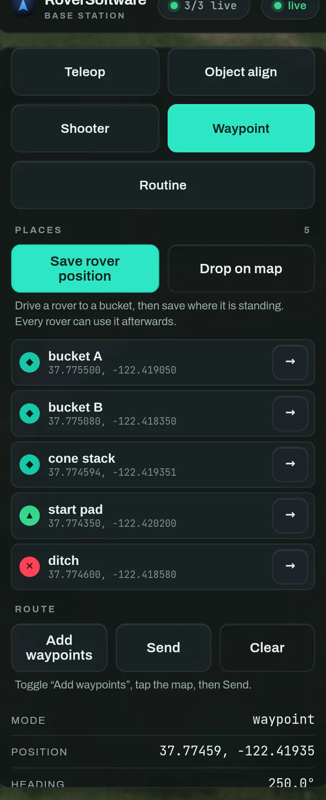
Places carry a kind — bucket, marker, start, hazard — which is what the
glyph on the map means. Tap → on a row to push it onto the pending route.
Dropping a route on the map
- Press Add waypoints under Route.
- Tap the map where you want the rover to go. Points are numbered as you drop them.
- Press Send. The rover switches to waypoint mode and starts driving it.
Waypoints are amber because they are a plan — proposed, not yet done. As the rover reaches each one, its own trail is drawn in teal behind it. Clear discards a route you have not sent.
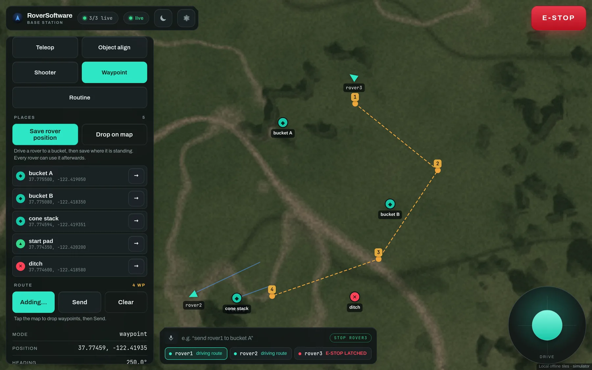
Mid-draw. Four points dropped, nothing sent yet — the route is still a plan you can add to or clear, and the rover is still in whatever mode it was already in.
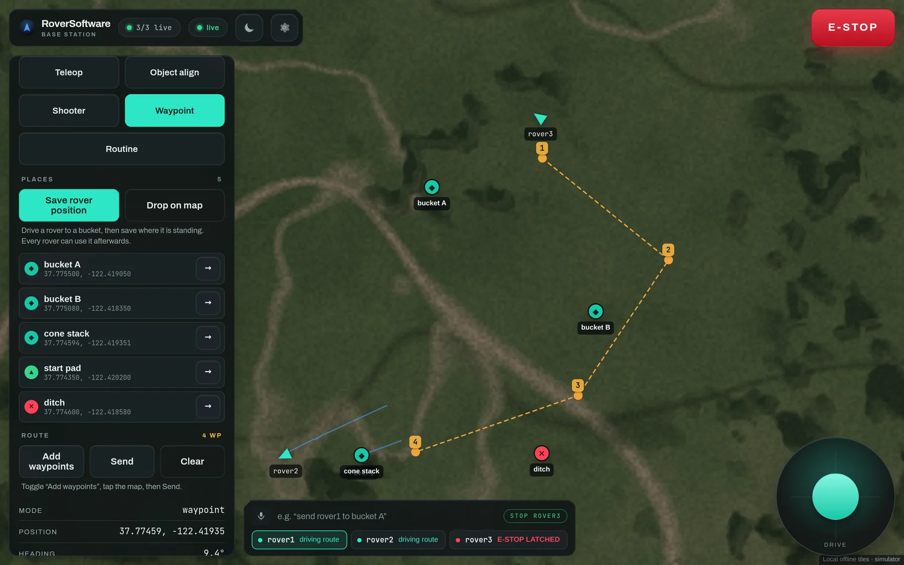
A sent route. The rail shows the mode has flipped to waypoint, and the command
dock at the bottom reports what every rover is doing at once — driving route,
aligning on target — so you can see the fleet without changing selection.
Navigation needs a heading
With no compass the robot uses the GPS module's track angle — true North, no calibration — which is meaningless standing still, so a BNO085 IMU is preferred when one is fitted. Pick with
--heading-source auto|gps|imu.
Why places, rather than coordinates
A routine that refers to a place follows it when you move it. Re-survey "bucket A" on the morning of the event and every routine that drives to it is correct, with nothing re-edited. Coordinates typed into a state machine are correct exactly once.
5 · Describe your hardware
Settings → Hardware. What the robot HAS, written from the dashboard.
Nothing about your build is compiled in. The layout document says which drivetrain you have, how many motors and servos are fitted, and what the rest of them are grouped into. Change it from the tab, save it to the robot, restart, and the robot is a different machine.
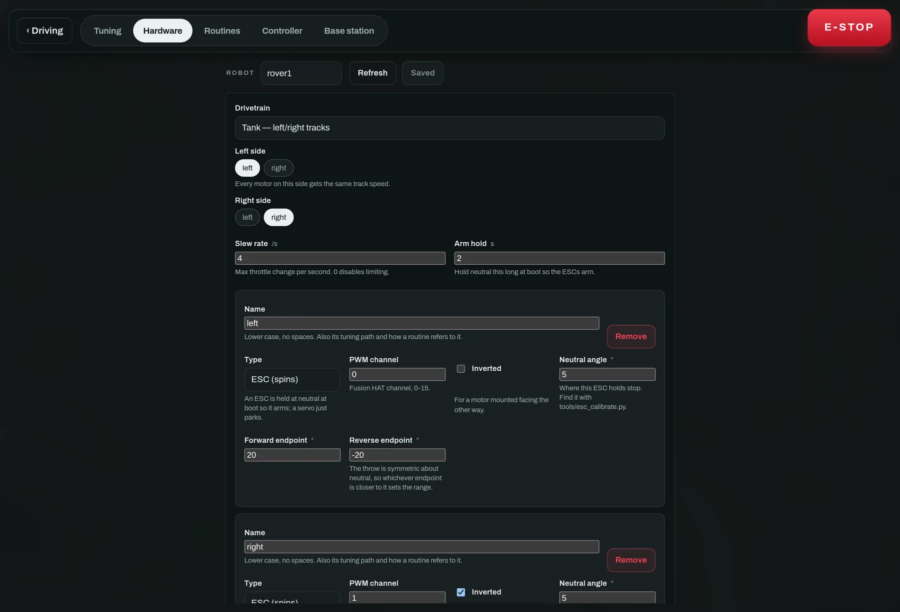
The tab is a draft you edit locally and send in one go — unlike the tuning page next door, which applies each field as you change it. A layout is a tree, and half a tree is a robot with one drive motor.
1 · Pick the drivetrain
| Kind | What it is | What you then assign |
|---|---|---|
tank | Two sides, skid steer | Which motors are on the left side and which on the right. Every motor on a side gets that side's track speed, so a six-wheeler is three names on each list. |
servo_steer | Drive motor plus a steering servo | The drive motors, the steering servo, a steering gain and a pivot creep. |
single | One motor, no steering | The drive motors only. |
none | No drivetrain at all | Nothing — for a fixed platform that is all mechanism. |
A steered chassis cannot pivot on the spot
…and object align and waypoint mode both ask it to. Pivot creep is what makes that survivable: it creeps forward so the steering bites. Set to zero, the rover will steer at its target without ever moving.
2 · Add a motor
Press + Motor at the bottom of the drivetrain card. You get a fresh actuator card with the fields below; fill them in and it exists.

An existing motor. Every field carries the sentence you would otherwise have had to find in the source.
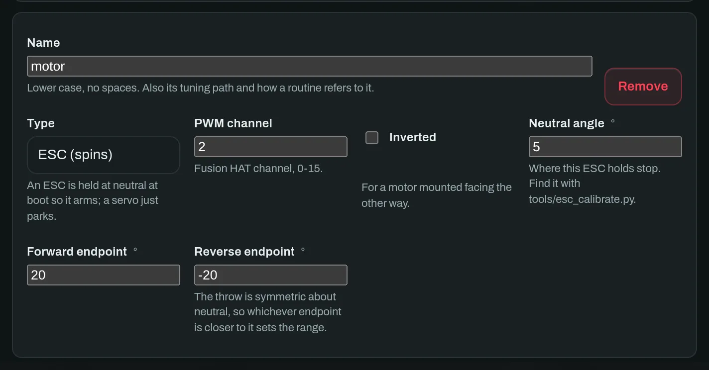
A motor added just now. It starts on a free channel and a safe neutral, so an unfinished card cannot arm anything.
Name
: Lower case, no spaces. It is also this actuator's tuning path and how a
routine refers to it, so intake_motor is worth more than m3.
Type : ESC (spins) is held at neutral at boot so it arms; Servo (holds a position) simply parks. Pick wrong and an ESC will refuse to arm.
PWM channel
: The Fusion HAT channel, 0–15. Claiming a channel twice is refused —
silently making two motors move together is not a thing this page will do to
you.
Inverted : For a motor mounted facing the other way. On a tank chassis the right side is almost always mirrored, so this is almost always ticked on one side.
Neutral angle
: Where this ESC holds stop. Find it with tools/esc_calibrate.py; do not
assume it is zero.
Forward / reverse endpoint : The ends of the throw. The throw is symmetric about neutral, so whichever endpoint is closer to neutral sets the usable range — which is what keeps a normal and a mirrored motor starting together and matching speed even when neutral is not centred.
Order matters
Add the motor here first, then assign it to a side in the drivetrain card above — the Left side and Right side pickers list the actuators that exist, so a motor you have not created yet cannot be assigned.
The encoder, if this motor has one
Press Add in the Encoder row at the bottom of the card. Optional, and off on every motor until you do — a motor without one simply runs open-loop, exactly as the rover always has.
Why bother: everything else on this page commands a throttle, and a throttle is a wish rather than a speed. Two motors handed the same pulse turn at different rates — different ESCs, different gearbox friction, weight off centre, one track on grass — so the rover drives a slow arc while every number in the dashboard reports a straight line. An encoder is the only thing that can see that, and Wheel speed matching is what then corrects it.
A pin / B pin : BCM GPIO numbers on the Pi header — not the PWM channel above. They are different buses, and mixing them up is the first mistake everyone makes here; it presents as an encoder that counts nothing at all. Set both or neither: one channel of a quadrature encoder decodes nothing, and the robot refuses a layout that sets only one. Claiming a pin twice is refused for the same reason a PWM channel is, and a worse one — two actuators reading one pin count the same edges, so a rover with one genuinely dragging track would report both wheels at exactly the same speed.
Counts per rev
: Counts per revolution of the wheel, gearbox included. Measure this, do not
derive it — the number on the encoder is per revolution of the motor, this
decoder counts four edges per cycle, and the printed gear ratio is frequently
not the real one. Run python tools/encoder_monitor.py --pins 17,27, zero it,
turn the wheel exactly one full turn by hand, and read the count.
Count inverted : Tick it if a wheel counts down when driving forward. Separate from Inverted above: that one mirrors the motor, this one mirrors the sensor, and a mirrored track motor usually needs both.
The pins are read through fusion_hat, the same library that drives the motors,
so there is no separate GPIO package. It does need rpi-lgpio in place of the
stock RPi.GPIO, which cannot arm interrupts on a current kernel — one command,
just encoder-gpio, and Wiring and calibration has the
why.
3 · Group the rest into mechanisms
Anything that is not drive is a mechanism: an intake, an arm, a launcher. A mechanism owns one or more actuators and comes in three kinds.
Powered
: Holds a value until told otherwise — an intake that spins, an arm that holds
an angle. Give it named presets like in, out and stow, so a routine
asks for "intake → in" rather than a column of numbers. Auto-stop ends the
motion after N seconds; 0 runs until stopped.
Pulse : Owns a cycle: rest angle, active angle, active time, recover time, cooldown and a magazine count. Asking it to fire repeatedly still yields one activation per cycle, which is what makes a launcher safe to wire to a condition that stays true.
Sequence : A queue of steps run one after another. This is the kind for a shooter whose actuators cannot all move at once — spin the flywheel, then push the ball in, then run the belt. It is covered in full below.
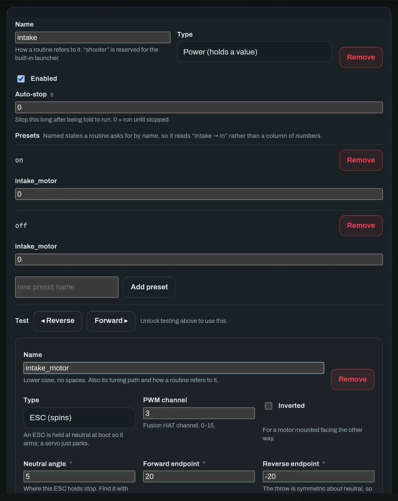
A powered mechanism with two presets and its own actuator. The Test row jogs it from the bench — and is refused unless the robot is in teleop with no e-stop latched, because a bench test that runs while a routine owns the motors is how a hand ends up in an intake.
3a · Sequence a mechanism whose parts move in turn
Both of the kinds above write every actuator at the same instant. A launcher with a feeder servo, a flywheel and a belt on it needs the opposite: an order. Press + Sequence mechanism, add the actuators, then add a step per stage.
Each step has three parts.
What it moves. : Tick an actuator to include it, and give it a value. The units are the actuator's own — degrees for a servo, throttle (−1 to 1) for a motor — so a step reads the way the build does.
: An actuator you do not tick is left exactly as it was. This is the whole point, and the one thing to get straight: the flywheel started in step 1 keeps spinning through step 2, which is what lets the feeder push a ball into a wheel that is already up to speed. (Presets work the other way round, zeroing what they do not name. If you want that here, tick "stop everything this step doesn't name".)
How long it holds. : Hold for at least is a floor, not a duration. The step ends when that time has passed and its condition is satisfied. Leave the condition off and the floor is all there is, which is an ordinary timed sequence.
How fast it gets there. : Ramp over is acceleration, and it answers a different question from the one above: not how long the step holds, but how long the actuators take to arrive. Leave it at 0 and the step writes its values instantly, which is what every step did before this field existed. Set it, and each actuator the step names is walked from where it actually was to its target over that many seconds — a flywheel eased up to speed instead of slammed there, a feeder arm that arrives at the ball instead of hitting it.
: It is per-step because a shooter wants both in one cycle: a long, gentle spin-up, then a feeder that must move now, before the wheel bleeds speed.
: Deceleration is a ramp downward — a step whose target is lower than the
current value, which the same linear walk handles in either direction. A shooter
that should wind down rather than cut out ends with flywheel 0 over 1 s. Note
that this is the only way to get a soft stop: e-stop, a mode change and
shutdown all park instantly and always will, because a mechanism that eased
itself down over a second is one that ignores the button for a second.
: The ramp counts as part of the hold: a step cannot hand over while its own actuators are still travelling, so the effective floor is whichever of hold for at least and ramp over is longer.
What else it waits for. : "A motor reaching a speed" is the one a shooter wants. Timing a spin-up works at one battery charge and fires early at every other; waiting for the encoder to actually read 3 000 rpm works at all of them. It needs encoder pins on that actuator — the robot refuses the layout otherwise, rather than shipping a gate that can never open.
: "Another mechanism being ready" waits for a different mechanism to go idle, which is how two mechanisms hand off to each other.
A gate that never opens would leave the flywheel at full throttle forever, so every gated step has a ceiling — its own give up after, or the mechanism's step timeout. Reaching it stops the whole sequence by default and parks everything, because carrying on is exactly the jam the gate was written to prevent. Switch it to carry on anyway only when the wait is an optimisation rather than a safety condition.
The finished thing for the three-actuator launcher:
| # | Step | Moves | Ramp | Holds ≥ | Waits for |
|---|---|---|---|---|---|
| 1 | spin up | flywheel 1.0 | 1.2 s | 0.2 s | flywheel ≥ 3000 rpm |
| 2 | feed | feeder 40° | 0.35 s | 0.25 s | — |
| 3 | advance | belt 0.8 | 0.2 s | 0.6 s | — |
| 4 | spin down | flywheel 0 | 1.0 s | — | — |
Start it from a routine with start a sequence. It returns immediately and advances itself off the control loop, so nothing here ever blocks driving — asking again while it runs does nothing, so it is safe on a button that stays held. To wait for it to finish, transition on mechanism is ready, which stays false for exactly as long as it is running.
A sequence cannot go straight onto a gamepad button
The mechanism preset button slots bind a preset, and only
powermechanisms have presets — a sequence has steps. Binding one to a preset slot gets youpreset refused: 'launcher' is not a powered mechanismon the robot's console and nothing else.To fire one from the pad, put it in a one-state routine (start a sequence) and bind that to a routine button. Give the state
drive: teleopand you keep stick control while it fires. See Routines.
Every way of stopping parks it
E-stop, a mode change and shutdown all park a half-finished queue: servos to the rest angle, motors to stop. A sequence never resumes from the middle — the next activation starts at step 1.
4 · Save it
Press Save to robot. The layout is sliced into numbered fragments, and nothing is applied until every fragment arrives — then the robot validates the whole document, stores it, and echoes the stored copy back, because the validator clamps and what was saved is not always what was sent. Errors come back naming the state or field that was wrong.
A saved layout takes effect on the next start
Actuators are built by constructors; rebuilding them mid-loop with the drivetrain armed is how an ESC ends up holding an undefined pulse. Press Restart robot at the top of this tab — it asks twice, then the rover parks its motors, drops off the fleet for a few seconds and comes back running the new layout.
just restart,sudo systemctl restart roversoftware-robotand a power cycle all still work, and are what you need if the rover was started by hand rather than as a service: it refuses to stop when nothing would start it again.
Before you trust any of it, calibrate the ESCs — Wiring and calibration is the wheels-off-the-ground procedure.
6 · Program it without writing Python
Settings → Routines. A state machine you draw, that runs on the robot.
A routine is a state machine on a canvas. Each box is a step: it says what drives, what happens when the robot enters, holds and leaves it, and what makes it move on. Saved routines run on the robot, so they survive losing the radio — and the box the robot is actually in lights up as it runs, which is what turns the editor into something you can debug a match with.
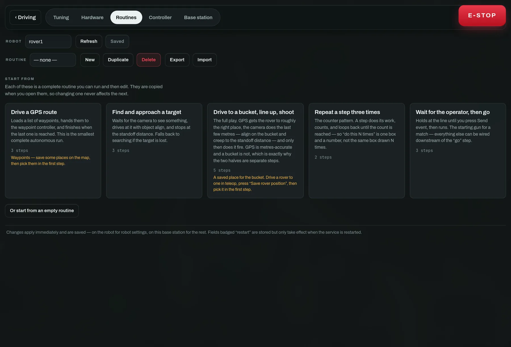
Start from a template rather than an empty canvas. Each one is a complete routine you can run and then edit; they are copied when opened, so changing one never affects the next. Amber text on a card names a prerequisite — a saved place you need before it will do anything.
The canvas
- Drag a box to move it. Tidy re-lays out the whole graph.
- Drag from a box's right edge onto another box to wire them together.
- Tap a wire to say when it fires.
- Tap a box to open the inspector and edit what it does.
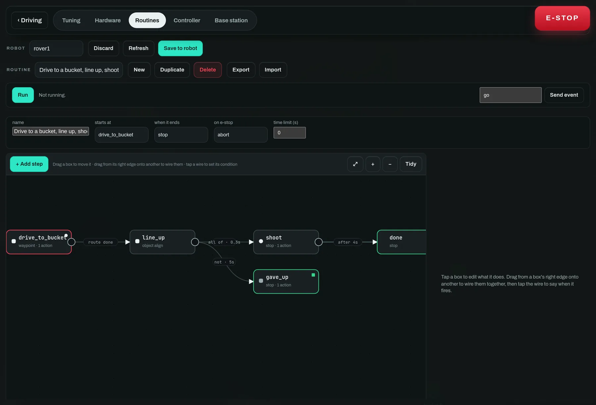
The full play. GPS gets the rover roughly to the right place, the camera does the last few metres, and only then does it fire. GPS is metres-accurate and a bucket is not, which is exactly why the two halves are separate steps.
What a step contains

The inspector for one step. Drives with is the only thing that commands the motors — no action drives, so exactly one thing owns them at any moment.
Drives with
: Stop, Hold position, Fixed throttle/steer, Teleop (hand it back to the
driver), or delegate to Object align, Shooter align or Waypoint route.
Delegation is how the graph composes the autonomy that already exists rather
than re-expressing it.
When entered : Runs once. Set a mechanism to a preset, load a GPS route, arm the launcher, add one to a counter.
Action while here : Runs every tick, at the control-loop rate. Right for holding a mechanism at a power; wrong for counting, which is why count this belongs in when entered.
When leaving : Runs however the state is left — including a timeout, an abort or an e-stop. The right place to disarm something.
Then : The transitions, checked in order, first match wins, at most one per tick. Order is meaning: put "gave up" below "succeeded".
What a wire can wait for
| Group | Conditions |
|---|---|
| timing | after a delay · immediately · never (hold here) |
| vision | when the camera sees a target · when lined up · when at the standoff distance · when the object is at a distance |
| navigation | when the route is finished · when pointing a direction · when near a saved place |
| mechanism | after N shots · when a mechanism is ready |
| logic | ALL of · ANY of · NOT · after this has happened N times |
| operator | when I press a button · when the e-stop is latched |
"When the object is at a distance" is the one to reach for when at the standoff distance is nearly right but not quite. They are different questions: the standoff belongs to whichever align mode is driving and fires when that mode decides it has arrived, while this one is a number in metres you name, tested whatever is driving — so a state can hand over at 2 m on the way in, before any approach finishes.
It measures one of two things, and picking the wrong one is how a routine stops at the wrong object:
- target — how far away the detected object is. Measured by the ultrasonic while the target is centred in its beam, and read off the bounding box past that. Needs a detection.
- ahead — how far away the nearest thing straight ahead is, from the ultrasonic alone. Needs no model at all, which makes it the one for "creep forward until something is close" — and the wrong one for "until the bucket is close" in a room with a chair in it.
Fill in within to close in, no nearer than to wait until something is far enough away, or both for a band. It is never true while the distance is unknown, so a state waiting on one waits rather than proceeding on a number nobody has. Take care asking for less than the collision guard's stop distance: the rover halts there, and the transition never fires.
Every condition can additionally be required to hold continuously for a
number of seconds before it counts. That one field is the difference between a
launcher that fires on a single noisy frame and one that waits half a second to
be sure — it is the 0.3 on the wire out of line_up above.
What an action can do
| Group | Actions |
|---|---|
| mechanism | set a mechanism to a preset · run one at a power · stop one · pulse one once · start a sequence · fire · arm / disarm the launcher |
| navigation | load a GPS route (from saved places) |
| logic | count this · reset a counter |
None of them drive. That is the state's drive source, which is what guarantees
exactly one thing commands the motors at any moment.
Start a sequence is worth a note, because it is how a routine drives a multi-stage mechanism without spelling the stages out as states. It kicks off the queue the layout already describes — flywheel, then feeder, then belt — and returns at once, so the state carries on ticking. Asking again while it runs does nothing, which makes it safe in every tick. To wait for the end of one, transition on when a mechanism is ready: a sequence answers "not ready" for exactly as long as it is running, and the same is true if it aborts, so the wait ends either way rather than hanging.
Running it
- Save to robot. Routines take effect the moment they land — they are data the engine reads, not hardware a constructor owns.
- Press Run. The robot switches to
routinemode and the live box lights up. - For a "when I press a button" wire, type the event name and press Send event. A press is cleared whenever a new state is entered, so it cannot satisfy a transition it was not meant for.
- Stop ends the run. The e-stop does too, and the routine's on e-stop setting decides whether it aborts or holds.
A saved routine is not confined to this tab. Every one the robot carries appears by name under Routines on the driving view, next to the mode buttons — one tap selects and runs it, the running one shows the state it is in, and pressing it again restarts it. It is also sayable: "run the collect cones routine", or just its name. Naming a routine is therefore how you invoke it, so name it the way you would ask for it out loud. Starting one by voice always asks for a tap to confirm; stopping never does.
Test it dry
The simulator runs the real state-machine engine with the real validators. You can build, run and debug an entire competition routine against
--simand only then put it on a rover.
Routines Export to a JSON file and Import back, which is how you move one between rovers or keep last season's in the repo.
When a graph is the wrong shape
A canvas is good at a sequence of states and bad at arithmetic. The moment a step wants a real loop, a computed throttle, or a number worked out from a measurement, it is trying to be a program — and the Code tab is the same rover, the same sensors and the same delegation, reached from Python instead. They sit side by side on purpose; most teams end up with some of each.
7 · Program it in Python
Settings → Code. Real Python, written in the dashboard, running on the robot.
A routine is a state machine you draw. It is the right shape for "line up, wait until you're aligned, shoot, back off" and the wrong shape for anything with arithmetic in it — a loop that scales throttle by measured range is a program, and drawing it as a graph gives you a picture of a program rather than a program.
So the Code tab is the other half. Same rover, same sensors, same mechanisms, same autonomy modes — reached from Python instead of from a canvas. Neither replaces the other, and most teams end up with some of each.
# Creep up to whatever is in front, then stop short of it.
while True:
ahead = rover.distance_ahead()
rover.watch("ahead", ahead)
if ahead is not None and ahead <= 0.4:
break
rover.forward(0.22)
rover.sleep(0.05)
rover.stop()
print("stopped at", round(rover.distance_ahead() or 0, 2), "m")
Start from a template rather than an empty file. Every one runs as-is on a bare chassis — they check for a camera or a mechanism before reaching for one — so "press New, press Run, watch it move" is true before any of the optional hardware is fitted.
Everything hangs off rover
There is no import and no setup. rover is already there, and the panel down
the right-hand side lists every call it has; clicking one types it at the caret.
| Driving | rover.forward(0.3, seconds=2) · back · turn · arcade(throttle, steer) · drive(left, right) · stop() · turn_to(heading) |
| Sensors | rover.distance_ahead() · rover.heading() · rover.position() · rover.gps.fix · rover.imu.calibration · rover.wheels.left_rpm |
| Camera | rover.vision.seen · .label · .offset · .bearing · .distance · rover.look_for("bucket") |
| Mechanisms | rover.mech("intake").power(0.8) · .preset("up") · .pulse() · .ready · .wait_ready() · .spin_for(metres) |
| Launcher | rover.shooter.spin() · .spin_for(metres) · .fire() · .ready · .shots |
| Autonomy | rover.align_to("bucket", within_m=1.0) · rover.follow_route(points) · rover.hand_over("waypoint") |
| Waiting | rover.sleep(s) · rover.wait_until(cond, timeout=10) · rover.time() |
| Output | print(...) · rover.log(...) · rover.watch(name, value) |
Distances are metres, angles are degrees (0 = north, clockwise positive), speeds are −1 to 1, and time is seconds. No exceptions, so nothing needs a suffix in its name to be read correctly.
A reading is None whenever nobody can say — no GPS fix, nothing detected, no
ultrasonic fitted, no range calibration. Check for it rather than comparing it;
None <= 0.4 raises, and it is the first thing every new script gets wrong.
Handing over to the autonomy that already exists
rover.align_to("bucket", within_m=1.0) does not re-implement an approach. It
hands the wheel to the same object_align controller the Routines tab
delegates to, with the same gains and the same standoff, waits until that
controller says it has arrived, and hands the wheel back. Your script keeps
running the whole time — it can watch, log and work a mechanism while the rover
drives itself.
The detector target and the standoff are borrowed, not taken: whatever the operator had selected is put back when the script ends, however it ends.
loop(), for anything that steers
Define a function called loop() and it is called repeatedly at the control
rate, after your top-level code has run once. That is the shape for anything
steering on a live measurement — and it puts the pacing in the runner rather
than in a rover.sleep(0.02) at the bottom of a while True: that the next
person to edit the file deletes.
Running it
- Save to robot. Scripts take effect the moment they land — they are text the runner compiles, not hardware a constructor owns. The Run button is disabled while you have unsaved edits, because Run starts what the rover is carrying and watching a bug you already fixed happen again is a miserable five minutes.
- Press Run (or ⌘/Ctrl + Enter). The robot switches
to
scriptmode. - Watch the console underneath.
printlands there;rover.watchputs a named live number in the row above it, which is what you want for anything changing at 50 Hz. - Stop ends the run and puts the rover back in teleop.
Every script the robot carries also appears by name under Scripts on the driving view, beside the routines — so you do not have to be in the editor to start one mid-match.
Test it dry
The simulator runs the real controller and the real sandbox. You can write, run and debug an entire script against
--sim— including the syntax-error path — and only then put it on a rover.
The rules it runs under
These are worth reading once, because they are what makes "run arbitrary Python on the robot" a reasonable thing to do.
Your code never touches the hardware. It puts commands in a mailbox and the control loop applies them on its next tick. One thread writes PWM, and it is the same one that always did.
Your code is not on the control loop. It runs on its own thread, so a script that spins forever costs a core, not a rover. The 50 Hz loop keeps its tick.
It can always be stopped. Every rover call checks for a stop, and so does
a line hook — so even while True: pass unwinds when you press Stop. The
exception that does the unwinding is not a normal one either: a script's own
try: ... except Exception: cannot swallow the stop button.
When it stops, the motors stop. Finished, crashed, stopped, e-stopped, hit
its time limit, mode switched — all of them end with the drive command back at
zero and every mechanism stopped, without your script needing a finally:.
The e-stop is above all of it. It is arbitrated before the script controller is asked at all, exactly as it is for a routine.
A run always ends. scripts.max_runtime (5 minutes by default) is a
wall-clock ceiling. A bug in a loop condition looks exactly like a rover that
has stopped taking orders, so every run ends whatever it thinks.
What Python you get
Ordinary Python, minus the parts that could only cause trouble on a robot:
- Available:
math,random,statistics,json,re,collections,itertools,functools,dataclasses,enum,decimaland friends. - Refused:
os,sys,subprocess,socket,threading,importlib,pathlib,ctypes— andopen,exec,eval. timeis refused too, and that one is a safety rule rather than tidiness:time.sleepcannot be interrupted, so a script napping for thirty seconds would ignore the stop button for thirty seconds while the rover kept driving. Userover.sleepandrover.time.
That guard is against mistakes, not malice. In-process Python cannot be a security boundary and claiming otherwise would be the dangerous statement — anyone who can push documents to a rover could already reflash it. It is also not where the safety comes from: every rule in the section above holds whatever the script does.
Syntax errors are refused, not deferred
The robot compiles each script as it lands. A missing colon comes back as
line 12: expected ':', the editor puts a red marker on line 12, and nothing is
installed — the rover keeps the last set that was good. That is deliberately
different from "saved fine, died on Run", which is the version you discover at
a field.
Compiling is not running. A document full of os.system(...) compiles and
stores without anything happening; it is refused when you press Run, by the
import list above.
Knobs
Under Settings → Tuning, all live:
scripts.enabled
: Whether this robot will run one at all.
scripts.max_runtime
: Wall-clock ceiling on a run, in seconds.
scripts.drive_limit
: Ceiling on what a script may command the tracks, 0.05 to 1.0. Turn it down to
bring a new script up on a bench and full throttle becomes a crawl — it scales
the command rather than clamping each track, so the rover drives the same arc
the script asked for, just slower.
scripts.output_lines
: How much console output the robot keeps.
Getting them in and out
Export .py writes the open script as a plain .py file, which opens in any
editor and diffs in git. Export all writes the whole set as the JSON the
robot stores. Import takes either: a .py becomes one new script, a .json
replaces the set.
Console output is the one part of this that needs WiFi — it rides the bulk link
with the config snapshots and the documents, because a script's print is
kilobytes of text and the radio is carrying driving, telemetry and the e-stop.
A rover out of WiFi range still runs its script and still tells you on the
driving view whether it is going and why it stopped; it just cannot tell you
what it is saying.
8 · Tune it in the field
Settings → Tuning. Over the radio, live, and saved on the robot.
Everything the dashboard is allowed to change is on this tab: PID gains for object alignment and waypoint heading hold, drive limits and per-motor ESC calibration, loop and telemetry rates, vision thresholds, shooter geometry and firing policy, GPS/IMU and FPV.
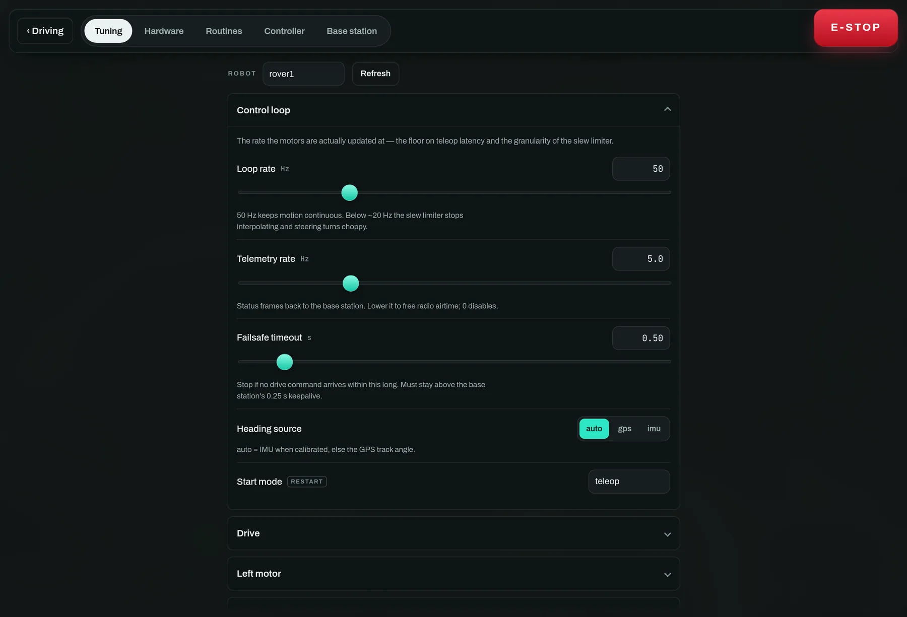
Fetched when you open the tab rather than streamed: the full set is about 2.4 KB on a link shared with telemetry. On a robot running its own layout, the per-motor groups are the ones it declared.
Three rules worth knowing
Clamped, not refused
: Ask for a gain of 500 and you get the maximum, echoed back — so the field shows
what the robot is actually doing, not what you typed. A browser cannot reach an
arbitrary attribute: the tuning whitelist in robot/tuning.py decides which
paths exist and clamps every value.
Badged "restart" : Serial ports, PWM channels and enable flags are stored immediately but only take effect on the next start. The badge tells you which is which, so you are never left wondering whether a change took.
Saved on the robot : Robot settings persist on the robot, base-station settings on the base station. Field tuning survives the next power cycle, and a rover carries its own calibration to the next event.
The base station's own settings

Radio airtime budget (drive_hz), dashboard refresh, video frame rate, basemap
URL and trail length. Point the basemap at a local tile server here for offline
field use.
Watching a loop instead of guessing at it
A PID is the one thing here you cannot tune by watching the rover. "It wobbles"
does not say whether kp is too high or kd is doing nothing, and the loop runs
fifty times a second with every value in between thrown away.
Switch on Graph the loops (under Control loop) and each loop group grows a pair of plots above its gains:
Tracking, in the loop's own units — the dashed line is where it is aiming, the solid line is where it is pointing, and the shaded gap between them is the error. What you want to see is the gap closing and staying closed.
Output, split into the P, I and D contributions that add up to it. These are
contributions, not gains: kp times the error, not kp. It answers the question
a gain by itself cannot — which term is actually driving this? A D trace that
never leaves zero is a kd that is not participating. An I trace that climbs and
stays up is wind-up. at limit means the output is pinned at out_limit, and
more gain will change nothing at all.
Hovering reads every series at that instant; Clear throws the history away, which is what you want right after changing a gain — the next curve should be the one your new value produced.
Two things to know. It is sampled at the telemetry rate, not the control rate, so a wobble faster than half that rate aliases — raise Telemetry rate while you look at it. And it costs airtime on every frame, on a radio shared with driving: switch it on to tune, off to race.
Making both tracks turn together
Everything above commands a throttle, and a throttle is a wish rather than a
speed. Two motors handed the same pulse turn at different rates, so the rover
curves away while every number on this page says it is going straight. If the
build has wheel encoders, the
Wheel speed matching group is what closes that gap — and the wheels row on
the driving view is where you watch it happen. That row leads with the gap
between the two sides, because the gap is the thing you are looking for; two
speeds side by side are two facts you then have to subtract.
Mode is the whole feature:
off
: Measure only. RPM still reaches telemetry, which is what you read to set the
other numbers here — so this is not a wasted setting.
match
: Hold the two sides to each other. Needs no calibration whatsoever, not
even counts-per-rev, because its error is a difference and a shared scale
factor cancels out of one. Start here. It only acts while you are driving
straight: a commanded turn is a difference you asked for, and correcting it would
fight the steering.
velocity
: Hold each side to throttle × Max wheel RPM. This also works in turns, and it
makes the throttle mean something repeatable — half throttle is the same wheel
speed on grass as on tarmac, until the motor runs out of authority. The price is
one honest measurement: drive flat out on the surface you will run on and read
Max wheel RPM off the wheels row. Too high and every setpoint is
unreachable; too low and the loop throttles back against a wall that isn't there.
Its gains are graphed like any other loop, in RPM. They look tiny next to the
alignment gains because the error is in RPM rather than in throttle units — the
same reason the heading loops' gains look tiny in degrees. Unusually, the
integral is the term that matters here: a pair of mismatched motors is a
constant bias, which is exactly what an integrator cancels and a proportional
term can only ever half-fix. kd ships at zero because its input would be a
differenced noisy measurement, which is noise with a gain on it.
What happens when an encoder falls off
A speed loop that keeps integrating against a sensor reading zero will wind that side to full throttle. So a wheel commanded above Engage above for Stall timeout with its encoder still reading a standstill trips a fault: the loop opens, the
wheelsrow says which side, and it stays open until the drivetrain stops — an encoder that came loose cannot re-arm the loop while the rover is still moving. Setting the timeout to0disables that check, which is a bench-only thing to do.
You can try all of this with no hardware at all. The simulated rover has the
defect on purpose — its right side is 6% weaker — so run_basestation.py --sim
drives a visible arc on the map, and switching the mode to match straightens it
while you watch.
A tuning order that works
- Drive limits first. Slew rate and max throttle, until hand-driving feels controllable. Everything downstream inherits this.
- Then heading hold. Waypoint mode with two points and nothing else
running; raise
kpuntil it oscillates, then back off a third. Watch the tracking plot rather than the rover — the oscillation shows there first. - Then alignment. Object align against a stationary target. The standoff distance is geometry, not a gain — measure it.
- Firing policy last, and only with the launcher pointed somewhere safe.
Changing gains while a routine is running is legal and sometimes the fastest way to find a value. It is also how you discover that the rover was mid-approach.
9 · Command it by voice, by typing, or from an AI
One whitelist, one confirmation gate, one audit log — whoever is asking.
Tap the microphone in the command dock to open a screen built for talking: hold Space, say the order, and watch the transcript, the parsed command and the fleet's reaction in one place. Speech is recognised on the base station with faster-whisper and classified by a local Gemma in LM Studio, so the whole path works with no internet.
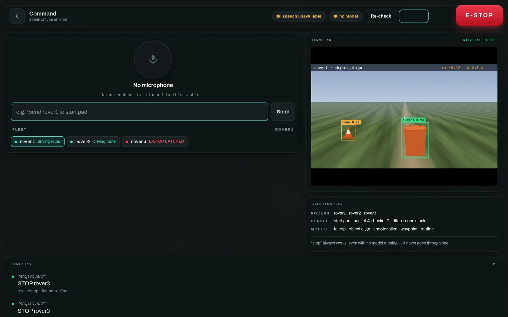
Captured with neither half installed — the badges say speech unavailable and
no model, and typing still works. The two STOP rover3 orders in the log
went through the keyword fast path, which is the whole point of it.
Setting it up
# speech recognition — on this machine, no internet, no API key
pip install faster-whisper
# fetch the weights ONCE while you still have signal (~150 MB)
python -c "from faster_whisper import WhisperModel; WhisperModel('base.en')"
# the language model: LM Studio (or any OpenAI-compatible server).
# load google/gemma-3n-e4b, start the local server on :1234. That's it.
python run_basestation.py --sim # both are auto-detected
A competition car park is not where you want to discover the weights are not cached.
Three properties that matter
"Stop" never goes through the model : It is matched on the raw transcript before any HTTP request, so LM Studio being closed, slow or mid-download cannot sit between the word and the rover. Rover names, modes and the camera take the same fast path, which is why those feel instant while a full sentence takes about 700 ms.
Nothing dangerous on a 4B model's say-so : Firing, arming, jogging and raw drive return a pending card a human taps; it expires after 45 seconds. Everything else is validated against live state first — an unknown rover or an unsaved place is refused with a message naming what does exist.
Both halves are optional
: With no model, keyword commands and typing still work. With no faster-whisper,
everything except the microphone. The screen says which you have. Flags:
--no-voice, --llm-url, --llm-model, --stt-model.
Things that work
| Say | What happens |
|---|---|
stop · all stop · stop rover2 | E-stop, without the model |
rover two · switch to rover three | Selects it, everywhere |
teleop · put it in waypoint mode | Mode change |
rover1 align to the bucket | Sets the target label, then enters object align |
send rover2 to bucket A then start | Routes through both saved places |
show me rover3's camera | Selects it and pulls up the FPV |
what is rover2 doing | Answers from live telemetry |
run the collect cones routine · collect cones | Asks first — starts a routine you built and named |
stop the routine | Ends it and returns to teleop — never asks |
fire · arm the shooter | Asks first — a card you tap |
Routines are matched by the name you typed in the editor, not by the id it generated, and only against the ones actually loaded on the rover being addressed — the You can say panel lists them, so what is on screen is exactly what will be understood. Both forms above work with no model running.
Letting Claude — or any AI — command the fleet
basestation/mcp_server.py is a stdio MCP server. It connects to a running
base station over the same WebSocket the dashboard uses, which is the point: an
AI gets exactly the dashboard's authority — the same whitelist, the same
confirmation gate, the same audit log — because it goes through the same front
door. The tool list is generated from the same intent registry the voice
interface uses, so the two cannot drift.
# see exactly what an AI could do, before you connect one
python -m basestation.mcp_server --list-tools
{"mcpServers": {"rover": {
"command": "python", "args": ["-m", "basestation.mcp_server"],
"env": {"RS_BASE_WS": "ws://127.0.0.1:8000/ws"}}}}
get_fleet translates telemetry into words a model can reason about ("sees:
bucket, centred: true" rather than ex: 0.03). Tools whose intent needs
approval say so in their description and return "waiting for a human" — the
operator taps the card at the base station.
10 · Put it on the robot
A Debian package, a systemd service, and one command to iterate.
There are two ways onto a rover, and they are for different moments.
apt install— the released build. Right for a rover that has to come up on its own after a power cut, and for anyone who is not you. Start there.just deploy/just sync— your working tree, over SSH. Right for the twenty times an hour you change a gain and want to feel it. That is what this page is about.
The development loop
Everything is driven by just, pointed at a
robot by hostname (default rover1.local).
# ONCE per robot: SunFounder Fusion HAT drivers + the fusion_hat library
just bootstrap
just reboot # if bootstrap asks for it
# first-time / clean install: builds the .deb, installs it, sets up the service
just deploy # → rover1.local
just host=rover2.local deploy # a different robot
# FAST iteration: rsync changed code into /opt/roversoftware and restart,
# with no packaging round-trip
just sync
# service and logs
just status
just logs # journalctl -u roversoftware-robot -f
just restart
just config # edit robot.env, then restart
just sync rsyncs robot/, run_robot.py and tools/ straight into
/opt/roversoftware and restarts the service. Use deploy only when the systemd
unit, the dependencies or the env file change.
Give each rover a unique
RS_ROBOT_IDFrames are addressed by id on a shared channel, and two rovers answering to the same name will both take every command.
Running the robot by hand
python run_robot.py --port /dev/serial0 --baud 9600
| Flag | What it does |
|---|---|
--mode object_align | Start in a mode other than teleop |
--mock-motors | No Fusion HAT: mock them, for comms testing |
--fpv --fpv-host <ip> | Stream the camera to the base station (needs LAN) |
--heading-source gps | Track angle only, no IMU |
--vision-backend imx500 | Run detection on the AI Camera's sensor |
--no-gps --no-imu | Bench work indoors |
--telemetry-hz N | Lower to free airtime on a slow radio |
The base station as a touchscreen kiosk
The dashboard ships as its own package for a Raspberry Pi with a screen. It
installs the Python bridge on an internal port (RS_WEB_PORT, default 8001),
the Deno UI on the public port (RS_UI_PORT, default 8000), and a desktop
autostart entry that launches a full-screen Chromium kiosk pointed at it on
boot.
just bs_host=base.local bootstrap-deno # ONCE: the deno runtime
just bs_host=base.local deploy-basestation # builds the UI + installs the .deb
just bs_host=base.local sync-ui # fast: rebuild + push the UI
just bs_host=base.local bs-reload # refresh the kiosk browser
just bs_host=base.local bs-ui-logs # what the UI service is saying
The Deno runtime is not on apt — install it once with bootstrap-deno, or
the bridge still runs, just without the UI.
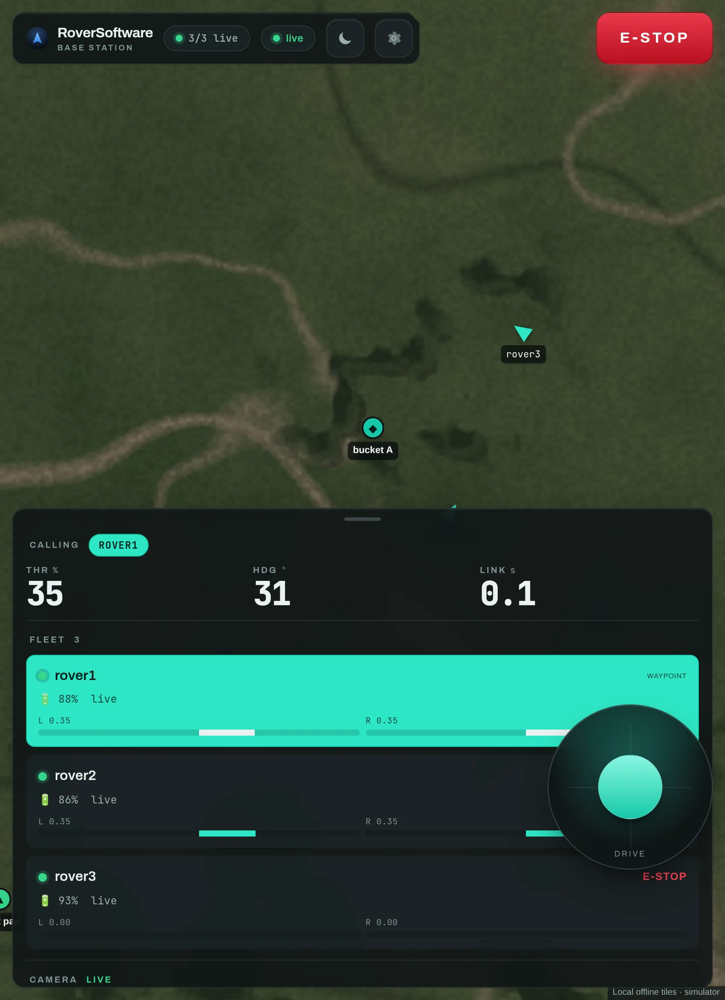
The portrait layout, for a tablet or the official 7″ 800×480 panel. The bottom sheet collapses, the map keeps the space, and the stop button stays where it was. Large tap targets, iPad safe-area insets, and locally-bundled map and fonts — no CDN, so it works fully offline.
Arriving somewhere new
The rovers are on last week's WiFi and nothing that rides it — configuration, layouts, routines, the camera feed — works until each Pi is told about the network in front of you. Settings → Network does that from the dashboard, per rover:
- Scan. The rover lists what it can see, strongest first.
- Pick one, type the password, Connect. It reports what NetworkManager said — including "Secrets were required, but not provided.", which is a wrong password — and shows the address it got.
- Forget the old network if the rover keeps preferring it.
This works on a rover that is on no network at all, which is the whole point:
the request goes over the radio when there is no WiFi to carry it, the same
exception comms.base_host gets, one layer down. Driving and the e-stop are
untouched throughout — they never left the radio.
The password crosses the radio in the clear when the rover is not already on WiFi, because the XBee is unencrypted unless you have set its AES key. The page says so before you type one. A rover already on some network is moved to another over WiFi instead, and nothing goes on air.
Two things that save an afternoon: set the country once (with no regulatory domain a Pi has 5 GHz soft-blocked, so a venue's 5 GHz network is missing from the scan rather than refusing to connect), and note that this needs NetworkManager — Raspberry Pi OS Bookworm or later. An older dhcpcd image says so on the page rather than pretending to work.
When the loop is over
Once the code is worth handing to someone else, tag it and let CI build the packages, the desktop binaries and the apt index: Cutting a release.
Wiring and calibration
- motor1 → Fusion HAT channel 0 (left), motor2 → channel 1 (right).
- The right motor is mounted mirrored, so
right.inverted = True. - An ESC takes the same PWM a servo does. Neutral pulse = stop, longer = forward, shorter = reverse.
- "90 is centre"? Not here. The Fusion HAT's
Servo.angle()runs about−90 … +90with the middle (0) as neutral; the 0–180 convention is for positional servos. Neutral need not be 0 — this rover's ESC stops at5.0.
In code, throttle -1 … +1 maps to a symmetric throw about neutral_angle
— an equal swing on each side, where
throw = min(max_angle - neutral_angle, neutral_angle - min_angle). This keeps
the normal and mirrored motors starting together and matching speed even when
neutral is not centred.
Bring-up, in order
# 1. confirm a channel moves — WHEELS OFF THE GROUND
python tools/servo_sweep.py --channel 0
# 2. find this ESC's neutral and endpoints, then copy them into the
# motor's card in Settings → Hardware
python tools/esc_calibrate.py --channel 0
# 3. verify the radio: watch frames in, send test frames out
python tools/xbee_monitor.py --port /dev/serial0 --baud 9600
# type d 0.5 0 to send a drive frame; blank line for test telemetry;
# q to quit. Raw bytes printed => baud or wiring mismatch.
Run the monitor on the robot to confirm the base station's commands arrive; run it (or the base station) on the other end to confirm your sends are received.
Wheel encoders (optional)
A throttle is a wish, not a speed. Two motors handed the same pulse turn at different rates, so the rover curves while the dashboard insists it is going straight. An encoder measures what the wheel actually did, and the robot can then hold the two sides together.
The digital pins, not the PWM channels. The Fusion HAT has both, and they
are different buses. channel above is a PWM output — where an ESC or a servo
goes. encoder_a/encoder_b are the HAT's digital pins, which are Pi GPIO
lines broken out on the HAT header and numbered as BCM, so the number silkscreened
on the board is the number to enter. Confusing the two produces an encoder that
counts nothing, and it is the first mistake everybody makes here.
A quadrature encoder has four wires, and all four matter: ground, supply, A and B. A Hall-effect encoder is an active device — with no supply its outputs never drive, both pins sit at the internal pull-up, and the count stays at exactly 0 with no other symptom. That is the most common bring-up fault here.
Power it from 3.3 V. Many encoders accept 3.3–5 V; take the lower one, because a Pi GPIO is not 5 V tolerant and A/B are wired straight to it. A 5 V encoder with no choice in the matter needs a level shifter.
Internal pull-ups are enabled for you, so an open-collector output needs no resistors of its own.
Check the published resolution before you measure. Some motors specify it exactly — a goBILDA 5203 Yellow Jacket, for instance, gives "1993.6 PPR at the Output Shaft", already counted the way this decoder counts (all four edges), and already including the gearbox. Enter it directly. Multiply only if there is further reduction between the output shaft and the wheel. Measuring is the fallback for a motor whose datasheet you do not trust, not a ritual.
The pins are read through the same fusion_hat library that already drives
the motors — no separate GPIO package and no daemon. One catch: fusion_hat
reads pins through RPi.GPIO, and the stock RPi.GPIO cannot arm GPIO
interrupts on a current Raspberry Pi OS kernel. It was last released in 2019
and still does edge detection through /sys/class/gpio, whose numbering the
kernel has since rebased. Setting pin direction works, so the motors are fine
and an encoder fails with a bare Failed to add edge detection that looks for
all the world like a pin conflict.
Swap it for the drop-in replacement, once per robot (they conflict, so the old one comes off first):
just encoder-gpio
# or by hand, on the Pi:
sudo apt remove -y python3-rpi.gpio && sudo apt install -y python3-rpi-lgpio
rpi-lgpio presents the same API on top of lgpio and goes through the GPIO
character device. Check which one you have with:
python3 -c "import sys, RPi.GPIO; print('lgpio-backed:', 'lgpio' in sys.modules)"
Then, wheels off the ground and the drivetrain unpowered:
# 4. prove the wiring, and MEASURE counts-per-rev
python tools/encoder_monitor.py --pins 17,27
# turn the wheel forward by hand: the count must go UP. If it goes down,
# that is the "Count inverted" toggle, not a wiring fault.
# Then zero it, turn the wheel exactly one full turn, and read the count —
# that number is Counts per rev on the actuator's card.
Hand the decoding to the kernel
Decoding in Python costs an interpreter round trip per edge, which caps out around a few hundred edges a second. A high-resolution encoder blows straight past that: the goBILDA above is 1993.6 counts per output revolution, so one wheel at its 84 rpm free speed emits ~2800 edges a second and a pair ~5600. Measured on real hardware, a single hand-turned revolution decoded 157 of ~1994 transitions — the rest were lost.
Lost edges are worse than they sound. Every miss reads as a slower wheel, and
loss grows with speed, so the faster track under-reports more — match mode
would see it as the slower one and speed it up further. The robot detects this
and opens the loop rather than acting on it (the wheels row goes blank), but
that means no speed matching at all.
The fix is to let Linux's rotary-encoder driver decode in its own interrupt
handler. Once per encoder:
just encoder-overlay 17 27 # and again for the other wheel's pins
just reboot
just encoder-devices # confirm they appeared
Or by hand in /boot/firmware/config.txt, one line per encoder:
dtoverlay=rotary-encoder,pin_a=17,pin_b=27,relative_axis=1,steps-per-period=4
steps-per-period=4 is quarter-period mode — all four edges of each cycle, the
same X4 count the Python decoder produces, so counts_per_rev does not
change and neither do any gains tuned against it.
Nothing else to configure. The robot looks for an input device matching each actuator's pins and prefers it, falling back to decoding in Python where there is no overlay. The start-up line in the journal says which one it got:
[Encoder] left: kernel rotary-encoder on /dev/input/event1, 1994 counts/rev
[Encoder] left: A=GPIO17 B=GPIO27 via fusion_hat, decoded in Python, 1994 counts/rev
One trade: the kernel owns those pins, so the raw A/B levels and the
states n/4 display are no longer readable. Prove the wiring first, then add
the overlay — or pass --gpio to the monitor to borrow the pins back
temporarily.
Enter the pins and that number in Settings → Hardware → the motor → Encoder,
save, and restart the robot (pins are claimed at start-up, like PWM channels).
The driving view then shows a wheels row. Set Settings → Robot → Wheel speed
matching → Mode to match and drive a straight line: the gap should collapse
toward zero. match needs no calibration at all and only acts while you are
driving straight; velocity also works in turns but first wants Max wheel
RPM, which you get by driving flat out and reading that same row.
Ultrasonic and collision avoidance (optional)
An HC-SR04-style module on two of the HAT's digital pins — same BCM numbering as the encoders, still not the PWM channels. The robot measures the distance straight ahead and refuses forward motion inside a stop distance, in every mode including teleop. Reverse and steering are never limited, so backing away and turning away are always available.
Wiring. The module needs 5 V to transmit, and its ECHO output drives 5 V — which a Pi GPIO is not tolerant of. Use the Fusion HAT's own ultrasonic port, or a divider on ECHO. Straight onto a bare GPIO pin is how that pin dies.
# prove it, and size the stop distance
python tools/ultrasonic_monitor.py --pins 27,22
# wave a book in front of it and watch the distance track. A reading that
# never appears is a sensor that is not wired — NOT a room with nothing in
# it. The two look identical to the sensor, which is the whole difficulty.
Then set the pins in robot.env (RS_ULTRASONIC_PINS=27,22) or in
Settings → Ultrasonic, and restart — pins are claimed at start-up, like PWM
channels. The driving view grows an ahead row showing the distance and what
the guard is doing about it: clear, slowing, or HOLDING.
Measure the stop distance rather than guessing it. Drive at a wall at the speed the rover actually runs at, see how far past the command it travels, and add however far the module sits behind the bumper. Forward throttle scales down from Slow-down distance to zero at Stop distance; a rover that stops dead from cruise is one you can tip onto its nose.
What it cannot see, because this is a backstop and not a licence: soft or
steeply angled surfaces bounce the ping away rather than back, the beam is a
~15° cone straight ahead, and it has nothing to say about a table edge above it
or a drop in front of the wheels. It also fails open — a sensor that stops
answering sounds exactly like a clear path, so the robot keeps driving rather
than stranding itself in a field. The ahead row turns red and says
no echo since boot when it believes the silence is a wiring fault.
Switch Avoid obstacles off to keep the readout without the intervention. That one is live, which is the point: the moment you want it is the moment the sensor is the thing misbehaving.
It also calibrates the camera's distances
The vision stack estimates distance from bounding-box height through one
constant — distance × size = k — and k folds in how tall the object really
is, so the shipped pair is a placeholder rather than a measurement.
With an ultrasonic fitted, the rover fills it in itself. Every frame where the
target is centred in the sonar's beam and inside its range is a free
(box height, measured distance) pair, and the median of a handful of them is
k for that label. Two things follow:
- Distances become measured while the target is close and ahead. The vision
row shows
1.42 m; an inferred one shows~1.42 m, andkncounts the samples behind the current label's fit. - Once a fit exists the camera keeps reporting real metres past the sonar's 4 m, which is the whole point — the sonar teaches, the camera extrapolates.
It is fussy about what it learns from, deliberately: the target must be inside the beam, the box must not touch a frame edge, the two readings must be from the same moment, and the rover must be barely moving. A pair that disagrees wildly with an established fit is treated as the sonar finding something nearer than the target, which in a cluttered room it usually is.
Learned fits live in memory. When one converges the robot logs the
vision.range_at_m / vision.range_size pair to write down if you want it to
survive a restart:
[Range] calibrated 'bucket' from the ultrasonic: k=0.412 (8 samples).
Switch either half off under Settings → Vision (Range from the ultrasonic, Learn the range constant). A build with no ultrasonic is unaffected by both.
The IMU: which wire it is on
The BNO085 can be read two ways, and the board is strapped for one of them
(PS0/PS1). It is a wiring decision that imu.mode records, not a preference
software can change on its own.
i2c | uart_rvc | |
|---|---|---|
| Wires | SDA, SCL, shared bus | one: sensor TX → a Pi RX |
| Integrity | none per packet | checksum on every frame |
| Calibration level | 0–3, enforced by Min calibration | none — cannot be enforced |
| Yaw rate | measured gyro | differentiated from yaw |
| Commands to the chip | yes (calibration save) | none |
The default is uart_rvc, because the failure it prevents is one this rover
actually had: a single flipped bit on the I²C bus turning a valid report into an
unrecognised one, with nothing in SHTP able to notice. An RVC frame carries a
checksum, so a corrupted frame is dropped instead of becoming a heading.
# it needs its own UART — the GPS holds /dev/ttyAMA0
ls /dev/ttyAMA* # after enabling a spare uart in config.txt
python tools/imu_monitor.py --mode uart_rvc --port /dev/ttyAMA1 --seconds 60
frames 5992 ok, 0 rejected is a clean line. A percent-level rejection rate
means the wiring or the baud rate is wrong — those frames never became a
heading, which is the point, but the heading is updating that much less often.
Calibrate over I²C first, once. RVC reports no accuracy level, so nothing
can tell you the magnetometer has converged — but the chip keeps its calibration
in its own flash, across power cycles and across a change of mode. So: strap
for I²C, python tools/imu_monitor.py --mode i2c, figure-8s until the level
reaches 3 (it saves itself), then restrap for RVC.
Then verify the yaw is a compass heading. This is the one check not to skip,
because everything downstream assumes an absolute heading — the waypoint
controller will pivot in place on it. Point the rover at a landmark, note the
heading, drive it around for a few minutes, bring it back to the same spot and
read again. A few degrees of difference is fine. Tens of degrees means the yaw
is dead-reckoning rather than magnetometer-referenced, and this build should
stay on heading_source=gps or go back to i2c.
The tools
| Tool | What it is for |
|---|---|
servo_sweep.py | Raw servo sweep — the Fusion HAT hello-world |
esc_calibrate.py | Interactive single-channel ESC bring-up |
encoder_monitor.py | Encoder bring-up, and the counts-per-rev measurement |
ultrasonic_monitor.py | Ultrasonic bring-up, and the stop-distance calibration |
xbee_monitor.py | Watch and inject XBee frames to prove the link |
gps_monitor.py | GPS bring-up: fix quality, track angle |
imu_monitor.py | BNO085 heading and calibration, on either transport, plus a bus audit (--seconds 60) |
imu_selftest.py | Confirms the IMU answers and calibrates |
detector_selftest.py | Vision bring-up and standoff calibration, either backend |
fetch_tiles.py | Build an offline .mbtiles cache before you lose signal |
Vision backends
Two interchangeable detectors, chosen with RS_VISION_BACKEND or
--vision-backend:
imx500— the Raspberry Pi AI Camera runs the network on the sensor itself, so the Pi spends no CPU on inference and every model reports real sized boxes.sudo apt install python3-picamera2 imx500-all.edge_impulse— a compiled.eimrun on the Pi's CPU; works with any camera. Drop a model atRS_VISION_MODEL. Export a YOLO-style (object_detection) model — FOMO reports centroids, not sized boxes, so it can align but never approach.
auto uses the AI Camera when one is attached, else Edge Impulse. See
Training and converting a detector for how the .rpk
is produced.
Extending it in Python
This is about extending the CODEBASE, which is a different thing from writing a
program for a rover. To program behaviour you want either
step 6, which is a state machine you draw, or
step 7, which is Python written in the dashboard and
run on the robot against the rover API. Neither needs anything here.
What this page is for is teaching the robot something genuinely new: a different sensor, a different way of deciding where to go, a new verb for the two editors above to offer.
| Where | What lives there |
|---|---|
robot/control/ | Controllers. Subclass Controller, return a DriveCommand, register a mode — nothing downstream changes. |
robot/drive/ | ESCMotor, the drivetrain kinds, and mechanisms. Mocks the HAT when it is absent. |
robot/routine/ | The FSM: schema, conditions, actions, engine, store. Adding a condition here is what makes it appear in the editor's menu. |
robot/script/ | The Python runtime: the rover API, the sandbox, schema, store. A method added to Rover is a call every script can make — mirror it in basestation-ui/src/scripts/api.ts so the editor's reference panel lists it. |
robot/tuning.py | The whitelist of what the dashboard may change, and each field's limits. |
robot/comms/ | The protocol, the threaded XBee reader, and document fragmenting. |
robot/layout.py | The hardware layout document — what this build HAS. |
basestation/command/ | Vocabulary, keyword fast path, the LLM classifier, the intent whitelist and the executor. |
basestation/fleet.py | FleetManager — tracks every robot from its telemetry. |
Two conventions worth knowing first
Controllers get their inputs injected. ObjectAlignController takes a
detection provider and WaypointController takes a pose provider, which is why
both are testable with no hardware and why the simulator can run the real
engine.
Anything a browser can change must be declared twice. Once in
robot/tuning.py, which decides what is legal and clamps it, and once in
basestation-ui/src/settings/schema.ts, which adds the words a person reads.
Python is the authority; the schema is presentation. The same pairing holds for
robot/routine/conditions.py + actions.py against
basestation-ui/src/routines/vocab.ts.
Adding a control mode
- Subclass
Controllerinrobot/control/, returning aDriveCommandfromupdate(). - Register it with
ControlManagerso amodeframe can select it. - Add its tunables to
robot/tuning.pyand mirror them inschema.ts. - If a routine should be able to delegate to it, add it to
DRIVE_MODESinvocab.tsand to the engine's delegation table.
Nothing in robot/drive/ changes. That is the whole point of the one-command
design.
Tests
pytest -q
The suite runs with no hardware and no radio: the motor layer mocks the HAT, the
simulator stands in for the fleet, and the document-transfer tests exercise the
real fragmenting path. If you add a condition, add a test next to
tests/test_routine_engine.py — the editor will happily offer a verb the robot
refuses.
The radio protocol
Newline-delimited JSON over the shared XBee channel. to addresses a robot (or
"all"); robots stamp telemetry with from.
// base station → robot
{"type": "drive", "throttle": 0.5, "steer": -0.2, "to": "rover1"} // arcade
{"type": "drive", "left": 0.4, "right": 0.6, "to": "rover1"} // direct tank
{"type": "mode", "mode": "teleop", "to": "rover1"} // or object_align / waypoint / routine / script
{"type": "route", "waypoints": [[lat, lon], "..."], "to": "rover1"}
{"type": "estop", "to": "rover1"} // latch motors off
{"type": "clear_estop", "to": "rover1"}
{"type": "get_config", "to": "rover1"} // every tunable parameter
{"type": "set_config", "config": {"align.pid.kp": 0.6}, "to": "rover1"}
// documents: structure rather than scalars, sent as numbered fragments
{"type": "get_layout", "to": "rover1"} // what this build HAS
{"type": "get_routines", "to": "rover1"} // its state machines
{"type": "get_scripts", "to": "rover1"} // its Python scripts
{"type": "put_layout", "txid": "B1", "seq": 0, "n": 3, "part": "{\"vers…", "to": "rover1"}
{"type": "select_routine", "id": "collect", "to": "rover1"}
{"type": "routine_cmd", "cmd": "start", "to": "rover1"} // start | stop | restart
{"type": "routine_event", "name": "go", "to": "rover1"} // advance a "when I press" transition
{"type": "select_script", "id": "collect", "to": "rover1"}
{"type": "script_cmd", "cmd": "start", "to": "rover1"} // start | stop | restart
{"type": "jog", "mech": "intake", "power": 0.3, "to": "rover1"} // bench test, teleop only
{"type": "mech_preset", "mech": "intake", "preset": "in", "to": "rover1"} // a named state, from a bound button
{"type": "restart", "to": "rover1"} // stop cleanly; systemd starts a fresh process
// WiFi: the one config path that must work with NO WiFi, so it may ride the radio
{"type": "get_wifi", "to": "rover1"} // what network am I on
{"type": "scan_wifi", "to": "rover1"} // what can I see
{"type": "set_wifi", "ssid": "Venue-Guest", "psk": "…", "country": "GB", "to": "rover1"}
{"type": "forget_wifi", "ssid": "Venue-Guest", "to": "rover1"}
// robot → base station (telemetry, ~5 Hz)
{"type": "telemetry", "from": "rover1", "mode": "teleop", "estop": false,
"left": 0.4, "right": 0.6, "battery": 87.0, // what it was TOLD
"lat": 37.77, "lon": -122.41, "heading": 30.0,
// what the wheels DID, and what the speed loop did about it. Absent entirely
// on a build with no encoders wired, which is the default.
"enc": {"rpm": {"left": 118.2, "right": 117.9}, "mode": "match",
"tl": -0.01, "tr": 0.01}} // "fault":"left" if one stalled
{"type": "config", "from": "rover1", "config": {"align.pid.kp": 0.6},
"rejected": {}, "restart": [], "save_error": null}
{"type": "layout_result", "from": "rover1", "ok": true, "errors": [], "restart_required": true}
{"type": "routines_result", "from": "rover1", "ok": false,
"errors": ["state 'shoot': unknown mechanism 'intak'"]}
// The robot COMPILES a script before it stores it, so a typo is refused here
// with its line number rather than discovered when somebody presses Run.
{"type": "scripts_result", "from": "rover1", "ok": false,
"errors": ["script 'collect': line 12: expected ':'"]}
// A running script's print output, and the values it asked to be watched.
// WiFi ONLY — this is kilobytes of text, and the radio is carrying driving,
// telemetry and the e-stop. Dropped rather than queued when there is no link.
{"type": "script_output", "from": "rover1", "id": "collect",
"lines": ["stopped at 0.38 m"], "watch": {"ahead": 0.38}}
{"type": "wifi", "from": "rover1", "ok": true, "ssid": "Venue-Guest",
"ip": "10.0.0.9", "signal": 82} // never carries a psk
WiFi is the exception that proves the rule
Everything bulk goes over WiFi and never the radio — a config snapshot is half a
second of airtime on a channel shared with every rover. set_wifi is the one
command that inverts that, because a rover cannot be told about a network over
that network. The base station sends it over WiFi when there is a link and falls
back to the radio when there is not, and the reply comes back the same way (a
rover that just failed to join has nothing else to answer over).
Two consequences worth stating plainly:
The password crosses the radio in the clear when the rover is not already on
WiFi, because the XBee runs transparent mode with no encryption unless you have
configured its AES key (ATEE/ATKY). The dashboard says so at the point of
typing. A rover that is already on some network is moved to another one over
WiFi, and nothing goes on air.
It is not a tunable path. Config is snapshotted, echoed to every connected
browser and saved to tuning.json; a credential belongs in none of those. So
WiFi travels as its own message type, is handed straight to NetworkManager, and
is stripped from the reply — the robot's wifi frame carries only what a scanner
standing next to the rover would see anyway.
Config is merged; documents are not
A config payload is independent scalars, so half a snapshot is a valid smaller
snapshot. The payload is a partial set the base station merges: everything in
reply to get_config, only the applied fields after a set_config. A full one
is about 0.4 s of airtime at 57600 baud, which is why it is requested explicitly
and never polled.
A layout is a tree, and half a tree is a robot with one drive motor. Layouts, routines and scripts are sliced into numbered fragments and nothing is applied until every fragment arrives. The robot replies with a verdict and echoes the stored copy back, since the validator clamps and what was saved is not always what was sent.
config frames carry flat dotted paths into RobotConfig; robot/tuning.py
decides which exist and clamps every value, so a browser cannot reach an
arbitrary attribute.
Video does not ride the radio
57600 baud cannot carry a camera. FPV goes over WiFi as JPEG-over-UDP, keeping the freshest frame rather than every frame — a corrupted or incomplete frame is discarded and the next one shown, which is what keeps glass-to-glass latency low. The XBee stays the long-range control link.
Framing, shared by both ends
(robot/comms/video_udp.py):
magic 'UCV1' | robot_id[16] | frame_seq(u32) | chunk_index(u16) | chunk_count(u16)
Safety, built in
Teleop stops if commands stop arriving (command_timeout), and e-stop overrides
every mode until cleared. Position fields appear in telemetry once a
pose_provider — i.e. GPS — is attached on the robot.
When it misbehaves
| What you see | What it usually is |
|---|---|
| The dashboard exits at start-up with a hint | Neither --port nor --sim was given. It refuses to start empty rather than showing a fleet that is not there. |
| No robots in the list, but the bridge is running | Nothing is reporting in. Run tools/xbee_monitor.py at both ends — raw bytes instead of JSON means a baud or wiring mismatch. |
LINK climbing on the board | Telemetry is not arriving. Range, antenna, or a robot that has stopped. Teleop's own timeout will have parked it already. |
| Motors do not move, everything else works | E-stop latched (the fleet row says so), or the ESC never armed — check the motor's Type is ESC and give it its arm hold at neutral. |
| One side of the robot runs backwards | Inverted is unticked on the mirrored side. It is per-motor, on the motor's card. |
| Both motors do the same thing | They are on the same PWM channel — except the Hardware tab refuses that, so check they are not both assigned to the same side. |
| A hardware change did nothing | Layouts take effect on the next start. just restart, or sudo systemctl restart roversoftware-robot. |
| The rover curves when told to go straight | Two motors never match on the same throttle. Fit wheel encoders and set Tuning → Wheel speed matching → Mode to match. Without encoders, trim it by hand with the mirrored motor's Forward cap. |
No wheels row on the driving view | This build has no encoder pins set, or fusion_hat is missing on the robot — the journal says which at start-up, and if it is the library then the motors are mocked too. Pins are claimed at start-up, so a newly saved layout needs a restart. |
The wheels row says "not turning — matching off" | A wheel was commanded and its encoder never moved: the encoder is unplugged, its pins are wrong, or the wheel is genuinely stalled. The loop opened itself deliberately; it clears when the drivetrain next stops. |
| The count stays at exactly 0 while the wheel turns | Watch the states n/4 field. Stuck at 1/4 means neither channel is moving — almost always an unpowered encoder (it needs the supply wire, not just A/B/ground). 2/4 means one dead channel. encoder_monitor.py names the fault when you Ctrl-C. |
encoder_monitor.py says "Failed to add edge detection" | Something else holds the pins — almost always the robot service, which claims them at start-up whenever a layout or robot.env names them. sudo systemctl stop roversoftware-robot, then run the tool. |
The wheels row keeps going blank while driving | Edges are being lost faster than 10% of a window, so the speed is no longer trustworthy and the loop opens on purpose — the journal says "losing edges". Move the decoding into the kernel: just encoder-overlay A B per encoder, then just reboot. |
just encoder-devices lists nothing after a reboot | The overlay line never took. Check it is in /boot/firmware/config.txt (not /boot/config.txt on Bookworm and later) and that the firmware actually rebooted. |
| The RPM readout is wildly wrong but steady | Counts per rev is wrong. Measure it rather than deriving it: tools/encoder_monitor.py, turn the wheel one turn, read the count. match mode still works with a wrong value; velocity mode does not. |
| No heading at all after converting to UART-RVC | Nothing is arriving on that port. It cannot be /dev/ttyAMA0 (the GPS has it), so check a spare UART is actually enabled and ls /dev/ttyAMA* shows the one you configured; check the sensor's TX reaches the Pi's RX; and check the board is strapped for RVC rather than I²C. python tools/imu_monitor.py --mode uart_rvc --port … --seconds 30 prints frames 0/0 when the line is silent. |
| The heading works on RVC but drifts over a run | The chip's yaw in this mode may not be magnetometer-referenced. Do the landmark check in Wiring: if it has drifted tens of degrees after a few minutes of driving, it is dead-reckoning — set heading_source=gps, or go back to imu.mode=i2c where the calibration level tells you when the compass is trustworthy. |
| The calibration pips never appear on RVC | They can't: RVC frames carry no accuracy level, so the robot reports none rather than inventing one. Calibrate over I²C once; the chip keeps it in flash across a change of mode. |
[IMU] read error: 123 — just a number | That number is an SHTP report id the BNO085 driver does not recognise (123 = 0x7B, which is not a report the chip emits at all), and the bare digits are what a Python KeyError prints. So the sensor is there and answering; the byte stream reaching the driver is corrupted or has lost frame alignment. In order: something else on the I²C bus (a monitor tool running while the service is up — stop the service first), wiring or motor noise, a stale dtparam=i2c_arm_baudrate=10000 left over from the BNO055, or a sagging supply. The line is throttled to one every 5 s, with a running count. Measure it rather than guessing: python tools/imu_monitor.py --seconds 60 counts every packet, diagnoses the bad ones, and tells you whether each was a single flipped bit (a physical-layer fault — cable, clock, pull-ups) or something else. Run it for the same duration before and after a change, or the two rates are not comparable. |
| The heading row switched to the GPS course on its own | The IMU stopped producing valid samples for longer than Reading timeout (Settings → IMU, 2 s by default), so it stopped being believed — the journal says so on the way out and again on the way back. Deliberate: the reader survives bus errors by retrying, which means a dead sensor otherwise looks exactly like one reporting a heading that is not changing. |
| The calibration pips vanished but the rover drives fine | Same thing. The pips are only shown while the IMU is currently answering, because three pips beside a bearing that stopped updating is the dashboard being reassuring about a sensor that is not there. |
| The rover flaps between IMU heading and GPS course | A marginal I²C bus dropping samples in bursts. Fix the bus, and meanwhile raise Reading timeout so short gaps ride through — it is live, and 0 disables the check entirely. |
| A tuning value came back different | It was clamped, not refused. The field shows what the robot is actually using. |
| Waypoint mode steers but does not move | A steered chassis with pivot creep at zero. It cannot turn on the spot. |
| The map is blank | No route to the tile provider. Point --tiles at a local server, or build a cache first with tools/fetch_tiles.py. |
| The camera panel says "waiting for video" | FPV needs WiFi, not the radio — the rover has to be on the same network. Everything else is under Tuning → FPV video, which goes over the radio: switch Streaming enabled on, and check Base station host is this machine. Neither needs a restart. |
| Tuning, Hardware or Routines never fills in | Those are fetched from the robot over the radio, in fragments. The tab retries a few times and then offers Ask again — if that keeps failing, the robot is off, out of range, or on a build old enough not to answer. |
| Voice is dead but typing works | faster-whisper is not installed, or there is no microphone. The badges at the top of the Command screen say which. |
Install and packaging
| What you see | What it usually is |
|---|---|
apt cannot find roversoftware-robot | The repository is not added, or apt-get update has not run since. Re-run the three lines in Install from apt. |
NO_PUBKEY or "not signed" from apt | The keyring file is missing or truncated. Re-fetch it into /etc/apt/keyrings/roversoftware.asc and check it starts with -----BEGIN PGP PUBLIC KEY BLOCK-----. |
dpkg -i complains about dependencies | Use sudo apt-get install ./file.deb instead — apt resolves them, dpkg does not. |
| The service starts but nothing moves | fusion_hat is not installed, so the motor layer is mocked. just bootstrap. |
| The kiosk shows nothing but the bridge is up | deno is not on PATH, so roversoftware-ui cannot start. just bs_host=... bootstrap-deno. |
An upgrade asked about robot.env | That is the conffile prompt. Keep your version unless the release notes say a new variable is required. |
| A release workflow run failed at "publish apt" | Usually the deploy token expired or the signing key secret is missing. See Cutting a release. |
Getting more out of the logs
journalctl -u roversoftware-robot -f # the robot, live
journalctl -u roversoftware-basestation -f # the bridge
journalctl -u roversoftware-ui -f # the Deno front door
journalctl -u roversoftware-robot --since "10 min ago" --no-pager
On the base station, the terminal it was started from prints the same, plus the tile cache's decisions about what it fetched and what it served from disk.
Cutting a release
Releasing is one action: push a tag.
git tag -a v0.2.0 -m "0.2.0"
git push origin v0.2.0
That runs .github/workflows/release.yml, which builds everything, attaches it
to a GitHub Release, and folds the Debian packages into the
apt repository so every rover picks them up on its next
apt upgrade.
What a tag produces
| Artifact | Built on | For |
|---|---|---|
roversoftware-robot_<v>_all.deb | ubuntu-latest | Any Debian robot — the code is pure Python, so one build serves every Pi |
roversoftware-basestation_<v>_all.deb | ubuntu-latest | Base stations and kiosks; bundles the built touch UI |
roversoftware-basestation-<v>-linux-x64 | ubuntu-latest | Desktop base station |
roversoftware-basestation-<v>-macos-x64 | macos-13 | Intel Macs |
roversoftware-basestation-<v>-macos-arm64 | macos-14 | Apple Silicon |
roversoftware-basestation-<v>-windows-x64.exe | windows-latest | Windows |
roversoftware-<v>-py3-none-any.whl + .tar.gz | ubuntu-latest | pip install |
SHA256SUMS | — | sha256sum -c SHA256SUMS |
The desktop binaries come from deno task bundle, which is why they are built
on four runners rather than cross-compiled: a Deno desktop binary embeds a
platform-specific runtime.
Version numbers
The tag is the single source of truth. v0.2.0 becomes:
- the Debian
Version:field, via@VERSION@in the control files - the wheel and sdist version, stamped into
pyproject.tomlat build time - the release name and the download paths
The version job validates it first, because a Debian version that does not
start with a digit produces a package nothing can ever upgrade from. Pre-release
tags work if you use Debian's ordering: v0.2.0~rc1 sorts before v0.2.0,
which is what you want. v0.2.0-rc1 sorts after it, which is not. Either is
marked as a GitHub pre-release.
version = "0.1.0" in pyproject.toml and version := "0.1.0" in the
Justfile are development defaults for local builds. They do not need bumping
to release, and CI does not read them.
One-time setup
Two things, and only the first blocks anything today.
1 · Turn Pages on
Settings → Pages → Source: Deploy from a branch → gh-pages / (root).
That is the whole deploy configuration. Both workflows publish to this
repository's own gh-pages branch using the built-in GITHUB_TOKEN, so there
is no personal access token to create and nothing to keep in sync with another
repository. The branch is created by the first successful run — you can set the
dropdown before or after it, whichever order you get to.
2 · A signing key for the apt repository
Only needed before the first tag; the handbook publishes without it.
Generate it somewhere you trust — a laptop, not a runner — and keep the private
half. Debian clients refuse an unsigned repository unless every rover is
configured with [trusted=yes], which is worse.
gpg --batch --quick-gen-key "RoverSoftware Packages <you@example.com>" \
ed25519 sign never
gpg --list-secret-keys --with-colons | awk -F: '/^fpr/{print $10; exit}'
Export the private key and paste it into a repository secret called
APT_GPG_PRIVATE_KEY (Settings → Secrets and variables → Actions):
gpg --armor --export-secret-keys <FINGERPRINT>
Back the key up offline. Losing it means every rover has to have its keyring replaced by hand before it can update again.
How the site is laid out
Both workflows write to the gh-pages branch of this repository, and neither
may clobber the other:
gh-pages/
├── .nojekyll # so Jekyll leaves mdBook's output alone
├── index.html … ← docs.yml (the handbook)
└── apt/ ← release.yml (the package repository)
├── roversoftware-archive-keyring.asc
├── dists/stable/…
└── pool/main/*.deb
Served at https://next-competition.github.io/RoverSoftware/. That path is
case-sensitive — it is the repository name, so the capital R and S matter in
a sources.list line.
The docs job syncs with rsync --delete --exclude 'apt/', so publishing
documentation never unpublishes packages. Both jobs share the pages-site
concurrency group and retry a rejected push with a rebase, because two
concurrent pushes to one branch is a lost commit. Neither job assumes the branch
exists: if the clone fails they create it as an orphan.
The apt job is incremental: it clones the existing pool, adds the new
.deb files, and regenerates every index over all of it. That is what keeps
apt-get install roversoftware-robot=0.1.0 working after 0.2.0 ships.
Running it by hand
workflow_dispatch takes a version and an optional "skip apt" toggle — useful
for a test build that should not reach any rover.
gh workflow run release.yml -f version=0.2.0 -f publish_apt=false
Building the same things locally
# packages
VERSION=0.2.0 ./packaging/build-deb.sh all
# an apt repository over them (unsigned unless you pass a key)
GPG_KEY_ID=<fingerprint> ./packaging/apt-repo.sh dist/*.deb
# desktop binary for this machine
cd basestation-ui && npm ci && npm run build && deno task bundle
# wheel + sdist
pipx run build
packaging/apt-repo.sh also honours APT_ROOT, so you can point it at a USB
stick and serve a field repository off a laptop when the venue has no useful
internet:
APT_ROOT=/media/usb/apt ./packaging/apt-repo.sh dist/*.deb
python3 -m http.server -d /media/usb/apt 8080
The handbook deploys on its own
docs.yml runs on every push to main that touches docs/, and on pull
requests it builds without publishing — so a broken link or a missing screenshot
fails the PR rather than the site. You do not need to tag to update
documentation.
just book # build into docs/book
just book-serve # live-reloading preview on :3000
A release checklist that has caught things
pytest -qis green.just bookbuilds with no warnings about missing links.- The simulator still comes up:
./start-basestation.sh. - Tag, push, and watch the run.
- On a spare Pi:
apt-get update && apt-get install roversoftware-robotand confirmapt-cache policyshows the new version coming from the repository. - Check the handbook rendered at https://next-competition.github.io/RoverSoftware/.
If step 5 shows nothing, the usual cause is Pages not yet pointed at
gh-pages — the branch exists but nothing is serving it.
RoverSoftware — Technical Documentation
How the whole system works, end to end: the tank-drive robot, the base-station
dashboard, the radio protocol, GPS waypoint autonomy, and offline maps. For
usage/quick-start see the top-level README.md; for a visual
walkthrough of the navigation algorithm open
docs/waypoint-navigation.html.
Table of contents
- Design principles
- System topology
- Repository layout
- The robot
- Wire protocol
- GPS waypoint autonomy
- The base station 7b. Commanding in words: voice, and MCP
- Offline maps
- Threading model
- Configuration reference
- Deployment
- Running & testing without hardware
- Safety mechanisms
1. Design principles
Four ideas recur throughout the codebase; understanding them explains most of the structure.
One command type. Every controller — teleop, object-align, waypoint — returns
the same DriveCommand(left, right). The drive layer never knows who produced a
command, so new autonomy modes drop in without touching motors or comms.
Injected sensing. Autonomy controllers don't open cameras or GPS receivers
themselves. They receive a provider callable (pose_provider(),
target_provider()) and call it each tick. Sensing is wired in at the top level
(robot.py), so the decision logic runs and unit-tests with no hardware.
Graceful degradation. Anything hardware-dependent is guarded so the stack
still runs on a laptop: no Fusion HAT → mock servos; no adafruit_gps/serial → GPS
disabled; no gamepad → touch-only. A missing piece prints one line and the rest
keeps running.
Threads feed a single loop. I/O that blocks (serial read, UDP receive, gamepad poll) runs on background threads. They hand data to the main control loop through thread-safe queues or locked state, so controller logic is single- threaded and never races.
2. System topology
┌─────────────────────── BASE STATION (Pi or Mac) ───────────────────────┐
│ run_basestation.py │
│ FleetManager ← telemetry ─────────────────┐ │
│ FastAPI app.py → commands ─────────────────┐│ │
│ /ws (browser control + fleet snapshots) ││ │
│ /tiles/{z}/{x}/{y}.png (offline map) ││ │
│ ControllerReader (pygame gamepad) ││ │
└───────────────────────────────────────────────────┼┼─────────────────────┘
▲ browser (Leaflet map) ││
│ WebSocket / tiles ││ XBee (JSON/serial)
▼ ││ commands + telemetry
┌──────────────────────────── ROBOT (Pi) ───────────┼┼─────────────────────┐
│ run_robot.py → Robot (50 Hz loop) ││ │
│ XBeeLink (serial reader thread) ─→ queue ─────→ ControlManager │
│ GPS (NMEA reader thread) ─→ pose_provider ─→ WaypointController │
│ ControlManager → active Controller → DriveCommand → TankDrive → ESCs │
└─────────────────────────────────────────────────────────────────────────┘
The robot and base talk over the XBee radio — reliable-ish serial carrying
small JSON control/telemetry messages. One shared channel serves the whole fleet;
messages are addressed with a to field.
3. Repository layout
robot/ # runs on the rover Pi (also imported by the base station)
config.py all tuning: actuators, drive, mechanisms, comms, GPS
layout.py the hardware layout document (what this build HAS)
robot.py orchestrator + the 50 Hz control loop
control/
controller.py Controller base class (on_activate/on_message/update)
manager.py ControlManager: mode arbitration + e-stop
commands.py DriveCommand (tank / arcade / stopped)
pid.py reusable PID with output + integral clamping
teleop.py drive from base-station commands (+ link failsafe)
object_align.py Edge Impulse object alignment — inject a detection provider
shooter_align.py object_align + a trigger: align, settle, fire
detection.py the Detection contract the controller consumes
waypoint.py GPS waypoint navigation — inject a pose provider
routine_controller.py the `routine` mode: runs a UI-authored state machine
rpm_trim.py closed-loop wheel speed: hold the two tracks together
routine/ the FSM engine (its documents live in routines.json)
schema.py parse + validate a document into compiled Routines
conditions.py what a transition may ask about the robot
actions.py what a state may do (never the drivetrain)
engine.py which state is current, and when that changes
store.py routines.json
drive/
motor.py ESCMotor: throttle [-1,1] → servo angle (mock if no HAT)
drivetrain.py tank / servo_steer / single / none + slew limiting + wheel-speed trim
tank_drive.py TankDrive — the name the tools and tests import
mechanism.py intakes, arms, launchers: power and pulse kinds
shooter.py the built-in launcher: non-blocking fire/retract cycle
comms/
protocol.py newline-delimited JSON encode/decode
xbee_link.py threaded transparent-mode XBee serial reader
doc_transfer.py split/reassemble a whole document across frames
sensors/
encoder.py quadrature wheel encoders → signed RPM (Fusion HAT pins)
gps.py Adafruit GPS reader → (lat, lon, track angle)
bno085.py BNO085 IMU → absolute heading + yaw rate
pose.py GPS position + IMU-or-track-angle heading → pose()
camera.py shared frame capture (IMX500 → picamera2 → OpenCV → none)
detector.py Edge Impulse .eim runner → Detection
imx500.py Sony IMX500 on-sensor detection → Detection
fpv.py JPEG-over-UDP live video → base station
tuning.py whitelist of remotely-settable parameters
run_robot.py robot entry point (env + CLI → RobotConfig)
basestation/ # cross-platform dashboard (Pi or Mac)
app.py FastAPI: UI, WebSocket bridge, tiles route
fleet.py FleetManager: per-robot state from telemetry
settings.py gamepad mapping + link/UI rates, persisted
tiles.py TileStore: MBTiles cache + online fallback
simulator.py fake fleet (drop-in for the radio)
controller_input.py pygame gamepad reader → selected robot
teleop_sender.py minimal standalone PS4 → JSON sender (dev tool)
static/ Leaflet dashboard (index.html, app.js, style.css)
run_basestation.py dashboard entry point
tools/
esc_calibrate.py interactive ESC bring-up
servo_sweep.py raw servo sweep (Fusion HAT hello-world)
xbee_monitor.py watch/inject XBee frames to verify the link
fetch_tiles.py download a bbox/radius into an .mbtiles cache
packaging/ .deb build + systemd units + env conffiles
Justfile build / deploy / sync / service control recipes
docs/ this file + the waypoint presentation
4. The robot
4.1 Configuration (robot/config.py)
All hardware wiring and tuning lives in nested @dataclasses so the rest of the
code stays generic. run_robot.py constructs a RobotConfig, overrides fields
from environment variables / CLI flags, and hands it to Robot.
| Dataclass | Key fields (defaults) | Purpose |
|---|---|---|
MotorConfig | channel, inverted, neutral_angle, max_angle, min_angle, deadband=0.03, max_forward/reverse=1.0, name, kind="esc" | One actuator's calibration: maps throttle to servo angle. name is how a layout, a mechanism and a tuning path all refer to it. |
DriveConfig | kind="tank", actuators (a dict, left→ch0 and right→ch1 by default), roles, arm_seconds=2.0, slew_rate=4.0, steer_gain, min_pivot_throttle=0.15 | The drivetrain: any number of named actuators, plus who plays which role. |
MechanismConfig | name, kind (power|pulse), actuators, presets, plus the pulse geometry | A non-drivetrain subsystem: an intake, an arm, a second launcher. |
RoutineConfig | state_timeout_default=60, allow_arm=False | What a UI-authored state machine is allowed to do. |
CommsConfig | port="/dev/ttyUSB0", baud=115200, command_timeout=0.5 | XBee serial + teleop failsafe window. Must match the base station and the radios' BD. |
ShooterConfig | enabled=False, channel=2, rest_angle=-30, fire_angle=30, fire_seconds=0.35, retract_seconds=0.35, dwell=0.5, cooldown=2.0, require_arm=True, require_arrived=True, max_shots=0 | Servo launcher geometry + the firing policy for shooter_align. Off by default. |
GPSConfig | enabled, port="/dev/ttyAMA0", baud=57600, fix_timeout=5.0, min_move_mps=0.5, update_rate_ms=200 | Adafruit Ultimate GPS reader settings. 5 Hz fixes; the baud is raised over PMTK251 to carry them. |
PIDConfig | kp, ki, kd, out_limit, i_limit | Gains for one loop, so they are tunable rather than edit-and-redeploy constants. |
AlignConfig | forward_speed=0.25, pivot_threshold=0.25, aligned_tolerance=0.05, search_after=0.5, search_timeout=10, pid | The object_align / shooter_align state machine. |
NavConfig | arrive_radius_m=2.0, cruise_speed=0.35, acquire_speed=0.4, pivot_threshold_deg=25, heading_pid, gps_heading_pid | Waypoint navigation. Two heading loops: heading_pid for an absolute IMU heading, the slower gps_heading_pid for a GPS course over ground. |
RobotConfig | drive, comms, gps, align, nav, loop_hz=50, start_mode, robot_id, telemetry_hz=5, heading_source="auto" | Top-level composition. heading_source: auto (IMU, else the GPS track angle) | gps | imu. |
ESC-as-servo mapping. An ESC takes the same PWM as a servo — neutral pulse = stop, longer = forward, shorter = reverse. Throttle
-1..+1maps onto servo anglemin_angle..max_anglewithneutral_angleas stop. On the Fusion HAT,Servo.angle()runs roughly-90..+90with0at neutral. Calibrate withtools/esc_calibrate.pyand copy the endpoints intoconfig.py.
Live tuning (robot/tuning.py). The dashboard can change most of the above
over the radio while the robot is running. RobotConfig is the right shape for
code but the wrong one for a remote form — a browser must not be able to poke
arbitrary attributes on it, and a slider needs to know a field's range — so
tuning.py is the whitelist. Each parameter is declared once with its type,
bounds and whether it applies live; snapshot(cfg) reads them all out as flat
dotted paths and apply(cfg, updates) writes them back. Unknown paths are
rejected, numbers are clamped rather than refused (a slider pinned at its
limit is honest; silently dropping the update looks like a broken UI), and a
malformed frame is reported instead of raised — nothing off a radio may take
the robot down.
live=True is a claim about the code, not a wish. It holds either because the
consumer re-reads cfg on every use (the motors, the shooter servo, the
detector, the FPV streamer, the loop rates) or because Robot._push_live_config
copies the value into the object that cached it at construction (the
controllers, the IMU, the GPS). Retuning a PID copies the gains without
resetting the integrator: changing a gain mid-run should nudge the loop, not
make the robot forget where it was pointing. live=False marks anything owned
by a constructor — serial ports, I²C addresses, PWM channels, enable flags — and
those are stored, badged in the UI, and applied on the next start.
The parameter surface depends on the layout. PARAMS is what a stock build
ships with; params_for(cfg) is what this robot exposes, derived from its own
actuators and mechanisms. The whole backwards-compatibility story is one line of
set equality, and it has its own test:
{p.path for p in params_for(RobotConfig())} == {p.path for p in PARAMS}
The default layout names its two actuators left and right, so the derived
paths are drive.left.* and drive.right.*. Every deployed tuning.json, the
hand-written schema.ts mirror, and the snapshot-key assertions in the test
suite keep working without knowing any of this happened — held up by
DriveConfig.__getattr__, which resolves an unknown attribute to the actuator of
that name so tuning._resolve's plain getattr/setattr still reaches it.
The dashboard cannot mirror an actuator the operator invented ten seconds ago, so
the robot describes those itself: descriptors(cfg) emits field metadata for the
derived parameters only. The ~90 static ones are already in schema.ts, and
restating them would put 2 KB on a shared radio for something the browser has.
Applied values are persisted on the robot (RS_TUNING_FILE, default
/var/lib/roversoftware/tuning.json) and re-applied at boot after env and CLI:
they are the operator's most recent deliberate decision, and the paths they can
reach are disjoint from the wiring flags (no CLI flag names a PID gain). A
corrupt tuning file is ignored, not fatal — it must leave the robot bootable on
its compiled-in defaults rather than bricked at the side of a field.
4.1b Hardware layout (robot/layout.py)
tuning.py is the surface for SCALARS — a gain, a limit, a timeout, each at a
fixed dotted path. That model cannot express "this build has three intake
motors", because the set of paths itself depends on the answer. So structure
lives in its own versioned JSON document:
| File | Env | Holds |
|---|---|---|
layout.json | RS_LAYOUT_FILE | what actuators exist, the drivetrain kind, the mechanisms |
tuning.json | RS_TUNING_FILE | what their numbers currently are |
routines.json | RS_ROUTINES_FILE | the state machines (§4.8) |
Two files rather than one, because they are edited at completely different cadences (a layout changes when someone reaches for a screwdriver; a gain changes every few minutes on a field), they fail differently (a bad layout stops the rover driving, a bad gain makes it drive badly), and they get separate revision counters so saving one does not push the other over the radio.
Precedence at boot: compiled-in defaults -> env/CLI -> layout.json ->
tuning.json. The layout comes before tuning because it decides which tuning
paths even exist. No layout file leaves the compiled-in two-motor tank drive
exactly as it was, which is the whole migration story for a deployed rover.
Validation is code now, not a comment. Unique actuator names, names that
don't collide with a DriveConfig field (they would be unreachable through
__getattr__), channels in 0-15 claimed exactly once, roles that name real
actuators, and caps of 16 actuators / 8 mechanisms / 6 KB serialized. A channel
fight is resolved drivetrain-first, then mechanisms in declaration order,
then the built-in launcher; the loser is reported and its mechanism disabled
rather than being fatal — a robot that can't drive can't be driven away from
whatever it is about to hit. Nothing raises: a bad layout leaves the rover on its
previous wiring, bootable and drivable.
A layout never hot-swaps. It is stored, validated, and answered with
restart_required. Actuators are owned by constructors: swapping them mid-loop
means destroying and rebuilding Servo objects while the drivetrain is armed,
which is how an ESC ends up holding an undefined pulse. That is the same contract
every live=false tuning field already has, and it is why every PWM channel was
already marked that way.
The built-in launcher is deliberately not expressed as a mechanism. It keeps its own
ShooterConfigso theRS_SHOOTER_*vars, theshooter.*tuning paths andShooterAlignController's firing policy stay exactly as they are;Robotregisters it in the mechanism registry under the reserved nameshooter, and layout validation refuses a user mechanism of that name so two things can never answer to it.
4.2 The orchestrator & control loop (robot/robot.py)
Robot wires hardware, comms, and control together, then runs a fixed-rate loop.
Construction builds the drive layer, the default controller set
(teleop/object_align/waypoint), the ControlManager, the XBeeLink (whose
reader thread pushes decoded messages into a queue.Queue), and the optional
GPS. If GPS is enabled, its pose() is injected both into the
WaypointController (for navigation) and stored as self.pose_provider (for
telemetry).
run() — the control loop, at loop_hz (50 Hz):
arm ESCs → start link/GPS threads → install SIGINT/SIGTERM handlers
loop every 1/50 s:
_drain_inbox() # pull queued XBee messages, filter by `to`, dispatch
cmd = manager.update(dt) # active controller decides; e-stop overrides
drive.drive(cmd.left, cmd.right)
if telemetry due (telemetry_hz): link.send(_telemetry(cmd))
sleep the remainder of the period
finally: shutdown() → motors neutral, stop link/GPS
_drain_inbox() drops any message whose to isn't this robot's robot_id or
"all" — that's how one shared XBee channel serves a whole fleet.
_telemetry() includes lat/lon/heading only when pose_provider() returns
a fix, which is what makes the robot appear on the base-station map.
4.3 Control layer
Controller (base class). Five hooks: on_activate(), on_deactivate(),
on_message(msg), on_estop(), and update(dt) → DriveCommand | None. update
is called every tick; returning None means "hold/stop". on_estop() is
broadcast to every controller when the latch engages — stopping the motors
needs no cooperation (the manager just stops calling update), so this hook is
purely for state that must not survive an e-stop, like an armed shooter.
ControlManager (manager.py). The single place that decides who drives.
It owns the mode and the e-stop latch:
handle_message(msg)routes by type:estop/clear_estoptoggle the latch,modeswitches the active controller (firingon_deactivate/on_activate), everything else is forwarded to the active controller'son_message.update(dt)returnsDriveCommand.stopped()if e-stopped; otherwise the active controller's command (orstopped()if it returnedNone).
DriveCommand (commands.py). A frozen dataclass of left/right in
[-1, 1], with constructors:
tank(left, right)— direct, clamped.arcade(throttle, steer)—left = throttle + steer,right = throttle − steer, clamped.stopped()— zeros.
PID (pid.py). Reusable, with output clamping (out_limit) and integral
anti-windup (i_limit). update(error, dt) returns the clamped kp·e + ki·∫e + kd·de/dt; reset() clears the integrator and last-error.
Controllers:
TeleopController— caches the lastdrivemessage and returns it each tick, but returnsstopped()if no command has arrived withincommand_timeout(0.5 s). This is the link failsafe: lose the radio, stop the robot.ObjectAlignController— vision autonomy. Calls an injecteddetection_provider() → Detection | None, runs a PID on the target's horizontal error, and pivots → approaches → stops at a standoff. Sweeps to reacquire a lost target, then gives up. Holds still with no provider/target. See §6 for the detector it's fed by.ShooterAlignController—ObjectAlignControllersubclass that adds a trigger. It inherits the alignment state machine wholesale (a forked copy would drift out of sync with fixes to the subtle timing logic) and asks one extra question per tick: should we shoot now? See §6.WaypointController— GPS navigation; see §6.RoutineController— theroutinemode. Runs a state machine an operator drew in the dashboard, delegating each state's driving to one of the controllers above rather than reimplementing it. See §4.4c.
4.4 Drive layer
Drivetrain (drivetrain.py). drive(left, right) clamps, applies an
optional slew-rate limit (slew_rate units/second — caps how fast a speed
can change so you don't slam the drivetrain), and forwards to the actuators the
layout named. arm() holds every ESC at neutral for arm_seconds so they
recognise the signal before commands flow; servo-kind actuators are parked
without the wait, since there is nothing there to arm. stop() zeros everything.
TankDrive is still the tank drivetrain under its old name, constructed from a
DriveConfig exactly as before.
DriveCommand(left, right) remains the one command type in the system, and this
module is the only thing that knows what the robot is built like. That is what
lets a one-motor-and-a-steering-servo rover reuse teleop, object_align and
waypoint completely unchanged.
| Kind | What it does with (left, right) |
|---|---|
tank | slew-limits each side, fans it out to every actuator on that side |
servo_steer | recovers throttle = (l+r)/2 and steer = (l−r)/2 — the exact inverse of DriveCommand.arcade — drives the wheels at throttle and the servo at steer, each slew-limited separately |
single | throttle = (l+r)/2; steering is discarded (logged once, never per tick) |
none | accepts commands and moves nothing (a build that is only mechanisms) |
A steered chassis cannot pivot, and the autonomy modes ask it to. A differential-drive controller expresses "point at it, then go" as
arcade(0.0, steer)— seeobject_align.pyandwaypoint.py. On a tank that turns in place; on a steered chassis it is throttle zero with the wheels turned, so the robot doesn't rotate andobject_alignwould steer at a cone until its search timeout.min_pivot_throttle(default 0.15) creeps forward whenever steering is commanded with no throttle, so the steering has authority. This is a mitigation, not a fix — proper Ackermann autonomy would need the controllers themselves to plan arcs, which they don't. The Hardware tab warns when aservo_steerlayout is saved on a robot whose start mode is an align mode.
ESCMotor (motor.py). Wraps one PWM channel. set_throttle(t):
- clamps to
[−1, 1], applies per-motorinverted; - inside
deadband→ neutral; - otherwise scales by
max_forward/max_reverseand maps onto a symmetric throw aboutneutral_angle— an equal swing on each side,throw = min(max_angle − neutral_angle, neutral_angle − min_angle). Using the same swing both ways means an off-center neutral doesn't desync the normal vs inverted motor: both start at the same throttle and match speed. (max_angle/min_angleare the endpoints; the side closer to neutral sets the throw.)
Wheel encoders and the speed trim (sensors/encoder.py, control/rpm_trim.py).
Everything above commands a throttle, and a throttle is an open-loop wish.
DriveCommand(0.5, 0.5) says "both sides, half power"; it does not say "both
sides, the same speed", and on real hardware those are different sentences —
different ESCs, different gearbox friction, weight off centre, one track on
grass. The rover drives a slow arc while every number in the system reports a
straight line.
A quadrature encoder on two Pi GPIO pins measures what the wheels actually did.
Encoder decodes all four edges of each cycle (X4) through a transition table,
counting only moves it can attribute a direction to — a diagonal jump means two
edges arrived unseen, and inventing a direction for it would bias the rate. Speed
is counts over a rpm_window, optionally smoothed by rpm_tau. The pins are
the Fusion HAT's digital pins, read through the same fusion_hat library that
drives the motors — no separate GPIO package and no daemon, though it does need
rpi-lgpio underneath rather than the stock RPi.GPIO, which still arms
interrupts through the renumbered /sys/class/gpio and cannot. Pin does setup;
edge callbacks are registered without the bouncetime Pin.irq() would impose,
because a 20 ms debounce discards nearly every edge a wheel encoder produces.
The import is optional, and without it every encoder is inert, rpm() returns
None, and the drivetrain runs open-loop exactly as it always did.
Where the decoding happens is a _TickSource, chosen per encoder at start-up.
_GpioSource decodes in a Python callback per edge and caps out in the low
hundreds of edges a second; _KernelSource reads finished ±1 steps from an
input device created by the rotary-encoder device-tree overlay, which decodes
in its own IRQ handler. Both produce the same X4 counts, so counts_per_rev and
every gain tuned against it are unchanged by the switch. Selection is by pin
number against the device tree (find_kernel_encoder), not by device name —
two instances of one overlay share a name and event numbering moves across
reboots. No overlay means the Python path, so nothing needs configuring to keep
working.
The Python path also tracks transitions it could not attribute (missed), and
rpm() returns None once a window loses more than MAX_MISS_FRACTION of
them. That matters because loss is not symmetric noise: every miss is a count
not made, and loss grows with edge rate, so the faster wheel under-reports
more and match mode would speed it up further. Failing open beats a confident
wrong number.
RpmTrim closes the loop, in the tank drivetrain only, after the slew
limiter — the limiter shapes the operator's intent, the trim corrects what the
hardware then did with it, and rate-limiting a correction would only add lag.
| Mode | Error it closes on | Calibration needed |
|---|---|---|
off | none — RPM is still measured and reported | none |
match | the difference between the two sides, in the commanded direction; split half to each | none at all — a shared scale factor cancels out of a difference |
velocity | each side against throttle × max_rpm, independently | max_rpm, measured by driving flat out and reading telemetry |
match engages only while the two sides are commanded within
straight_tolerance of each other: a commanded turn is a difference you asked
for, and correcting it would fight the steering. It holds its integral
across a turn rather than resetting, because a mismatch between two motors is a
physical property that is still true after the corner.
It fails open, and that is the design.
rpm()returningNonemeans "no measurement", never "0 rpm" — a speed loop that cannot tell those apart will integrate against a dead sensor and pin that side at full throttle. On top of that, a wheel commanded abovemin_throttleforstall_secondswith the encoder still reading a standstill latches a fault: the loop opens, the dashboard says which side, and onlystop()clears it — so an encoder that came loose cannot re-arm the loop while the rover is still moving.
Gains are small because the error is in RPM, the same way nav.heading_pid's are
small because its error is in degrees. The integral carries the correction
here (a pair of mismatched motors is a constant bias, which is exactly what an
integrator cancels and a proportional term can only half-fix), kd is 0 because
its input would be a differenced noisy measurement, and out_limit is the whole
authority the loop has over the drivetrain — 0.2 by default, because a trim is a
correction, not a second throttle. The loop publishes a pid_trace under
drive.trim.pid on the same switch as the others, so the settings page graphs it.
Mock fallback. If fusion_hat can't be imported or RS_MOCK_MOTORS=1,
ESCMotor uses a _MockServo that just records the last angle. This is what
lets the whole stack run on a laptop — the control/comms/telemetry logic is
exercised with no HAT attached.
4.4b Mechanisms (drive/mechanism.py)
Everything that moves but doesn't drive: an intake, an arm, a second launcher.
This is Shooter generalized, and it keeps that module's two rules because both
were load-bearing.
PowerMechanismholds a value across one or more actuators. A named preset maps actuator → value (in= roller 1.0, belt 0.8), which is what a routine addresses by name so it reads "intake → in" rather than a column of numbers. A preset zeroes the actuators it doesn't mention: it describes the whole mechanism's state, and a belt still running because the previous preset named it is a surprise nobody wants near their hands.PulseMechanismruns a timedrest → active → recoveringcycle on wall-clock deadlines, non-blocking for exactly the reasonshooter.pygives — asleep(0.3)would freeze the 50 Hz loop, trip the slow-tick watchdog, and hold the drive outputs at whatever they last were. It owns its own cycle, so something asking every tick gets one activation per cycle instead of needing a timer.fire()is an alias foractivate(), so a user-declared launcher satisfiesShooterLikeand drops intoshooter_alignuntouched.
Two details worth stating because they are easy to get wrong:
Unchanged writes are elided. A routine can hold an action every tick. Writing an unchanged value would cost one I²C transaction per actuator per tick — 300 a second on a six-actuator rover, inside a 100 ms tick budget. The drivetrain deliberately does not do this: its slew limiter changes the value nearly every tick anyway, and a drivetrain that stops writing is one whose failsafe stopped ticking.
The e-stop had to be extended to reach them. ControlManager broadcasts
on_estop() to controllers and forces stopped() out of update(), which
covers the drivetrain completely — but a mechanism is not a controller, so an
intake at full power would have kept spinning through the one button that exists
to stop it. Robot.run() edge-detects the latch and stops every mechanism.
Edge-detected rather than held, so an operator can still jog a mechanism while
the robot is safely stopped, which is what bring-up looks like.
4.4c Routines: the FSM engine (robot/routine/)
Sequencing an action used to mean writing a Controller subclass in Python.
ControlManager is a flat switch over hand-written modes, and the only ordered
thing in the repo was WaypointController's list of legs. A routine is a state
machine an operator draws in the dashboard, validated and compiled once on
arrival, and run on the robot as a fifth mode — so it survives losing the
radio, which is the reason it doesn't live on the base station.
{ "id": "collect", "start": "seek", "on_end": "stop", "on_estop": "abort",
"states": [
{ "id": "seek",
// DELEGATE, don't reimplement. `target` is what to align to and
// `stop_within_m` is how near to get — both BORROWED from the controller
// and handed back when the state is left.
"drive": {"mode": "object_align", "target": "bucket", "stop_within_m": 1.5},
"on_enter": [{"do": "mech_preset", "mech": "intake", "preset": "in"}],
"transitions": [{"when": "arrived", "for_seconds": 0.4, "to": "shoot"},
{"when": "elapsed", "seconds": 20, "to": "done"}] },
{ "id": "shoot", "drive": {"mode": "shooter_align"},
"on_enter": [{"do": "arm"}],
"transitions": [{"when": "shots", "at_least": 2, "to": "done"}],
"on_exit": [{"do": "disarm"}] },
{ "id": "done", "terminal": true } ] }
Delegation is the design. A state's drive is stop, hold, manual, or
the name of a controller — and naming one hands the tick to the real instance,
the one Robot.__init__ already injected a detection or pose provider into. The
FSM composes the autonomy that exists rather than re-expressing it as
user-editable blocks. RoutineController owns the delegate's lifecycle
(on_activate on entry, on_deactivate on exit), because from ControlManager's
view every non-active controller is inactive; it syncs before evaluating
transitions, since conditions like aligned read state the delegate publishes
from its own update().
An aiming state borrows, it does not take. target (which detector class)
and stop_within_m (how near, in metres) are set on entry and put back on every
exit path — finished, stopped, timed out, e-stopped, or the mode switched out
from under it. A routine that left either rewritten would make the next thing
anybody does behave oddly with nothing on screen to explain why: a detector still
filtering on buckets, or a manual alignment stopping at a distance nobody chose.
Omitting them means "whatever the operator set", which is also exactly what every
routine written before the fields existed means. The metres go through the
bounding-box rangefinder, so an uncalibrated build ignores them and stops at its
own standoff_size rather than refusing to run.
Conditions read what the controllers already publish — aligned, arrived,
last_detection, route_done, shots — rather than deriving a second, subtly
different answer that would drift from the first. Each is a pure read through an
injected RoutineContext, the same rule that makes the controllers testable, so
a routine unit-tests against stubs on a laptop.
Three engine rules do most of the safety work.
- At most one transition per tick. Evaluated in the order they were authored,
first match wins. A cycle of
alwaystransitions then advances one state per 20 ms tick instead of spinning inside a single one — and it makes the machine predictable to whoever drew it: one box per tick. for_secondsmeans continuously. The launcher's dwell rule generalized: a single tick ofalignedis equally consistent with a false positive or a target crossing the centre on its way past.- Every state can be left. A state carries a timeout (inheriting
routines.state_timeout_default, re-read every tick so raising it applies to the routine already running), and the routine may carry one too. Expiry ends the routine rather than advancing: if a state overran, the next one's assumptions probably don't hold either. A routine with no terminal state, no routine timeout and every per-state limit switched off is a validation error — an unattended runaway is what the e-stop exists to catch, not something to author deliberately.
Arming is triple-gated, being the one action a drawn program can take that
makes something physically launch: off by default (RS_ROUTINE_ALLOW_ARM),
refused at parse time outside a state that drives with shooter_align (where
dwell, cooldown and the magazine are enforced), and re-checked at runtime so
switching the gate off stops a routine already running. The only direction a
safety gate may be slow in is on.
Actions never touch the drivetrain — that is the state's drive source — so
exactly one thing commands the motors at any moment. They run on_enter (once),
on_tick (every tick, hence the write elision above) and on_exit, which fires
however the state is left, including a timeout, an abort or an e-stop. That is
what makes on_exit the right place to disarm something.
One action computes rather than relays. spin_up is the exception to "an
action is a number the operator typed". It reads the range to the target off the
aligning delegate, asks control/ballistics.py what launch speed reaches that
far, converts it to a flywheel RPM and then to a throttle, and sets that on a
power mechanism. The alternative — a mech_power with a hand-found value — is a
routine that is correct at exactly one distance and quietly wrong at every other
one, which on a field where the bucket moves is most of them.
{ "id": "spin_up",
// Still AIMING while it spins: the range comes from the delegate's own
// estimate, so a `stop` state has nothing to measure. The schema warns.
"drive": {"mode": "shooter_align", "target": "bucket", "stop_within_m": 3},
"on_enter": [{"do": "spin_up", "mech": "flywheel"}],
"transitions": [{"when": "all", "of": [{"when": "in_range"},
{"when": "elapsed", "seconds": 1.5}],
"to": "shoot"},
{"when": "elapsed", "seconds": 6, "to": "gave_up"}] }
The model is projectile motion at a fixed launch angle — v² = g·d² / (2·cos²θ·(d·tanθ − Δh)) — then wheel surface speed through a transfer factor,
the fraction of that speed the ball actually leaves at. It models no drag, no
backspin lift and no spin-up curve (a flywheel on a PowerMechanism has no
encoder; sensors/encoder.py is drivetrain only), so transfer is where the
error is absorbed and the first shots on a new build are the calibration. All of
it is live=True for that reason: fire, watch where it lands, nudge, fire again,
with no restart in the loop.
It fails by not spinning. No ballistics.max_rpm measured, no range, or a
shot that would need the wheel to turn faster than it can, and the launcher is
left exactly as it was with a line in the log saying which. Notably a shot beyond
max_rpm is not clamped to full throttle: clamping would spin up, fire, and
drop the ball short, which at the field is indistinguishable from a miss. The
in_range condition asks the same question ahead of the shot — and it is false
for a target that is too near as well as too far, because a fixed launch
angle cannot throw a short, high arc into a rim above it.
A document that fails validation is stored but never armed: the robot keeps running the last set that was good, which is the difference between a rejected edit and a rover that stops mid-field.
4.5 Comms layer
protocol.py. The wire format is newline-delimited JSON — debuggable and
language-agnostic. encode(dict) → bytes, decode(bytes) → dict | None (returns
None on malformed input rather than raising). Swap this module to change
framing; nothing else depends on the format.
xbee_link.py. The XBee runs in transparent (AT) mode: bytes in = bytes
out. XBeeLink.start() opens the serial port and spawns a reader thread that
accumulates bytes up to each \n, decodes the frame, and calls on_message (the
Robot's queue .put). send(msg) encodes and writes under a lock (safe to
call from the main loop while the reader thread runs). Transient read errors are
logged and skipped so the link survives glitches. To move to API-mode XBee you'd
swap the transport internals; the start/stop/send + on_message interface stays.
ip_link.py — bulk transfers over WiFi. The radio is the control link:
drive, telemetry, mode, e-stop. Config snapshots, layouts and routine documents
are none of those — they're bulky, bursty and not realtime — and a ~2.9 KB
snapshot is roughly half a second of exclusive airtime on a channel shared with
every robot, during which telemetry frames are the ones XBeeLink.send drops.
So that traffic rides a TCP socket over the same WiFi the FPV video already uses:
robot base station
IPLink(comms.base_host, 5006) --TCP--> IPServer(5006)
Same protocol.py framing, so a config frame is the identical dict whichever
way it travelled and FleetManager can't tell the difference. The robot dials
out (mirroring the video path, and avoiding having to discover a rover's
address on a DHCP field network); the base station keys sockets by the from on
anything a robot sends, plus a hello on connect so the mapping exists before
the first document push.
Over WiFi or not at all. send() returns a bool rather than raising:
False means "not connected". There is no radio fallback for bulk traffic — a
snapshot is half a second of a channel shared with every robot's telemetry, and
nothing about it is urgent, so a rover with a blank comms.base_host, a base
station that isn't up, or a drive out of WiFi range simply isn't configurable
until the link is back. It keeps driving, reporting and answering the e-stop
throughout, because that is what the radio is for. Both ends say so rather than
going quiet: the robot logs the dropped frames (Robot._drain_outbox) and the
base station puts the reason where the settings page renders it
(FleetManager.note_unreachable), so "not on WiFi" is stated, not inferred.
Pacing follows from the same split. Robot._drain_outbox empties the whole
queue over WiFi in one tick because there's no airtime to protect; the metering
in airtime.py now only applies to the one frame type below.
The bootstrap exception. A set_config carrying nothing but
comms.base_host / comms.base_port does go over the radio — it is how a
rover is told where the WiFi link is, and requiring the link to configure the
link is a chicken-and-egg that ends with an SSH session and a text editor. The
test is all-or-nothing (tuning.is_bootstrap): a frame that slips a PID gain in
beside the hostname is an ordinary config edit and waits for WiFi like one.
~60 bytes, sent by hand, once. Both settings are live=True — Robot
re-dials on the spot (_retarget_ip_link, on its own thread because stop()
can block on a parked reader), so the new address takes effect without the
service restart that would have meant walking out to the rover anyway.
4.6 Sensors
gps.py — Adafruit Ultimate GPS reader. See §6.
encoder.py — quadrature wheel encoders. See §4.4. Not a
position sensor: wheel odometry on a skid-steer chassis is dead reckoning
through a slipping contact patch and the error grows without bound. It exists so
the speed loop has a relative measurement over a fraction of a second, where
the accumulated drift never matters.
5. Wire protocol (XBee)
Newline-delimited JSON over one shared serial channel. to addresses a robot (or
"all"); robots stamp telemetry with from. The base station's baud
(basestation.env, default 115200) must match each robot's RS_XBEE_BAUD
— a mismatch delivers only garbage frames.
Only the realtime half of this message set actually travels on the radio:
drive,telemetry,mode,estop. The bulk half —config,fields,layout,routinesand theirput_*/*_resultcounterparts — travels over WiFi and does not fall back here, because the radio is what has the range and a config dump is what spends it. The single exception is aset_configcarrying onlycomms.base_host/comms.base_port, which is how a rover is told where the WiFi link is. See §4.5.
// base station -> robot
{"type":"drive","throttle":0.5,"steer":-0.2,"to":"rover1"} // arcade mixing
{"type":"drive","left":0.4,"right":0.6,"to":"rover1"} // direct tank
{"type":"mode","mode":"teleop","to":"rover1"} // teleop|object_align|shooter_align|waypoint
{"type":"route","waypoints":[[lat,lon],...],"to":"rover1"} // waypoint route
{"type":"estop","to":"rover1"} // latch motors off
{"type":"clear_estop","to":"rover1"} // release latch
{"type":"arm_shooter","to":"rover1"} // shooter_align: permit firing
{"type":"disarm_shooter","to":"rover1"} // shooter_align: forbid + park
{"type":"fire","to":"rover1"} // shooter_align: manual shot
// documents — structure, not scalars. Chunked; see below.
{"type":"get_layout"} {"type":"get_routines"} {"type":"get_fields"}
{"type":"put_layout","txid":"B1","seq":0,"n":3,"part":"{\"vers…","save":true}
{"type":"put_routines","txid":"B2","seq":0,"n":5,"part":"…"}
{"type":"select_routine","id":"collect"} // choose which one runs
{"type":"routine_cmd","cmd":"start"} // start | stop | restart
{"type":"routine_event","name":"go"} // satisfies a `when I press` transition
{"type":"jog","mech":"intake","power":0.3} // bench test; teleop only, expires in 0.4 s
// robot -> base station (telemetry, ~5 Hz)
{"type":"telemetry","from":"rover1","mode":"teleop","estop":false,
"left":0.4,"right":0.6,"battery":87.0,
"lat":37.77,"lon":-122.41,"heading":30.0, // lat/lon/heading only when GPS has a fix
"gps":{"fix":1,"sats":9,"speed":1.2,"hdop":0.9,"track":54.7,"track_age":0.4}, // fix health
"imu_calib":3,
"shooter":{"armed":true,"shots":1,"ready":false,"cool":0.0}, // only while in shooter_align
"mech":{"intake":{"kind":"power","values":{"roller":1.0}}}, // only if the layout has any
"enc":{"rpm":{"left":118.2,"right":117.9},"mode":"match","tl":-0.01,"tr":0.01}, // wheel speed; only if encoders are wired
"routine":{"id":"collect","state":"seek","t":3.4,"drive":"object_align"}} // only in `routine`
// robot -> base station (documents + verdicts)
{"type":"layout","from":"rover1","rev":4,"txid":"L4","seq":0,"n":3,"part":"…"}
{"type":"layout_result","from":"rover1","ok":true,"errors":[],"restart_required":true}
{"type":"routines_result","from":"rover1","ok":false,
"errors":["state 'shoot': unknown mechanism 'intak'"]}
{"type":"fields","from":"rover1","seq":0,"n":2,"fields":[…]} // descriptors for layout-derived params
Documents are reassembled whole, never merged. A config snapshot merges
safely because it is a flat map of independent scalars — half of one is a valid
smaller one. A layout is a tree, and half a tree is a robot with one drive
motor; partially applying it is exactly how two motors end up on one channel. So
comms/doc_transfer.py slices the JSON text into numbered fragments and applies
nothing until every fragment is in hand. The receiver is bounded: one transfer at
a time, a 5 s timeout, a 32 KB cap. Acking is whole-document — the robot replies
layout_result / routines_result after validating. No per-part NAKs: a save is
a rare deliberate action, and the editor holds its draft until the ack arrives,
so a save that got lost is visible as a Save button that stayed dirty.
Multi-frame traffic is metered against the line, not counted in frames.
comms/airtime.py is a token bucket denominated in bytes and refilled at the
link's own baud rate. Both ends used to pace in frames per tick, which reads
like pacing and isn't: the robot's two frames per 50 Hz tick is 100 frames a
second, and at ~430 bytes a frame that is 43 kB/s offered to a link that carries
5.8. The buffer fills, serial.write hits its 0.2 s timeout, and the frame is
dropped to keep the control loop alive — and what gets dropped is a fragment of
a document, which is all-or-nothing, so the settings page stays blank forever.
So XBeeLink has two doors. send() is realtime (drive, telemetry, e-stop):
it goes now and is charged afterwards, so bulk gives way to it rather than
competing. send_bulk() answers whether the caller is done with the frame —
False means the link is merely busy and the frame stays at the head of the
queue, True means written or unwritable (a dead port never will take it, and
hoarding it would turn a queue into a leak). Both Robot._drain_outbox and the
base station's drain_documents pop only on True.
The dashboard closes the loop from the other side: state/fetch.ts re-asks a
document that hasn't arrived, three times over eight seconds, and then says so
with a button instead of leaving "Fetching…" on screen forever.
The base station rate-limits drive frames it sends (see §7)
so a fast gamepad stream doesn't back up a slow radio.
6. GPS waypoint autonomy
The WaypointController drives a list of (lat, lon) waypoints. It's pure
decision logic — sensing is injected as pose_provider() → (lat, lon, heading_deg) | None (heading: 0° = North, clockwise positive).
Each update(dt) tick:
- Failsafes — no provider, route finished, or
pose() is None(no fix) →stopped(). - Arrived? —
haversine_m(pos, target) ≤ arrive_radius_m(2.0 m) → advance_idx, reset the PID,stopped()for one tick (a clean pause between legs). - Steer —
bearing_deg(pos, target)gives the target compass direction;_heading_error_degwrapsbearing − headingto the shortest signed turn[−180, 180]; a headingPIDturns that error intosteer. Error is in DEGREES, which is why the gains look small —kp=0.02saturates a0.6output at 30° of error, leaving the whole sub-pivot band proportional instead of bang-bang. - Mix —
|error| > pivot_threshold_deg(25°) turns in place (arcade(0, steer)); otherwise cruise and let the loop trim (arcade(cruise_speed, steer)).
Which heading, and why it changes the loop. PoseEstimator.heading_is_absolute()
tells the controller whether the heading it just read is an IMU attitude or a GPS
course over ground, and all three of these swing on it:
| IMU heading (absolute) | GPS track angle (course over ground) | |
|---|---|---|
| gains | nav.heading_pid — kp=0.02, ki=0.002, kd=0.008, out_limit=0.6 | nav.gps_heading_pid — kp=0.008, ki=0, kd=0.006, out_limit=0.4 |
| large error | pivot in place | arc at acquire_speed — a pivot doesn't move the antenna, so the track angle would freeze and the loop would spin against an error that never updates |
| loop rate | every tick | every tick when a gyro supplies the derivative; otherwise once per fresh heading sample, with the true elapsed dt, holding the output in between |
The GPS loop is deliberately about half the authority: it is closing around a
sensor that refreshes at gps.update_rate_ms (200 ms — 5 Hz — by default) while
the control loop runs at 50 Hz, and it carries no integral at all — a course over
ground has no steady-state bias to trim, and integrating a stale error only winds
up. Switching source mid-route (the IMU finishing calibration, or dropping out)
resets both loops so neither inherits a stale integrator.
These gains were sized for a 1 Hz course and have not been re-tuned since the default moved to 5 Hz. They are wrong in the safe direction — a loop damped for a once-a-second sensor is merely sluggish on a five-times-a-second one, not unstable — but there is real authority left on the table. Re-tune on hardware with
nav.pid_traceon before trusting the numbers in the table above.
If the GPS heading feels sluggish, the fix is upstream of the gains: raise the
GPS fix rate (gps.update_rate_ms — and the module baud with it, see below;
5 Hz is the MTK3339's ceiling), lower gps.min_move_mps so slower motion still
yields a course, and keep an IMU in the loop even if only for heading_rate() —
a gyro-fed derivative is the one thing that lets this loop run at full rate on a
heading slower than the control loop.
Routes arrive live: on_message({"type":"route","waypoints":[...]}) swaps the
list in and resets to leg 0.
An interactive, animated walkthrough of exactly this algorithm lives in
docs/waypoint-navigation.html.
The GPS reader (sensors/gps.py). An Adafruit Ultimate GPS
(MTK3339/PA1616D — breakout, FeatherWing or HAT) read through Adafruit's own
adafruit_gps library over pyserial. A background thread drains sentences and
caches the latest fix; the 50 Hz loop calls pose() (a cheap locked lookup) and
never blocks on serial. Details:
- Configured over PMTK at start-up —
PMTK314asks for GGA + RMC + VTG only (no GSV satellite-detail spam), thenPMTK300andPMTK220set the interval (update_rate_ms, 200 ms / 5 Hz default) for solving a position and for talking about it respectively. Both, becausePMTK220alone speeds up the sentences while the fix behind them repeats. A non-MTK receiver — a u-blox NEO-6M, say — ignores all three and still parses fine. - The baud follows the rate. GGA+RMC+VTG is ~190 bytes a fix, so 5 Hz is
~9500 bps of payload — past what a 9600-baud line holds, and a truncated
sentence fails its checksum and reads as "no fix", not as a baud problem. So
the default is 57600, and
start()sendsPMTK251from 9600 (the module's cold-boot baud) on every start — the change doesn't survive a power cycle without the breakout's CR1220 battery._check_link_budgetprints the arithmetic when the requested rate outruns either the link or the receiver. - 5 Hz is the MTK3339's ceiling — its position engine solves no faster,
whatever
PMTK220is told. The MT3333-based PA1616D does a genuine 10 Hz, so a rate below 200 ms warns rather than being clamped. - Heading is the GPS track angle (course over ground, from RMC/VTG): a
true-North heading with no compass, no calibration and no declination
correction. It's what
pose()returns whenever the IMU isn't supplying one. But it's the direction the antenna is travelling, so it's noise at a standstill and blind to a pivot in place. Belowmin_move_mps(0.5 m/s) it's ignored and the last good value is held; until the rover has moved once, heading isNone(never0°— that would read as "pointing North"). - A position needs a fix.
adafruit_gpskeeps writinglatitude/longitudethrough a no-fix sentence, so the reader gates every update onhas_fixand drops null-island(0, 0). - Staleness — a fix older than
fix_timeout(5 s) makespose()returnNone, so lost satellites stop the robot rather than steering on stale data. - Fix health on the radio —
telemetry()sends{fix, sats, speed, hdop, alt, track, track_age}, which is how you tell "the GPS is broken" from "it has 3 satellites under a tree", and a live heading from one held since the rover last moved. - Survives garbage — the library does string arithmetic on whatever arrives,
so a wrong baud rate or a marginal wire can raise out of
update(); the reader catches, logs at most one line per 5 s, and keeps going. - Graceful degradation — missing
pyserial/adafruit_gps, or a UART that won't open, disables GPS (logs one line); waypoint mode simply holds position.
Bring-up: python tools/gps_monitor.py prints live position, satellites, HDOP
and track angle — walk it in a straight line and watch the track angle settle.
On the Pi, freeing
/dev/ttyAMA0requires disabling the serial console and enabling the UART (raspi-config→ Interface Options → Serial Port). Install the driver system-wide (the service runs as root):sudo pip install adafruit-circuitpython-gps.
Object detection and object_align. Same shape as the GPS and IMU readers: a
background thread owns the perception work, and the control loop only ever calls
detection() — a cheap locked read. This is not a stylistic choice. Inference is
50–200 ms and the tick budget is a few ms, so running a model inline would trip
the slow-tick watchdog every frame and make the robot unsteerable.
There are two interchangeable backends, chosen by RS_VISION_BACKEND and
resolved once at startup by sensors/imx500.resolve_backend():
edge_impulse (sensors/detector.py) | imx500 (sensors/imx500.py) | |
|---|---|---|
| Where inference runs | the Pi's CPU, from a compiled .eim | inside the sensor (Raspberry Pi AI Camera) |
| Pi cost per frame | 50–200 ms, ~one core | a tensor decode, well under 1 ms |
| Model file | .eim, a binary the Pi executes (chmod +x) | .rpk, data the sensor loads (no chmod) |
| Camera | any (CSI or USB/V4L2) | the AI Camera only |
Detection.size | None on FOMO models — no approach | always available |
hfov_deg | the post-crop FOV (~50°) | the camera's real FOV (~66°) |
They present the identical interface — start/stop/detection/overlays/telemetry,
including the staleness contract below — so everything downstream is unchanged.
auto picks imx500 only when an AI Camera is attached and its .rpk exists;
otherwise it falls back to Edge Impulse, so an existing rover never has its model
swapped out from under it by an upgrade.
The IMX500's one structural difference is that its results arrive as libcamera
metadata attached to each frame, not as something computed from the frame
afterwards. sensors/camera.py therefore caches frames and metadata together
(frame_meta_and_stamp()) and the detector opens nothing itself — pairing them
anywhere else would let boxes drift a frame out of step with the pixels they
describe. The decode itself lives in imx500.Decoder, which
tools/detector_selftest.py drives directly, so the bring-up tool and the rover
cannot disagree about coordinates.
ObjectAlignController consumes an injected detection_provider() -> Optional[Detection], so it neither knows nor cares which backend is behind
it, and it unit-tests with a stub provider on a laptop with no camera
(tests/test_object_align.py). It faces the target, approaches, and stops at a
standoff; on loss it sweeps back toward the last sighting and then gives up.
Details worth knowing:
- Staleness is the safety mechanism. A frame with no target doesn't clear the
cache — it just stops advancing the timestamp, and
detection()ages the sample out aftertarget_timeout. One rule covers a dropped frame (coast), a lost target (search), and a dead detector thread (no new stamps → the target ages out → the robot stops). There's no liveness check on the control path because it fails safe by construction. - The PID advances per detection, not per tick. The loop sees the same cached
sample several ticks running, so a fixed-
dtPID would read a frozen error and then a spike. It advances only when the stamp changes, using the true inter-detectiondt, and zero-order-holds the steer between samples. - Yaw-rate units differ from waypoint's. Waypoint's error is in degrees, so it
feeds
-yaw_rate(deg/s) straight in. Here the error is normalized to[-1, 1]acrosshfov_deg, so the same rate must be scaled by2/hfov_deg— ~25–60× smaller. This is the easiest thing in the file to get wrong. - FOMO can't do standoff (Edge Impulse only). FOMO reports centroids with
fixed cell-sized boxes, so object size is unavailable;
Detection.sizeisNoneand the controller degrades to align-only rather than driving at the target blind. Export a YOLO-style (object_detection) model if you want approach. The IMX500 zoo is all real bounding-box detectors, so this caveat doesn't apply there. - Which rectangle the coordinates are relative to differs. On Edge Impulse,
get_features_from_image()resizes and center-crops to the model input, so boxes are normalized againstimage_input_width/height; the crop is centered (alignment stays correct) but discards ~25% of the width at 640×480 — which is whyhfov_degmust be the post-crop FOV. On the IMX500,convert_inference_coords()maps the sensor's boxes back to full-frame pixels against the same request's crop metadata, so nothing is discarded andhfov_degis the camera's real FOV. Both then normalize to the same[-1, 1]the controller expects — butstandoff_sizemust be recalibrated if you switch backends, since the denominators differ. - Graceful degradation — a missing runtime, a missing model, an
.eimthat isn'tchmod +x, an AI Camera that doesn't come up, or no camera at all each log one line and leave the detector inert;object_alignsimply holds still. Vision failing must never cost the rover its ESCs or its radio, which is why every expensive open (the.eimsubprocess, the sensor's network upload) happens on a background thread rather than inRobot.start().
Bring-up and standoff calibration both go through
tools/detector_selftest.py, which tests whichever backend the rover would use (or--backendto force one). It checks deps, the model file, labels and rate, and--savedumps a frame — the model's cropped input on Edge Impulse (confirm colour order and framing by eye), the full frame with the sensor's boxes drawn on the IMX500 (confirm the boxes land on the objects). Park at your stop distance and read the printedsize— that'sRS_VISION_STANDOFF.The same parked reading calibrates the rangefinder, which is what lets a routine ask for metres. Measure the distance with a tape, and the pair (
RS_VISION_RANGE_AT_M,RS_VISION_RANGE_SIZE) is the entire model.
Distance from the bounding box (control/rangefinder.py). Pinhole optics
make distance × size a constant once the object's real height, the focal
length and the frame height are folded together — so one measured pair converts
box heights to metres in both directions, and needs no lens data. That is what
stop_within_m on a routine state is expressed in.
It is a placeholder with a seam, and the seam is the point: distance_m and
size_at are the whole interface, so a regression fitted on collected
(size, distance) pairs — or a per-label table — replaces the arithmetic without
the controller or the routine schema noticing. Three things it does not model,
all of which matter before you trust a reading: every target is assumed to be the
same height (the constant folds it in, so a cone and a bucket at one distance
read differently), a box seen from an angle is shorter than one seen square on,
and box jitter at the frame edge lands directly on the estimate.
Failure is downward, never silent. No calibration, no box height (FOMO), or
nothing in view all give None, and an aligning controller told to stop at a
distance it cannot compute falls back to standoff_size — where it stopped
before distances existed. A stop distance nearer than the target stays fully
visible from would need a box height above 1.0, i.e. an arrival test no frame can
pass and a robot that never stops; that is clamped and logged rather than
obeyed. Telemetry carries vision.dist beside vision.size on purpose: the
guess next to the measurement it came from is what lets someone with a tape
measure see the drift — and collect the pairs a fitted model would want.
FPV live video (sensors/fpv.py, comms/video_udp.py). The camera is a
single shared reader (sensors/camera.py) because a V4L2/CSI device can't be
opened twice — the detector and the FPV streamer both sample its cached frame.
The streamer JPEG-encodes and fires frames at the base station over UDP; the
XBee radio (57600 baud) can't carry video, so this rides the WiFi/LAN and works
only within WiFi range. UDP, not TCP, on purpose: a live feed wants the freshest
frame, so a lost packet is dropped and the next frame shown rather than stalling
to retransmit. The base station's VideoReceiver reassembles frames (newest per
robot wins) and app.py relays them as browser-native MJPEG at
/video/{robot_id}.mjpg, which the dashboard shows in an <img>. FPV is
independent of the model — it needs only a camera and OpenCV, so live view works
with no .eim at all. Off by default (RS_FPV_ENABLED), since it needs the base
station's IP — but that is a starting position, not a commitment; see below.
Whether it streams and where it streams are both live, driven from the
Tuning tab over the radio. _push_live_config hands fpv.base_host /
fpv.base_port to FPVStreamer.retarget(), which rebuilds its VideoSender on
the next frame, and fpv.enabled to start() / stop(wait=False). This matters
more than it sounds: the address belongs to whichever laptop is running the base
station today, the robot only ever learns it over the radio, and a rover that
needed a service restart to switch its camera on or re-aim it is one you cannot
see out of at exactly the moment you cannot go and get it. Rebuilding rather
than adjusting is also how a hostname that only started resolving later gets
picked up — VideoSender resolves once, in its constructor.
Three details make the switch safe. The Camera is constructed whenever one
is configured but only opened by its first consumer, so a robot that booted
with no detector and no feed leaves the device shut and still gets a picture
when you ask for one an hour later — Camera.start() is idempotent and opens on
its own thread, so the control loop never blocks on it. The off switch does not
join: the streamer sleeps up to a frame interval, and waiting that out would
stall a control tick to save nothing, so the loop notices the flag and closes
its own socket in a finally. And start() on a loop that is still winding
down re-arms the flag instead of spawning a second one, which is what makes
flipping the switch off and straight back on harmless.
When a model is running, the streamer draws the detection boxes onto each
frame before encoding (green for the tracked target, amber for the rest). The
boxes come from the detector via an injected overlay_provider, in full-frame
pixels — Edge Impulse's detector inverts its resize + center-crop
(_to_full_frame) so a box reported in the model's cropped input space lands in
the right place on the 640×480 feed, and the IMX500's uses
convert_inference_coords() for the same job. Drawing happens on a copy of the frame,
never the shared one, and only the freshest boxes are used, so they lag the
video by at most a frame.
shooter_align and the launcher (drive/shooter.py). shooter_align is
object_align plus a trigger. The alignment, approach, standoff, and search
behaviour above are inherited unchanged; the only addition is the decision to
fire:
aligned + (arrived, when the model reports size) -> hold still, start dwelling
held continuously for `dwell` seconds -> fire
then `cooldown` seconds before the next shot
- Dwell is the point. The detector is noisy and asynchronous to the control loop, so a single centered frame is equally consistent with a false positive, a mislabeled box, or the target crossing the center on its way past. Requiring the alignment to hold costs half a second and rejects nearly all of it. This is the difference between shooting at the target and shooting at whatever flickers.
- It stops before firing. Once the conditions are met the controller
overrides the alignment command with
stopped(): a still-creeping robot aims worse, and a spring mechanism can shove the chassis. Align → settle → shoot. - Three independent safety gates. (1) Arming is explicit (
arm_shooter) and is dropped on mode exit and on e-stop, so it can never be inherited from a previous run or resumed by a bareclear_estop. (2) The dwell timer resets whenever ticks stop arriving — without this, clearing an e-stop while still aligned would fire instantly, the dwell having "held" across a period when nothing was checked. (3) TheShooterowns its mechanical cycle, so asking to fire every tick still yields at most one shot per cycle. - Firing is a state machine, not a sleep.
fire()returns immediately andupdate()advances rest → firing → retracting on wall-clock deadlines. A blockingsleep(0.3)would exceed the 100 ms slow-tick budget on every shot and freeze the drive outputs at whatever they last were. - The launcher is ticked by
Robot, not by the controller. A mode switch or e-stop mid-pulse stopsupdate()being called, and the servo must still retract instead of stalling against its stop with the mechanism cocked. - FOMO fires on bearing alone. Arrival can never latch without
size, so requiring it there would mean a robot that aligns perfectly and never shoots. - No launcher on the build?
RS_SHOOTER_ENABLED=0(the default) leavesRobot.shooterasNoneandshooter_alignbehaves exactly likeobject_align— it aligns and never fires.
The controller depends on a structural ShooterLike protocol (fire()/stop())
rather than importing the hardware module, the same rule that keeps controllers
out of sensors/. So it unit-tests against a trivial fake
(tests/test_shooter_align.py) and a different launcher — solenoid, relay,
flywheel ESC — drops in without touching the control logic.
Bring-up is in
packaging/robot.env, and step 1 is unloaded, on blocks. Usetools/servo_sweep.pyon the shooter channel to find the rest/fire angles: wrong angles stall the servo against a mechanical stop and it will heat up and draw current until someone notices.
7. The base station
run_basestation.py builds a FleetManager, chooses a data source
(XBeeLink with --port, or SimulatedFleet with --sim), optionally starts a
gamepad reader, and serves the FastAPI app with uvicorn.
FleetManager (fleet.py). Thread-safe store of every robot heard from.
update_from_telemetry(msg, now) (called on the link's reader thread) updates a
RobotState — mode, e-stop, track speeds, battery, position, and a bounded
position trail (last 400 points). A robot is online if seen within
ONLINE_TIMEOUT (3 s). snapshot(now) (read by the web loop) returns the whole
fleet as a dict, including the auto-selected robot.
app.py (FastAPI).
-
/and/static/*— the dashboard. -
/ws— WebSocket, carrying two outbound channels:{"type":"fleet"}— the hot path. Abroadcast_looppushes a fleet snapshot atui_hz(30 Hz), enriched with controller status, the tiles URL- max zoom, and the server's drive-rate budget.
{"type":"settings"}— the cold path. Base-station settings, the gamepad mapping, and each robot's tunable config. Sent on connect and then only when something changes: a robot's config is ~2.4 KB, and restating it 30 times a second would be the largest thing on the socket by far.
Inbound: browser actions (select / mode / estop / route / drive / shooter), plus
get_config,set_config,set_settings, andwatch_gamepad.watch_gamepadsubscribes one client to raw{"type":"gamepad"}frames — those stream only while a mapping editor is open, since they are useless anywhere else. -
/tiles/{z}/{x}/{y}.png— offline map tiles (§8). -
Command dispatch stamps a
tofield so one radio serves the fleet. -
Gamepad rate-limiting —
driveframes are sent only when the command meaningfully changes (DRIVE_EPS), capped atdrive_hz, plus a 0.25 s keepalive so the robot'scommand_timeoutfailsafe doesn't trip while a stick is held steady. This keeps a slow XBee link from backing up.
SettingsStore (settings.py). The base station's own editable state: the
gamepad mapping (which axis is steer, which button is E-STOP, dead zone, gains)
and the link/UI rates. CLI and env set the baseline at startup; the saved file
(RS_BASE_SETTINGS, default ~/.config/roversoftware/basestation.json) is
overlaid on top, so a flag still configures anything the operator never touched.
Values are clamped, not refused, and a corrupt file is ignored rather than
fatal — the base station must stay launchable.
ControllerReader (controller_input.py). Reads a PS4/DualShock-style
gamepad via pygame on a background thread, headless (SDL_VIDEODRIVER=dummy) so
it works on a Mac or a display-less Pi. Emits (throttle, steer) at 40 Hz
(throttle = R2 minus L2, steer = right stick X) and fires edge-triggered actions
(e-stop / clear / mode / arm / fire). Hot-plugging reconnects automatically. The
app binds these to the currently selected robot.
This is the only physical-controller path. The dashboard once polled the
browser Gamepad API and forwarded drive frames over /ws as a second reader;
that was removed. A controller is a real-time control surface, and routing one
through a browser, the Deno front door and a WebSocket put three things that can
stall or reconnect between a trigger pull and the radio — while giving two
independent readers authority over the same robot whenever both saw the pad. The
browser now sends drive only for its own on-screen joystick, whose input has
nowhere else to come from. The mapping is untouched by this: it lives in
SettingsStore and is still edited from Settings → Controller, which reads the
pad through state() below.
Axis and button indices come from the ControllerMapping above, not from
constants: they describe a driver, not a controller — the same pad enumerates
differently across macOS, Linux, USB and Bluetooth — so re-binding is a tap in
the settings page rather than an ssh session. The reader also publishes
state(), the raw axes and buttons it currently sees, which is what lets that
page offer "press the button you want" instead of asking for an index.
Routines on buttons. Every other binding is a fixed field, because the
action it fires ships with the build — there is exactly one E-STOP. Routines are
the opposite: the operator writes them, names them, and keeps them on the
robot, so the mapping instead carries ROUTINE_SLOTS (4) slots, each a
(btn_routine_N, routine_N) pair of a button index and a routine id. A bound
slot emits routine:<id> into the same action vocabulary as everything else,
and app.py::on_action turns it into the two frames the driving view's routine
buttons already send. A slot with only one half filled binds nothing — that is
the state the settings page is in for as long as it takes to fill the other
half, and either guess moves a machine nobody aimed.
The id is not validated on the base station. It does not know which routines
a rover carries, the rover may be switched off while somebody is editing
bindings, and a binding that broke whenever a rover was off would be worse than
one the robot rejects out loud (RoutineController.select refuses an unknown id
and leaves the previous selection alone). Four slots because a flat whitelist of
settings paths has to enumerate them, and a pad has fewer spare buttons than
that before it has more routines than that.
Why choosing a routine is routed past the active controller. Running one is choose-then-switch:
select_routine, thenmode: routine.ControlManagerhands anything it doesn't own to the active controller, so in teleop the select reachedTeleopController, which drops what it doesn't recognise — and the mode switch that followed started whichever routine had been selected before. Pressing one routine and watching another drive away is a bug you can only find outdoors.Robot._drain_inboxnow routesselect_routine/routine_cmd/routine_eventstraight to the routine controller, the same treatmentset_configandjogget and for the same reason: choosing what runs next is not something the thing currently driving gets a vote on. Sending the mode first would only have shortened the wrong run to a burst, which is no better when the burst is a motor. This fixed the on-screen and voice paths too — the pad was just the first thing to make it obvious.
Mechanism presets on buttons. The same slot shape, for the same reason, one
layer along: a preset is a named whole-mechanism state (intake -> in) declared
in a rover's layout, and this process holds no copy of any layout. So
MECH_SLOTS (4) slots each carry a (btn_mech_N, mech_N, preset_N) triple
— both names, because "out" alone does not say what moves when two mechanisms
each have a state by that name — and a filled slot emits
mech_preset:<mech>:<preset>. Layout validation constrains both names to
[a-z][a-z0-9_]*, so the colon cannot appear inside either half of the action
name. Until now the only things that could ask for a preset were a routine and
the Hardware tab's jog controls, neither of which is a thumb while somebody is
driving.
Robot._mech_preset handles the frame beside _jog and past the active
controller, for the reason config is handled there: this is the operator asking
a mechanism for a state, not an instruction to whatever is currently driving. It
is refused while the e-stop is latched — nothing may start a motor through the
one button that exists to stop them — and refused in routine mode, where a
routine is writing mechanisms, possibly every tick, so honouring a press would
either be undone 20 ms later or fight a state machine for an actuator (switching
to teleop is how an operator takes a rover back, and that already ends the
routine). Every other mode is allowed: object-align and waypoint drive the
drivetrain, and an operator lining up on a bucket still owns the intake.
The binding latches, deliberately and with no expiry of its own.
ControllerReader fires on the press edge, so there is no release to send, and
a preset is a state rather than a nudge — which is why an intake wants two
buttons, in and out. A build that wants a mechanism to give up on its own
says so once in its layout (auto_stop_seconds), which every caller then gets,
rather than a timeout that only button presses have. A preset does clear a
pending jog on the same mechanism, or that jog's 0.4 s failsafe would stop a
motor a button had just deliberately started.
Two actions on one button.
_edgerecords a press as it tests it, so asking it twice about the same button within a tick answers False the second time. The reader used to call it once per(index, action)pair, which meant a button carrying two actions ran only whicheveractions()listed first — andactions()order is an implementation detail of a dataclass, not a promise. Nobody noticed while every binding had its own button; the first mechanism preset bound onto the cross that already clears the e-stop cleared the e-stop and never touched the intake, with the settings page showing the button as bound to the preset._fire_actionsnow samples every edge first and then dispatches, so sharing a button does what the mapping says it does.
Restarting a rover from the base station. A layout takes effect at start-up
and nowhere else, so every hardware change used to end in an ssh session with a
rover that was, by then, on a field or on blocks. {"type": "restart"} closes
that loop: Robot._request_restart sets a flag and drops out of the control
loop, whose finally already parks the motors, the mechanisms and the servos.
It does not shell out to systemctl. A restart issued from inside the unit
races its own SIGTERM against that cleanup, and the part that matters on a
machine with wheels is that the machine is safe before the process ends. Coming
back is the supervisor's job: run() returns EXIT_RESTART and run_robot.py
exits with it. That status is non-zero on purpose — the shipped unit says
Restart=on-failure, which would leave a process that exited 0 dead, and the
rovers in the field are running whatever unit came with their .deb while
just sync pushes only Python. A restart that needed a new unit file would be
a restart that switched a rover off.
The refusal is the other half. INVOCATION_ID is set by systemd for every unit
it starts and by nothing else, so a robot started by hand on a bench knows that
nothing would start it again and says so instead of going dark. The base station
cannot know that in advance — which is also why the frame goes out over the
radio rather than the WiFi bulk path the rest of configuration takes: a rover
worth restarting is often one whose WiFi is part of what is wrong with it. The
simulator models the whole thing (park, four seconds of silence, back in the
start mode with no routine running), so the button is learnable without
hardware.
Analog triggers arm before they steer: SDL scales a trigger to -1 released /
+1 pulled, but some drivers report a flat 0.0 for a trigger untouched since
the joystick opened — which rescales to half throttle. Trigger therefore
reports 0 until it has seen the axis genuinely at rest, so a freshly plugged-in
controller can never launch the robot on its own. Retuning the rest value
disarms, for the same reason.
Analog triggers arm before they steer: SDL scales a trigger to -1 released /
+1 pulled, but some drivers report a flat 0.0 for a trigger untouched since
the joystick opened — which rescales to half throttle. Trigger therefore
reports 0 until it has seen the axis genuinely at rest, so a freshly plugged-in
controller can never launch the robot on its own.
SimulatedFleet (simulator.py). A drop-in for XBeeLink (same
start/stop/send + on_message). Each fake robot is a unicycle model: tank
commands become linear/angular velocity integrated into lat/lon/heading, and in
waypoint mode it actually drives clicked routes (using the same bearing_deg
/ haversine_m as the real controller). Each also carries a real RobotConfig
and answers get_config/set_config, honouring the drive limits and waypoint
tuning it is given — so the settings page can be exercised end to end with no
hardware. A settings page you can only test on a real rover is a settings page
that ships broken. This runs the entire dashboard — map, teleop, mode
switching, routes, settings — with no hardware.
Dashboard (basestation-ui/). A Leaflet map streams fleet state over the
WebSocket: each robot is a heading arrow with a position trail; the rail lists
mode / battery / link / GPS health / track speeds and selects a robot; route
mode drops waypoints and sends them. The gear opens a full-screen settings view
with five tabs — Tuning (the selected rover's tunables, fetched on demand),
Hardware (its actuators, drivetrain kind and mechanisms), Routines (the
FSM editor), Controller (mapping, bound by pressing the control you want),
and Base station (link and UI rates, basemap). settings/schema.ts mirrors
the two Python whitelists for labels, ranges and help text, exactly as
net/types.ts mirrors the /ws contract; Python remains the authority and
clamps everything. For actuators the operator declared it has nothing to mirror,
so it builds those groups from the descriptors the robot sends — and with none,
it renders byte-for-byte the page it always did.
Hardware and Routines are draft-then-Save, unlike the Tuning tab next door. Committing each field on its own is right for a scalar the robot clamps and answers; a layout is a document, half of which is a robot with one drive motor, so the whole thing is edited locally and sent in one go. The draft is kept until the robot answers, so a refused edit isn't silently lost, and the robot echoes the stored copy back — the validator clamps, so what was saved is not necessarily what was sent. The Routines tab is a node graph: states are boxes you drag, transitions are wires you draw by dragging from a box's right edge onto another, and selecting either puts its detail in an inspector beside the canvas. The split is deliberate — a graph is good at structure and useless at arguments, since you cannot pick "hold for 0.4 s" or "preset: in" off a box. Node positions live in the routine document itself, so the diagram a teammate opens is the one you drew rather than whatever an auto-layout produces on their screen; the robot preserves those keys without interpreting them. A routine that has never been opened in the editor gets a layered left-to-right layout from the start state. The live state is highlighted from telemetry as it runs, which is what makes this a debugger rather than only an editor.
7b. Commanding in words: voice, and MCP
basestation/command/ turns a spoken or typed sentence into the same actions a
dashboard button produces, and basestation/mcp_server.py exposes those same
actions to any MCP client. Both faces, one throat.
microphone ──16 kHz PCM over /ws──┐
▼
typed order ──────────────► CommandExecutor ──► handle_action() ──► radio
▲ (app.py)
MCP client ──ws /ws─────── ───────┘
Why everything converges on one executor
Not tidiness — authority. CommandExecutor is where the whitelist, the
confirmation gate and the audit log live. A path that reached the radio some
other way would need its own copy of all three, and a second copy is a second
thing to get wrong. So voice, typed text and MCP all end at
handle_action(), which means commanding by voice or by AI has exactly the
dashboard's authority and no more. tests/test_command_bridge.py asserts that
a spoken order and the equivalent button produce byte-identical radio traffic.
The three-stage pipeline
| Stage | Module | What it does |
|---|---|---|
| Speech → text | command/stt.py | faster-whisper, on this machine |
| Text → intent | command/fastpath.py, command/llm.py | keyword first, then a local model |
| Intent → actions | command/intents.py, command/executor.py | validate, gate, dispatch |
stt.py. The browser sends raw 16 kHz mono s16le PCM with no container
(basestation-ui/src/net/audio.ts does the conversion in an AudioWorklet). That
means no ffmpeg, no PyAV and no Opus decoder on a Raspberry Pi — the browser
already has a resampler, so asking its AudioContext for Whisper's native rate
costs nothing and deletes the entire decoding problem. Push-to-talk, never VAD:
in a pit with three teams shouting, voice activity detection invents commands
nobody gave, and an invented command is a moving robot.
fastpath.py. Matched before the model is consulted. Two reasons, and only
the first matters: stopping must not depend on LM Studio being open. A hit
dispatches with no HTTP request at all. The everyday commands — a rover name, a
bare mode, the camera — are here too, because they are effectively buttons and
should not cost a 700 ms round trip. Every rule must be certain; anything
ambiguous returns None and falls through to the model.
llm.py. The model's entire job is classification: given a sentence and
the live vocabulary, name one intent and fill in its arguments. It never sees the
wire protocol and its output is never trusted. LM Studio's json_schema response
format constrains the sampler to the registry's intent names, with a fallback to
prompted JSON for servers that lack it.
vocabulary.py. Built fresh per command from the fleet and the place store,
so a rover that came online two seconds ago is addressable in the next sentence.
It also resolves what was said into what exists — "rover two" → rover2,
"bucket a" → the saved place — and refuses rather than guessing: "bucket"
with both a bucket A and a bucket B saved resolves to nothing, because a rover
driving to the wrong end of the field is worse than being asked to repeat
yourself.
Authority, and the confirmation gate
intents.py is the security boundary. Every intent carries an Authority:
ALWAYS— e-stop. Ungated, and matched by keyword before the model is asked anything, so a model that is slow, wrong, or not running cannot delay a stop.DIRECT— selecting, mode changes, routes, cameras, and every action that makes something safer (disarm, stop-routine, clear-estop). Reversible, and an operator who must confirm every mode change stops using their voice.CONFIRM— firing, arming, jogging, raw drive. These return a pending request and a card a human taps. They expire after 45 s, so a stale "fire?" from an earlier match cannot be tapped by somebody tidying up.
The model never decides this. It names an intent; the registry decides what that intent is allowed to do.
MCP
basestation/mcp_server.py is a stdio JSON-RPC server that connects to the
bridge over the same WebSocket the dashboard uses. It goes through the front
door on purpose: an endpoint mounted inside FastAPI would have been a second path
into the fleet with a second set of rules.
Its tool list is generated from INTENTS, so an intent added for voice
reaches every MCP client with the same authority automatically, and a CONFIRM
intent's tool says so in its description. It has no mcp SDK dependency —
MCP over stdio is newline-delimited JSON-RPC, which costs about a hundred lines
here and keeps a dependency list that has to install on a Pi exactly as long as
it was.
{"mcpServers": {"rover": {
"command": "python", "args": ["-m", "basestation.mcp_server"],
"env": {"RS_BASE_WS": "ws://127.0.0.1:8000/ws"}}}}
Degrading honestly
Every piece is optional and each absence is reported, never hidden:
| Missing | What still works |
|---|---|
| LM Studio not running | stop, rover names, modes, camera (fast path); typing; MCP |
| faster-whisper not installed | everything except the microphone |
| Neither | typed orders and MCP, plus the whole fast path |
A base station whose voice stack is half-installed still comes up, still drives, and still stops. Warm-up (loading ~150 MB of Whisper weights, pinging the model server) runs on a background task after startup, because a base station that won't accept a teleop connection while it loads a speech model is one that misses its match.
8. Offline maps
So the dashboard's map works with no internet (field use). Hybrid by default: serve from a local cache first, fall back online when reachable.
TileStore(basestation/tiles.py) reads tiles from an MBTiles file (SQLite; standard format, opens in QGIS too). On a cache miss it fetches from an upstream tile server and writes the tile back, so coverage grows as you pan online. MBTiles stores rows TMS-flipped (origin bottom-left) vs Leaflet/XYZ (top-left), so Y is flipped on every read/write. SetRS_TILES_OFFLINE=1for a pure air-gap (uncached tiles render blank).- Serving —
/tiles/{z}/{x}/{y}.png; a miss + offline returns HTTP 204 (Leaflet shows a blank tile). The browser is told the cache's max zoom so it upscales the deepest cached level instead of showing blank when you zoom past it (maxNativeZoom). - Building a cache —
tools/fetch_tiles.pydownloads a bounding box (or--center … --radius-km …) across a zoom range into an.mbtiles, rate- limited and resumable. Thenjust bs-fetch-tiles …/just bs-push-tilesbuild it and copy it to/var/lib/roversoftware/tiles.mbtileson the Pi.
Bulk-downloading from the public OSM server is discouraged by their tile policy — keep areas modest and, for anything large, point
--urlat your own or a commercial tile source.
9. Threading model
| Thread | Where | Job | Hands off via |
|---|---|---|---|
| main / control loop | robot | 50 Hz: drain inbox, decide, drive, telemetry | — |
xbee-rx | robot | read serial, decode JSON | queue.Queue → main loop |
gps-rx | robot | read NMEA, cache latest fix | locked pose() |
controller | base | poll gamepad | callbacks → dispatch |
sim | base | integrate fake robots | on_message callback |
| uvicorn/asyncio | base | HTTP + WebSocket | FleetManager (locked) |
The rule: blocking I/O never runs on the loop that makes decisions. Robot
controller logic is single-threaded (fed by a queue). Shared base-station state
(FleetManager, TileStore) is guarded by locks; the reader thread writes, the
web loop reads.
10. Configuration reference (env vars)
Robot settings live in /etc/roversoftware/robot.env, base-station settings in
/etc/roversoftware/basestation.env (both dpkg conffiles — edits survive upgrades).
Each maps to a CLI flag on the respective entry point.
Robot (run_robot.py):
| Env | Default | Meaning |
|---|---|---|
RS_ROBOT_ID | rover1 | Unique id on the shared channel. |
RS_XBEE_PORT / RS_XBEE_BAUD | /dev/ttyUSB0 / 9600 | XBee serial. Baud must match the base station. |
RS_BASE_HOST / RS_BASE_PORT | (blank) / 5006 | Base station host for WiFi bulk transfers (config, layouts, routines). Blank or unreachable means those simply don't move — driving, telemetry and the e-stop are unaffected. Settable from the base station over the radio (the one config that is) and applied without a restart. |
RS_START_MODE | teleop | teleop | object_align | shooter_align | waypoint | routine. |
RS_LOOP_HZ / RS_TELEMETRY_HZ | 50 / 5 | Control-loop and telemetry rates. |
RS_MOCK_MOTORS | 0 | Force mock servos (no HAT). |
RS_GPS_ENABLED / RS_GPS_PORT / RS_GPS_BAUD / RS_GPS_RATE_MS | 1 / /dev/ttyAMA0 / 57600 / 200 | Adafruit GPS reader; RATE_MS is the PMTK300+PMTK220 fix interval (200 = 5 Hz, the MTK3339's ceiling). The baud is set on the module over PMTK251 at every start. |
RS_HEADING_SOURCE | auto | auto (IMU when calibrated, else the GPS track angle) | gps | imu. |
RS_VISION_BACKEND | auto | auto | edge_impulse | imx500 (AI Camera, on-sensor). |
RS_VISION_MODEL | /var/lib/roversoftware/model.eim | Edge Impulse model. Must be chmod +x. |
RS_VISION_IMX500_MODEL | …/imx500_network_ssd_mobilenetv2_fpnlite_320x320_pp.rpk | Network uploaded to the IMX500 sensor (apt install imx500-all). |
RS_VISION_IMX500_LABELS / _IOU / _MAX_DET | `` / 0.65 / 10 | Labels file (empty = embedded in the .rpk), NMS overlap, boxes per frame. |
RS_VISION_LABEL / RS_VISION_CONF | `` / 0.6 | Label to track (empty = any); score floor. |
RS_VISION_STANDOFF / RS_VISION_HFOV | 0.45 / 50 | Both backend-dependent — calibrate with tools/detector_selftest.py; HFOV is post-crop on Edge Impulse, the real ~66° on the IMX500. |
RS_VISION_RANGE_AT_M / RS_VISION_RANGE_SIZE | 1.0 / 0.45 | The bounding-box rangefinder's one calibration pair: "at this distance, the box measured this". Shipped values are a placeholder — measure them. 0 disables metre estimates. |
RS_CAMERA_DEVICE | auto | auto | imx500 | picamera2 | /dev/videoN | index. Set for you when the IMX500 backend is selected. |
RS_SHOOTER_ENABLED / RS_SHOOTER_CHANNEL | 0 / 2 | Servo launcher. Channels 0–1 are the drive ESCs. |
RS_SHOOTER_REST / RS_SHOOTER_FIRE | -30 / 30 | Home and fire angles (find with tools/servo_sweep.py). |
RS_SHOOTER_FIRE_S / RS_SHOOTER_RETRACT_S | 0.35 / 0.35 | Hold at the fire angle, then settle before re-arming. |
RS_SHOOTER_DWELL / RS_SHOOTER_COOLDOWN | 0.5 / 2.0 | Hold the aim this long before firing; min seconds between shots. |
RS_SHOOTER_REQUIRE_ARM / RS_SHOOTER_REQUIRE_ARRIVED / RS_SHOOTER_MAX_SHOTS | 1 / 1 / 0 | Firing gates; magazine size (0 = unlimited). |
RS_SHOOTER_TARGET_RPM | 0 | Which shape the launcher is. 0 = servo: the angles above are what it does. Above 0 = flywheel: Shooter holds this speed instead, parks at the neutral pulse that arms the ESC, and the angles are unused. With no encoder on the wheel the loop is fed a modelled speed, so it is feed-forward — it cannot see battery sag or a jam until something calls set_measured_rpm(). |
RS_BALLISTICS_MAX_RPM | 0 | Flywheel RPM at full throttle, for the spin_up routine action. 0 = unmeasured, which switches the shot solver off entirely — the robot will not turn a guess into a launch. |
RS_BALLISTICS_WHEEL_D / RS_BALLISTICS_TRANSFER | 0.10 / 0.5 | Flywheel diameter in metres, and the fraction of its surface speed the ball leaves at (always < 1; the contact slips). transfer is the one number you find by shooting: if every shot lands long, lower it. |
RS_BALLISTICS_ANGLE / RS_BALLISTICS_LAUNCH_H / RS_BALLISTICS_TARGET_H | 45 / 0.30 / 0.90 | Fixed hood angle from horizontal; where the ball leaves and where it has to land, both measured from the ground. |
RS_BALLISTICS_IDLE_POWER | 0.15 | Throttle floor — below it a brushless ESC may not commutate at all, so a short shot would leave the wheel stalled. |
RS_ENCODER_LEFT / RS_ENCODER_RIGHT | (blank) | Quadrature encoder pins as "A,B" — the Fusion HAT's digital pins, numbered as BCM GPIO, not its PWM channels. Blank = no encoder and the drivetrain runs open-loop. For bring-up before there is a layout to edit; a saved layout's pins take over, and a dashboard-set value beats both. Read through fusion_hat; needs rpi-lgpio under it (just encoder-gpio). |
RS_ENCODER_CPR | 0 | Counts per revolution of the wheel, gearbox included. Measure it with tools/encoder_monitor.py — turn the wheel one full turn and read the count. |
RS_ENCODER_LEFT_INVERT / RS_ENCODER_RIGHT_INVERT | 0 / 0 | Flip so forward reads as a positive RPM. Separate from the motor's own inverted: that mirrors the motor, this mirrors the sensor. |
RS_TRIM_MODE / RS_TRIM_MAX_RPM | off / 200 | Closed-loop wheel speed: off | match (hold the two sides to each other; no calibration) | velocity (hold each to throttle × max_rpm; measure that number). See §4.4. |
RS_TUNING_FILE | /var/lib/roversoftware/tuning.json | Where values set from the dashboard are saved. Applied after env and CLI (see §4.1). |
RS_LAYOUT_FILE | /var/lib/roversoftware/layout.json | The hardware layout. Applied before tuning, because it decides which tuning paths exist. Takes effect on the next start; no file = the stock tank drive. |
RS_ROUTINES_FILE | /var/lib/roversoftware/routines.json | UI-authored state machines. Unlike a layout these are hot-swappable. |
RS_ROUTINE_ALLOW_ARM / RS_ROUTINE_STATE_TIMEOUT | 0 / 60 | Whether a routine may arm the launcher (leave at 0), and the limit a state inherits when it sets none. |
Env, CLI, or the dashboard? Env and CLI set what the robot boots with; the dashboard changes what it is doing now and saves it. PID gains, speeds and limits have no CLI flag on purpose — they are field-tuning knobs, and tuning them over ssh is how they end up never tuned at all.
Base station (run_basestation.py):
| Env | Default | Meaning |
|---|---|---|
RS_XBEE_PORT / RS_XBEE_BAUD | /dev/ttyUSB0 / 115200 | Radio (or use RS_SIM=1). |
RS_WEB_HOST / RS_WEB_PORT | 127.0.0.1 / 8000 | Dashboard bind. |
RS_SIM / RS_SIM_ROBOTS / RS_SIM_ORIGIN | 0 / 3 / SF | Simulator. |
RS_NO_CONTROLLER | 0 | Touch-only (no gamepad). |
RS_DRIVE_HZ / RS_UI_HZ | 30 / 30 | Command send / UI refresh rates. |
RS_TILES | OSM URL | Tile URL the browser loads (/tiles/{z}/{x}/{y}.png for offline). |
RS_TILES_MBTILES / RS_TILES_UPSTREAM / RS_TILES_OFFLINE | — / OSM / 0 | Offline cache path / fallback source / air-gap. |
RS_BASE_SETTINGS | ~/.config/roversoftware/basestation.json | Where the gamepad mapping and dashboard-set rates are saved. Loaded over the flags above, so an operator's saved choice wins. |
11. Deployment
Both halves ship as Debian packages built by packaging/build-deb.sh and driven
by the Justfile. Each installs to /opt/…, drops a systemd unit, and starts on
boot; per-instance settings live in /etc/roversoftware/*.env conffiles.
Robot — roversoftware-robot, service runs as root (serial + I2C/GPIO
access). Recipes: just bootstrap (once — Fusion HAT drivers), just deploy
(build + install .deb), just sync (fast: rsync robot/, run_robot.py,
tools/ into /opt/roversoftware + restart — no packaging round-trip), plus
status/logs/restart/config. Target a specific robot with
just host=rover2.local <recipe>.
Base station — roversoftware-basestation, a headless server service plus a
desktop autostart entry that launches a full-screen Chromium kiosk
(kiosk.sh, wired for Wayland/X). Recipes: just deploy-basestation,
just sync-basestation, just bs-reload (refresh the kiosk),
just bs-fetch-tiles / just bs-push-tiles (offline maps).
Notes and gotchas:
just syncusessudo rsync/sudo systemctlover non-interactive SSH, so the Pi user needs passwordless sudo (standard on Raspberry Pi OS; if not, add a/etc/sudoers.d/rule).install/deployaddssh -tsoaptcan prompt.syncdeploys code only, not the.envconffiles or new apt/pip dependencies. New env keys or deps need a.debreinstall (or a manual edit /pip install).- Service runs as root → Python deps must be installed system-wide
(
sudo apt install python3-…orsudo pip install … --break-system-packages), not in a user's~/.local. - Base station requires Raspberry Pi OS / Debian Bookworm+ (packaged FastAPI/uvicorn) and boots to a desktop session for the kiosk.
12. Running & testing without hardware
Everything runs on a laptop:
# Robot stack with mock motors (exercises comms/telemetry/control):
RS_MOCK_MOTORS=1 python run_robot.py --port <serial> --no-gps
# Full base-station dashboard with fake robots that drive routes:
python run_basestation.py --sim # → http://127.0.0.1:8000
Because sensing is injected and hardware is mocked, unit-style checks construct a
controller with a stub provider and assert on the returned DriveCommand — no
Pi, radio, or GPS required. The SimulatedFleet runs the real bearing/haversine
math, so waypoint navigation is verifiable end-to-end in the browser before any
GPS exists.
13. Safety mechanisms
- E-stop latch —
ControlManagerforcesstopped()in every mode until explicitly cleared. - Teleop link failsafe — no command within
command_timeout(0.5 s) → stop. - ESC arming — motors held at neutral for
arm_secondson boot before any command is accepted. - Slew-rate limiting — bounds how fast track speeds change, protecting the drivetrain and ESCs.
- Deadband — small throttles snap to neutral, so a drifting stick doesn't creep the robot.
- GPS staleness / no-fix → hold — waypoint mode stops rather than acting on a missing or stale fix.
- Fleet addressing — robots ignore any message not addressed to their id or
"all", so one channel can't cross-drive robots. - Clean shutdown — SIGINT/SIGTERM bring motors to neutral, park the shooter at its rest angle, and stop all threads.
- Shooter arming is never sticky — firing requires an explicit
arm_shooter, and the latch is dropped on e-stop and on leaving the mode.clear_estopalone never resumes a pending shot. - Shooter dwell — the aim must hold for
dwellseconds before a shot, and the timer resets on any gap in control ticks, so time spent e-stopped or paused can never count toward it. - PWM channel collisions are validated, not prevented by a comment. Two actuators on one channel move together and neither answers its own commands, which reads as a wiring fault and is not one. The drivetrain wins the tie and the losing mechanism is disabled rather than the layout being fatal.
- The e-stop reaches mechanisms, not only the drivetrain.
ControlManagerbroadcasts to controllers, and a mechanism is not one, soRobotedge-detects the latch and stops every mechanism — an intake at full power would otherwise spin through the one button that exists to stop it. - A layout needs a restart. Rebuilding actuators mid-loop with the drivetrain armed leaves an ESC holding an undefined pulse, so a saved layout is stored and reported as pending, never applied live.
- Routines cannot run forever — every state carries a timeout, and a machine with no terminal state, no routine timeout and every limit switched off is refused at validation.
- A routine cannot arm the launcher unless the robot was configured to permit
it, and then only inside a state that drives with
shooter_align. The gate is re-checked at runtime, so turning it off stops a routine already running. - Jog has its own failsafe — the bench-test control is refused unless the robot is in teleop with no e-stop latched, and every jog expires after 0.4 s so a dropped command can't leave a motor running.
- A language model cannot invent a command. It names an intent from a fixed
registry;
intents.pythen rebuilds the command from validated pieces. An unknown intent, an unknown rover or an unsaved place is refused, never forwarded hopefully (§7b). - Stopping never goes through the model. "Stop" and its synonyms are matched on the raw transcript before any HTTP request, so a model that is closed, slow or wrong cannot sit between the word and the rover.
- Firing, arming, jogging and raw drive need a human, whoever asked — operator, voice, or an AI over MCP. They return a pending confirmation that expires after 45 s and can be used exactly once.
- Every order is logged with its source. With voice, MCP and two tablets all able to command one fleet, "why did rover2 just turn" needs an answer, and "an AI did that" is the first half of it.
- The screen cannot disagree with the base station about who is selected. The dashboard owns its selection locally so a tap feels instant, so a spoken "rover three" carries an explicit UI step alongside the radio one — an operator driving a rover the screen says they are not driving is the worst outcome this feature could produce.
Running our own model on the Sony IMX500
The Raspberry Pi AI Camera runs its network inside the sensor, so the Pi spends no CPU on inference. This is how our trained model gets in there.
uv sync --group convert # once, on this machine
just model-bootstrap # once per robot: AI Camera stack on the Pi
just model-deploy # export here, build the .rpk on the Pi, install it
just model-selftest # does the sensor actually see anything?
Then just config and set:
RS_VISION_BACKEND=imx500
RS_VISION_IMX500_MODEL=/var/lib/roversoftware/network.rpk
RS_VISION_IMX500_LABELS=/var/lib/roversoftware/labels.txt
RS_VISION_HFOV=66 # the AI Camera's real FOV
Why it takes two machines
There is no .rpk on your laptop, and there cannot be. imx500-package ships
only in the Pi's imx500-tools apt package — it is not on PyPI and not available
for macOS. packerOut.zip is the portable artifact; the .rpk is built from it
on the Pi.
this machine the Pi
──────────── ──────
best.pt Ultralytics + MCT + imxconv-pt
-> packerOut.zip ──scp──> imx500-package -> network.rpk
just model-deploy does both halves. The individual steps, if you want them:
| recipe | where | does |
|---|---|---|
just model-bootstrap | Pi | installs imx500-tools, imx500-all, python3-picamera2 |
just model-export | here | stages the dataset, converts best.pt -> packerOut.zip |
just model-validate | here | measures what quantization cost |
just model-install | both | scp's the zip, packages the .rpk on the Pi, installs it |
just model-selftest | Pi | runs the rover's own decode against the live sensor |
just model-status | Pi | what is currently installed |
All of them honour ROBOT_HOST / just host=rover2.local ... like the rest of
the Justfile. Or do it by hand:
uv run tools/prepare_yolo_dataset.py --src model/data --out build/dataset
uv run tools/imx500_export_yolo.py --model model/best.pt --data build/dataset/data.yaml
uv run tools/imx500_validate.py
scp build/imx500-yolo/packerOut.zip pi@rover1.local:/tmp/
ssh pi@rover1.local 'imx500-package -i /tmp/packerOut.zip -o /tmp/net'
Two converters, and which one you want
| script | input | use it for |
|---|---|---|
tools/prepare_yolo_dataset.py | Label Studio export | staging model/data into something Ultralytics reads |
tools/imx500_export_yolo.py | Ultralytics .pt (best.pt) | the live path — our YOLO11n detector |
tools/imx500_validate.py | the exported ONNX | measuring what quantization cost |
tools/imx500_convert.py | Edge Impulse .lite | an Edge Impulse export, if we ever go back to one |
The .lite converter came first, for an Edge Impulse export that turned out to
be a FOMO classification grid rather than a detector. It works and is verified
(see the bottom of this file), but it is not the path the rover is on.
What the YOLO export actually does
YOLO.export(format="imx") does the hard part, and imx500_export_yolo.py
wraps it rather than reimplementing it:
- Rebinds the
Detecthead so the DFL box decode happens inside the graph and setsxyxy=True, so boxes come out as corners rather than centre/size. - Quantizes with MCT against the IMX500 target platform (TPC 4.0, INT8).
- Wraps the result in edge-mdt-cl's
multiclass_nms_with_indices, so NMS runs on the sensor. The Pi receives finished detections, not raw anchors. - Runs
imxconv-ptto producepackerOut.zip, pluslabels.txt.
Reproducing that by hand would mean re-deriving head surgery that changes between YOLO versions — not worth it.
The two patches, and why they're safe
Ultralytics assert LINUX before exporting. That is a support policy, not a
technical limit: everything behind it (imxconv-pt, its bundled JVM sdspconv
backend, MCT) is pure Python plus a platform-independent jar, and torch2imx
even has an explicit Windows branch for the binary name. The whole toolchain was
verified end to end on macOS/arm64 before the wrapper existed. Set
RS_IMX_REQUIRE_LINUX=1 to restore the assert.
The second patch stubs check_font, which downloads a font for plotting labels
and blows up on recent macOS because matplotlib's _get_macos_fonts() hits
KeyError('_items'). Nothing to do with the export. Both patches are no-ops on
Linux.
Calibration is the thing that decides accuracy
--data takes the dataset YAML. MCT sets every activation range by running those
images through the float model, so this is the single biggest lever on how well
the quantized network performs.
Without it the script falls back to coco8.yaml — eight generic COCO images —
prints a loud warning, and records "calibration_is_placeholder": true in
export_report.json. That is enough to prove the pipeline runs and not enough
to trust the accuracy of the result. Calibrating on the real 648 images takes
~10 minutes instead of ~2.5; that is the whole cost.
Staging the dataset
model/data is a Label Studio export, which looks like an Ultralytics dataset
and is not one. It has no data.yaml, and — the part that bites — the image and
label filenames do not pair:
images/00BCF467-...-CDA3A7094BF5.jpg.6tfj6d12.ingestion-5759d4ffb8-8lvsf.jpg
labels/00BCF467-...-CDA3A7094BF5.txt
Ultralytics finds a label by swapping /images/ for /labels/ and changing the
extension, so the stems must match exactly. Left alone, every image is silently
treated as having no objects — the export still succeeds and nothing warns.
tools/prepare_yolo_dataset.py stages a directory of symlinks whose stems match
and writes the yaml. It refuses to stage an export where the stem rule does not
fit, rather than producing a quietly-empty dataset.
The generated yaml points both splits at every image, because the purpose is
calibration and more data is strictly better. That makes it wrong for scoring, so
the file says so in a comment; --val-split 0.2 gives a real disjoint split.
What the sensor sends back
Four tensors, because NMS already ran on-sensor:
| tensor | shape | on-wire | meaning |
|---|---|---|---|
| boxes | (max_det, 4) | int16 × 1/32 | (x_min, y_min, x_max, y_max) in network input pixels, not normalized |
| scores | (max_det,) | uint8 × 1/256 | descending |
| labels | (max_det,) | int16 × 1 | class index |
| n_valid | (1,) | int16 × 1 | real detections; everything after is zero padding |
robot/sensors/imx500.py::unpack_edgemdt_nms() decodes this, and
Decoder.parse() tries it first — it is recognized from the tensors
themselves, whereas the two model-zoo layouts are selected by intrinsics that a
custom .rpk doesn't carry.
Two details in there are load-bearing:
n_validis honoured. Ignore it and every frame decodes 300 zero-padded boxes at the origin;select="centermost"then locks onto the padding forever.- Tensors are identified by shape, not position. The ONNX graph declares them
boxes, scores, labels, n_valid; the converter's owndnnParams.xmllists them in the opposite order. Which one picamera2 follows is only observable on a Pi. Shape settles the two unambiguous ones — boxes is the only 2-D tensor,n_validthe only single-element one — and where those landed reveals whether the whole list is forward or reversed, which fixes scores vs labels too. Both orders are covered by tests.
If no boxes appear on the rover, Decoder.describe_layout(metadata) reports which
decode path a real frame actually took.
What quantization actually cost
tools/imx500_validate.py runs the real exported graph — MCTQ quantizer
nodes, on-sensor NMS and all — under onnxruntime and compares it against the
float checkpoint on the same images. Calibrated on the 648-image dataset, over 40
images at conf=0.25:
| float detections | 176 |
| quantized detections | 175 |
| matched at IoU ≥ 0.5 (one-to-one) | 151 — 85.8% of float |
| mean IoU of matches | 0.910 |
| label agreement | 100% |
Read that carefully: detection counts agree to within one, boxes that match do so tightly, and no match ever changes class. The ~14% unmatched are detections sitting near the 0.25 confidence threshold that quantization nudged across it, not boxes landing in the wrong place — which is what a mean IoU of 0.91 tells you.
Worth re-running after every export, because the failure it catches is silent: a model calibrated on the wrong images still exports, still packs, still loads, and simply sees less well. The tool also re-checks the output contract the decoder depends on and fails the run if a future Ultralytics release reorders or reformats those tensors — better here than on the rover.
object_align gets its size back
The Edge Impulse FOMO caveat in requirements.txt — centroids only, so the rover
can turn to face a target but never approach it — does not apply here. This is
a real bounding-box detector, so to_detection() reports a true size and
approach/standoff work. Calibrate RS_VISION_STANDOFF_SIZE with
tools/detector_selftest.py rather than guessing.
Set RS_VISION_HFOV=66. The 50° default is the post-crop figure for the Edge
Impulse backend; the IMX500 path maps boxes back to the full frame, so it needs
the camera's real FOV or the steering derivative is scaled wrong.
Sensor memory is tight at 640
Our YOLO11n at imgsz=640 uses 7.12 MB of the 8 MB on-chip budget (90%). It
fits, but there is not much room. If a future model doesn't fit, the first lever
is --imgsz 480 or 320; the exporter prints the memory report and says
Fit In Chip on every run.
For comparison, the FOMO network was 1.34 MB (17%).
Verifying the .lite converter (tools/imx500_convert.py)
Kept for reference; this is the Edge Impulse path, not the live one.
The IMX500 toolchain does not accept .tflite — imxconv-pt wants ONNX that MCT
has already quantized, and MCT wants a float model. The usual bridge is
tf2onnx + onnx2torch, which pins a TensorFlow version and leaves a NHWC/NCHW
transpose soup. The Edge Impulse graph was small enough (CONV_2D ×15,
DEPTHWISE_CONV_2D ×6, ADD ×3, SOFTMAX ×1) that tools/tflite_to_torch.py
reads the flatbuffer directly and emits real nn.Conv2ds. No TensorFlow anywhere.
tests/test_tflite_to_torch.py verifies it layer by layer rather than end to end,
because comparing only the final output hides a transposed kernel or an off-by-one
SAME pad inside an average:
- float32 export, every intermediate tensor — matches to float32 epsilon (3.5e-08 mean). Nothing is quantized, so nothing structural can hide.
- int8 export, each layer fed the reference's own inputs — matches to ≤ ½ a
quantization step, the rounding floor, excluding only the few dozen elements
where the
.liteitself saturated int8. The test bounds those at 0.1% so the exclusion can't quietly widen. - first conv exact — it reads the graph input, so no upstream drift can explain a failure away.
The torch pin is load-bearing
pyproject.toml pins torch>=2.4,<2.9 in the convert group. Do not relax it.
mct_quantizers emits its MCTQ quantizer nodes from symbolic() methods on
torch.autograd.Function — a hook only the legacy TorchScript ONNX exporter
calls. torch 2.9 flipped torch.onnx.export to dynamo=True by default, and the
dynamo exporter never consults those symbolics, so the export either errors out or
silently produces an ONNX file with no quantization nodes, which imxconv-pt then
rejects.
torch and ultralytics live in the convert group, not
[project.dependencies]: they are build-machine-only, nothing on the robot
imports them, and the Pi just loads the finished .rpk through picamera2. Plain
uv sync stays lean.
Licensing note: Ultralytics is AGPL-3.0, and a model trained from
yolo11n.pt inherits that. It is a build-time tool here — no Ultralytics code
ships to the robot or runs on it — but if this rover is ever distributed, that is
worth a deliberate decision rather than a default.